| 死んでも死んでも死んでも死んでも忘れないと彼女は泣いた | |
| 斧名田マニマニ | |
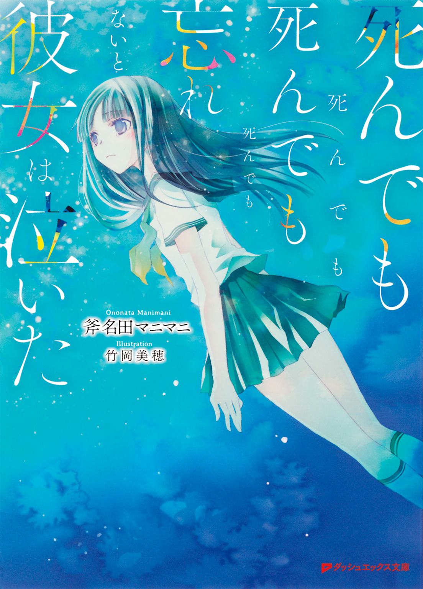
この本は縦書きでレイアウトされています。
また、ご覧になる機種により、表示の差が認められることがあります。
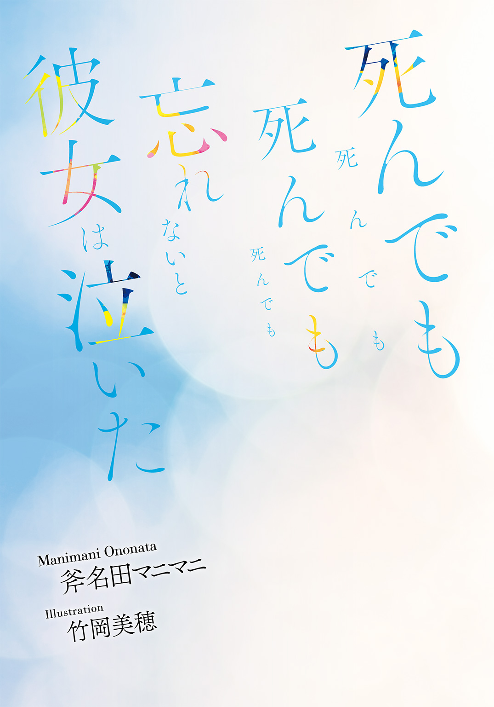
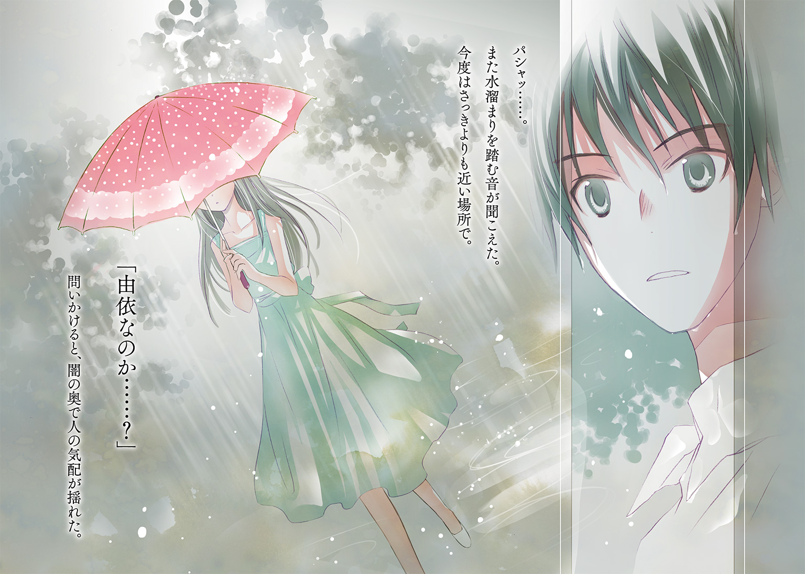
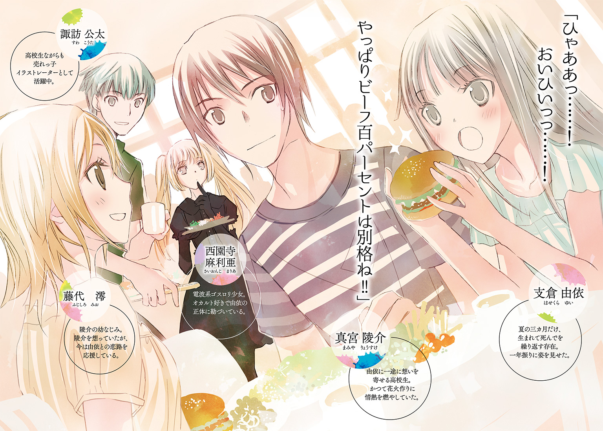
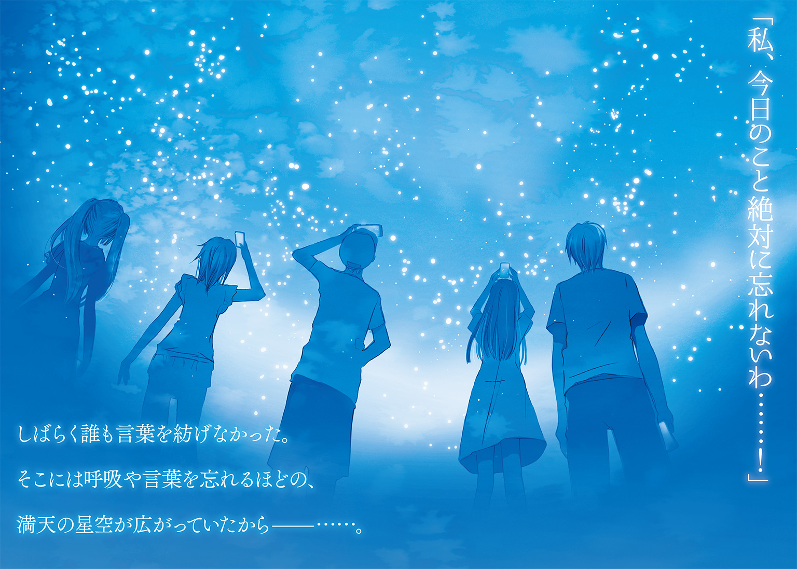
 ダッシュエックス文庫DIGITAL
ダッシュエックス文庫DIGITAL
死んでも死んでも死んでも死んでも忘れないと彼女は泣いた
斧名田マニマニ
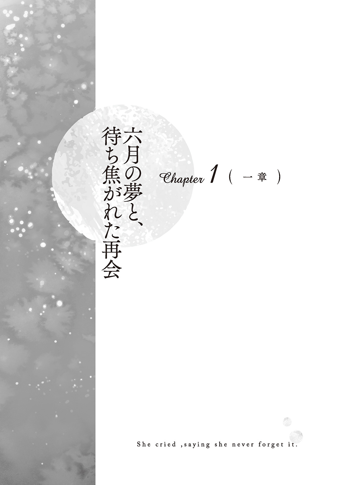
【１】
六月十八日の午後四時三十分、特別な約束の日。
小糠雨に包まれた青白い世界の向こうで、傘をさした少女が佇んでいる。
龍口寺の境内はひっそりと静まり返って、俺と彼女以外、人気はなかった。
彼女はまだ、こちらの存在に気づいていない。
それをいいことに、俺は境内の入口に立ったまま、小柄で華奢な後ろ姿を観察した。
由依が好きそうな淡い色のワンピースと、由依が好きそうな苺柄の傘――......。
......由依、だよな？
確信に近いものを感じながらも、一応、慎重に声をかける。
「えっと、あのー......。......由依、か......？」
ハッと息を吸う気配とともに、華奢な肩が揺れ、彼女が静かに振り返った。
「りょう......すけ......？」
俺の名前を呼んだ声は、以前より低くなっていた。
変化が現れているのは、声だけじゃない。
話に聞いていたとおり、振り向いた彼女の容姿は、俺の知っている支倉由依のものとは違っていた。
口や目や鼻の形が、若干、異なる。
人を寄せつけない雰囲気も、前より増した気がする。
俺の知っている由依は、もうどこにも存在しないんだ。
否応なしに喪失感がわき上がり、胸の奥がひどく痛んだ。
......って馬鹿か、俺は。
何を考えている。
去年の夏の終わりに決断したことを、しっかり思い出せ。
『顔が変わっても、声が変わっても、同じ記憶を持ってる限り、俺はその存在を支倉由依と認識する』
そう答えを出したじゃないか。
「......ねえ陵介」
由依は小さめの歩幅で、ゆっくり俺の傍までやってきた。
「......あのね、......私が誰か、ちゃんと理解できる？」
ふてくされているみたいな顔をしていても、声音には不安の色が滲んでいた。
だから俺は慌てて頷き返した。
「あ、当たり前だろ......！」
「ほんとに......？」
「ああ。だってその、......おまえそんなに変わってないよ。後ろ姿でも由依だって、気づけたぐらいだしな、うん！」
由依と自分自身、どちらに言い聞かせているのか、少し混乱する。
噓をついているわけじゃないのに、どうしてだろう。
かすかに罪悪感を覚える。
何かを欺いているような、そんな気がするのだ。
でもいったい何を？
わからない。
てか、わからなくて当たり前だ。
噓なんて、どこにもないのだから。
由依は確かに変わった。
けれど由依はそんなに変わっていない。
気の強そうな眼差しや、頑なな印象を与える口元には、去年の由依の面影がちゃんと残っている。
「おまえは紛れもなく、支倉由依だよ」
「そっか......。ありがと......」
心底ホッとしたように微笑んだ由依を見て、俺も安堵する。
大丈夫。
俺はちゃんと、目の前の彼女を、由依だと思いこめるはずだ。
「それにしても陵介！ 一年ぶりなのに、遅ーいっっっ」
「ああ、うん。急いできたんだけど、ごめん」
そういえば去年もよくこうして、むくれっ面の由依が、俺を責めてきたものだ。
プリプリ怒る顔もかわいくて、つい見惚れていると「私の話、ちゃんと聞いてないわねっ!?」なんて詰め寄られたり......。
そんな思い出が鮮やかに蘇り、懐かしさから、胸がいっぱいになる。
感情に呼応して、視界が熱く滲みかけたので、焦った俺は、強めの瞬きを繰り返した。
「もう！ どうしていっつも私のこと待たせるのよっ」
「そう言われてもな......。おまえって必ず、約束の時間より、だいぶ早く来るだろ？」
「まあ、せっかちなのは認めるけど......」
「だろ？」
「でもね、今日は十五分も待たされたのよ？ 理不尽だろうが、ちょっとぐらい文句を言わなきゃ気がすまないわっ」
「なんだ、理不尽なこと言ってる自覚はあったのか。それに待たされた時間だけで判断するなら、今回は俺のがずっと勝ってるっての」
「え？ どういう意味よ？」
「だって俺は十カ月の間、おまえが戻ってくるのを待ってたんだぞ？」
もちろん冗談の延長で言ったつもりだった。
けれど十カ月という言葉は、想像していたよりずっと重く、心にのしかかってきた。
由依も同じ想いを抱いたのか。
彼女は傘を投げ捨てると、勢いのまま俺に抱きついてきた。
「お、おい......。どうしたんだよ、急に......」
「......会いたかった......！ ほんとに会いたかったの......」
震える声で呟いてから、由依は俺の胸に頰をすり寄せた。
「陵介からも、ギュッてして......」
なんだ、なんだ、なんだ。
こんなふうに甘えてくるなんて、かわいすぎてやばい。
まるで夢みたいだ。
「ねえ、はやく......」
「うっ、えっと、それじゃあ......」
ぎこちなく腕を動かして、由依の体を引き寄せる。
ふわりと甘い匂いが香り、クラクラした。
「......だめ。そんなんじゃ足りない。もっと強く抱きしめてほしいの」
「え!? でもこれ以上強くしたら、痛いだろ......？」
「痛くてもいいの......」
「だけど......」
いくら由依から望まれても、痛みを与えるようなことはできない。
それに由依の体は柔らかすぎて、力を入れたら簡単に壊れてしまいそうな気がした。
俺の躊躇いを察した由依は、残念そうに溜息をついた。
「陵介ってば。私がいいって言ってるのに。......ねえ、だったらこっちは？」
「こっちって？」
返事の代わりに、由依は潤んだ瞳で俺をじっと見上げると、背伸びをして、静かに瞼を閉じた。
何を求められているのか、さすがに察しがついた。
つまり、そういうことだよな......？
ゴクリと喉が鳴ってしまった。
少しでも身を屈めれば、触れられる距離に彼女の顔がある。
濡れていて瑞々しい唇から、目が離せない。
だめだ。
なんか、めちゃくちゃ緊張してきた。
落ち着け俺。
別に初めてじゃないのだから。
いや、自分からするのは初めてだけど......。
ってそんなこと、今はどうでもいい。
とにかくまずは、肩に手を置いて......。
それから、ゆっくり顔を近づけて――......。
......――ピピピピッ!!
無遠慮で無機質な音が、無神経に鳴り響く。
耳元数センチの距離で。
ぎょっとして跳ね起きた俺の目に飛び込んできたのは、見慣れた自室だった。
「......なんだよ、くそ......。また夢かよ......」
ベッドに座ったまま、寝癖のついた頭をかき、けたたましく鳴り続けているアラームを切る。
『また』と感じたとおり、再会の日を夢に見るのは、これが初めてではなかった。
夢は残酷だ。
幸せの絶頂の直前まで一方的に引きずり上げ、唐突に手を離す。
目が覚めた瞬間の絶望に対し、責任なんてとってはくれない。
「......ったく最後の最後まで」
呻き声混じりの溜息を吐いた俺は、スマホを枕元に放り投げ、肩を落とした。
「夢には願望が現れるとか言うけど、わかりやすすぎだろ俺......」
由依の甘えた仕草、強請るように俺を見上げた瞳のすべてが、自分の望みを投影させたものだとすると......。
......勘弁してくれ。
いたたまれなくて、死にそうだ。
誰かに頭の中を覗かれてるわけでもないのに、猛烈に恥ずかしくって、あああと叫びながら、のたうち回りたくなった。
しかも今日の夢はこれまで見たどの夢よりも、浮かれた内容だった。
どうしてそんなことになったのか。
理由はもちろんわかっている。
わかっているのに、あえて確かめたくて、放り投げたスマホを再び手繰り寄せる。
液晶に表示された日付は、二〇一六年六月十八日。
つまり俺が由依と再会の約束をしているのは、今日だ。
「......浮かれるのも仕方ないっての」
十カ月もの間、この日を待ちわびたのだ。
俺は弾みをつけて、ベッドから起きあがった。
もうさっきまでの、消沈した気持ちではない。
願望を忠実に再現した甘い夢より、現実のほうがずっと素晴らしいに決まっている。
このときの俺は、疑うことなくそう信じていた――......。
【２】
いつもより素早い動きで着替えを済ませた俺は、ドタバタと階段を駆け下り、ダイニングへ向かった。
「おはよう、陵介。お弁当できてるわよ」
流し台で洗い物をしながら振り返った母親が、テーブルの上のお弁当を視線で示す。
「あー」
「『あー』じゃないでしょ！ 『毎日ありがとうございます、お母様』でしょ！」
「あー」
空返事をしつつ、落ち着きなく食パンを貪る。
軽く喉に詰まらせ、牛乳で無理矢理流し込んでいると、洗い物を終えた母親が怪訝そうな顔で近づいてきた。
「あんた、なんだか慌ててない？」
「べ、別に」
「普段は死んだような顔で、ダラダラ朝ご飯を食べるのに」
「うるさいな。こういう日もあるんだよ。ごちそうさま」
まだ不審そうにしている母親の脇を通って、洗面所へ向かう。
そわそわしたまま顔を洗って歯を磨き、家を飛び出した俺は、いつもより前のめりな体勢で自転車を漕いだ。
普段はうんざりする駅までの坂道も、今日はなんだかきらめいて見える。
俺も結構、単純なやつだ。
学校へ向かう間も、校門をくぐって教室に入ってからも、やっぱりずっと気持ちは急いていた。
いくら俺が待ち遠しさから焦って生活していようが、夕方が巻きで近づいてくるわけじゃない。
むしろ待ちわびるほど、時の流れを緩慢に感じるものだ。
頭では理解しているのに、勢いづいた心は俺を煽り続けた。
おかげでどの授業もいつもの五倍くらいの長さに膨れ上がり、俺を苦しめた。
くたばれ相対性理論と思った回数は、数え切れない。
そんなわけで昼休みが始まる頃には、俺の心は無駄に疲れ果てていた。
さっさと弁当を食べ、残りの時間、死んだ顔で机に突っ伏していると、ポケットの中でスマホが震えた。
グループチャットにメッセージを送ってきたのは、諏訪だ。
諏訪公太『花火くん、支倉さんとの約束って今日だったよねー。どんな心境ー？』
真宮陵介『おい諏訪、その質問三日前にもしただろ』
西園寺麻利亜『横から失礼します。三日前は「三日前だけど、どういう心境ー？」と聞いていましたね』
諏訪公太『やっぱ三日前と当日じゃ、全然違うっしょー？』
真宮陵介『べつに』
藤代澪『もうウソばっか。陵介くんってば一日ソワソワしてたのに』
真宮陵介『澪、余計なこと言うなっての......』
諏訪公太『ちゃんと明日、感想聞かせてね～』
真宮陵介『なんだよ、感想って？』
諏訪公太『支倉さんとの感動的な再会の感想だよ。十カ月ぶりなんでしょー？ ドラマチックでロマンチックなアレコレが起こるんじゃない？』
真宮陵介『おまえ気持ち悪い』
諏訪公太『花火くん、ひどー』
西園寺麻利亜『それと支倉さんの様子も気になります』
藤代澪『うんうん。体調、どんな感じか由依ちゃんに聞いてきてね！』
真宮陵介『わかった』
西園寺麻利亜『元気であれば、私も支倉さんにお会いしたいので』
「――確かに麻利亜ちゃんの言うとおりだなぁ」
背後から話しかけられ、唐突に現実世界へと引き戻される。
液晶から顔を上げ振り返ると、焼きそばパンとフルーツオレを手にした澪が立っていた。
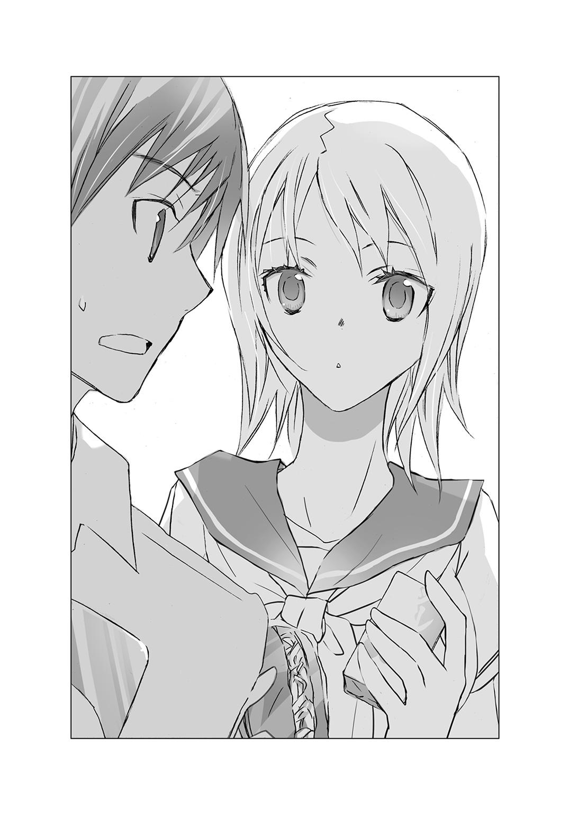
「澪、いきなり話しかけるなよ。びっくりするだろ」
直前までチャット内で話していた相手と、面と向かって会話をするのは、少し奇妙な感じだ。
「てか姿が見えないと思ったら、購買に行ってたのか」
「おやおや～？ 陵介くんてば、あたしの動向を気にしてたの？」
「バーカ。んなわけあるか」
「あははっ！ だよね！」
明るい笑い声をたてた澪は、前の席の椅子を引き寄せ腰を下ろした。
どうやら今日はここで、昼飯を食べていくつもりらしい。
俺と澪は、時々一緒に食事を取ったり、時々なんとなく一緒に帰ったりする。
要するに、あの告白以前と、何ら変わりない日々を過ごしていた。
気まずくならず、幼なじみらしい関係性を継続できたのは、澪が明るくあっけらかんと振る舞ってくれるおかげだろう。
正直なところ、ありがたい。
ただ照れ臭さから、本人に向かって、感謝の気持ちを伝えたことはなかったが......。
「さっきの話の続きだけど、明日は由依ちゃん、時間空いてないかな？ もし泊まりならやっぱりあたしたちも会いたいなって」
「えっ!? 明日!?」
「なんでそんなに驚くの？ あ、もしかして日帰りで帰っちゃうとか？」
「いや......。ど、どうだったかなー......」
「もう陵介くんったら、なんでそんな大事なこと、ちゃんと確認してないかな......」
「でも会うのはその......どうだろ」
「難しそう？」
「ああ......。うーん、そうだな、うん......。難しい......と思う」
「この一年、ずっと治療してたんだもんね......。体力もまだ回復してないだろうし、みんなで押しかけたら疲れさせちゃうか......」
「悪い......。でも由依には、ちゃんと伝えておくよ」
「うん、よろしくね！」
適当に頷き返し、さりげなさを装って席を立ったのは、ひどい罪悪感を感じていたためだ。
ちゃんと伝えると言ったけれど、みんなが心配していることや会いたがっていることを、由依に話すつもりはない。
俺はこうやって何度も噓をついてきた。
「俺、なんか飲み物買ってくるわ」
「んー、いってらっしゃい！」
逃げるように教室を出て、ようやく少しだけホッとする。
だからといって、後ろめたさが消えたわけではもちろんなかった。
俺が澪たちに噓をつき始めたのは、去年の夏の終わりのことだ。
由依が去った後、彼女の容態についてみんなから尋ねられ、どう返答するべきか散々迷った末の、苦肉の策だった。
『由依は死んだ』
そう伝えるのが最善だと、もちろん承知していた。
だって『夏の妖精』と呼ばれる人工生命体である由依の体は、ひと夏しか持たないのだから。
いくら今までの記憶を持っていようとも、外見が変わってしまう以上、去年の由依を知っている人間の前に、支倉由依として姿を現すことは不可能だ。
支倉由依として二度と再会することが叶わないのなら、彼女は死んだと伝えるほうがいい。
みんなもきっぱり諦めがつくだろう。
俺も容態を聞かれるたび、噓を重ねなくて済む。
頭ではわかっていた。
なのにどうしても、死という言葉を口にできなかった。
由依の存在を全否定することになる気がしたからだ。
『体が別の物になっても、記憶が残っているなら、私は私』だと、由依は言った。
俺はその考えを受け入れると決めた。
だったらたとえその場しのぎの噓であっても、やっぱり『支倉由依は死んだ』と口にしてはいけない。
結局『由依は治療のため東京の病院に入院した』と説明した。
当然みんなは疑うことなく俺の話を信じて、由依の容態を案じ続けている。
この十カ月、澪、麻利亜、諏訪のそれぞれから、数え切れないほど由依の病状について尋ねられた。
みんなが友達である由依を心配している気持ちは、嫌というほど伝わってきた。
次第に俺は居たたまれなくなり、再会の約束について、打ち明けてしまったのだった。
......いや、本当は罪悪感だけが理由じゃない。
俺自身、約束のことを知ってもらいたかったんだ......。
夏になれば、由依は必ず戻ってくる――。
交わした約束が果たされる未来を、俺はちゃんと信じていた。
一カ月のうち、半分ぐらいは。
でももう半分ぐらいは、不安で仕方なくて、押し潰されそうになっていた。
やっぱり由依はあのときあのまま死んで、二度と戻ってくることはないんじゃないかって......。
そんな不安を自力で完全に払拭できるほど、強かな心を残念ながら俺は持ち合わせていない。
だからしっかり信じていられるように、誰かに俺たちの約束を知っていてほしかったのだ。
「由依ちゃんが戻ってくるのは、来月だね」「ああ、そうだな」こんなやりとりをするたび、来月には戻ってくるんだって、客観的に再確認できる。
それに、言葉には霊力が宿るなんて話も聞いたことがあるし。
ただあれこれ理由を並べてみても、この噓が正しかったかどうか、未だにわからない。
今日由依に会ったら、どうするべきだったか聞いてみようか。
いっそみんながどう思ってるかも話す......？
いやいやいや、それはやっぱりやめたほうがいい。
みんなと由依は、もう二度と会えないんだ。
心配して会いたがってると知ったって、辛いだけだろう。
恐らくは――......。
【３】
みんなの想いを、由依に話すべきか、話さないでおくべきか？
昼休みに悩み始めた問題について、授業が始まってからも考え続けていたため、午後は午前中よりいくらか早く時間が経ってくれた。
そしてようやく訪れた放課後――。
俺は授業終了のチャイムが鳴るのと同時に、鞄を摑んで教室を飛び出した。
昇降口を出ると、小雨が降っていた。
教室まで引き返せば、ロッカーにビニール傘がしまってある。
でも雨がなんだ。
そんなことより、一刻も早く約束の場所へ辿り着きたい。
校門を出た俺は、駅までの道を、全速力で駆け抜けていった。
悩んでいたことの答えは出ていないけれど、それは由依と会ってから考えることにした。
頭の中は、由依とやっと会えるという事実でいっぱいで、他のことを考えている余裕などなかった。
駅に着くと、ちょうど藤沢方面行きの電車が発車するところだった。
なんとか飛び乗り、一息つく。
江ノ電の車内は今日も相変わらず、観光客で賑わっている。
俺は扉にもたれかかって、はやる気持ちを抑えるため、目を閉じた。
しばらくして電車は、江ノ島駅に到着した――。
がっかりした表情で雨空を眺める観光客の間を縫うようにして、改札を出る。
鞄を雨よけにして走ること数分――。
辿り着いた龍口寺は、夢と同じように霧雨に包まれ、青白く煙っていた。
夢と違うのはただ一点、境内に由依の姿がないことだった。
俺が先に着くなんて珍しい。
せっかくの機会だ。
由依に会ったら、「遅かったな」と言って、からかってみようか。
門の下で雨宿りしながら、そんなことを考えていると、つい口元が緩んでしまった。
にやけた笑いを浮かべてるところなんて見られたら、由依に散々いじられそうだ。
彼女がいつ現れるかわからないので、手の甲で口元を覆って、なんとか表情を引き締める。
ところが......。
それから二時間――。
いくら待っても、由依は姿を現さなかった。
「なんで来ないんだよ......」
途中で何かあったのか。
そもそもここへちゃんと向かっているのだろうか。
いやそれ以前に、『夏の妖精』の話は作り話で、由依はやっぱりあのときあのまま......。
この十カ月の間、時折浮かんできた恐ろしいイメージが、俺を押し潰そうとする。
「......だめだ。くだらない想像をするな......」
自分に言い聞かせ、頭を振って、最悪な思考を追い払う。
とにかく落ち着いて、どう行動するべきかを考えなくては......。
なんとかして連絡を取りたいが、由依のケータイは、去年の夏以降、繫がらないままだ。
それならば、長谷にある由依がかつて住んでいた家へ行ってみるべきか。
いや、あの家に戻っている可能性は低い。
すれ違うリスクを考えると、やっぱりここを動くのは得策ではない。
「......てことは、このまま待ってるしかないのか」
門柱を背もたれにして座り込み、ため息をつく。
そしてさらに三十分が経った――。
雨のせいで、辺りはすっかり暗くなってしまった。
由依はもう現れない。
そう悟って、うなだれたまま立ち上がろうとしたとき――......。
不意に、パシャッと水たまりを踏む音が、暗がりの向こうから聞こえてきた。
慌てて顔を上げるが、雨と闇が邪魔をして、視界がきかない。
俺は目を凝らしながら立ち上がり、数歩踏み出した。
パシャッ......。
また水溜まりを踏む音が聞こえた。
今度はさっきよりも近い場所で。
「由依なのか......？」
問いかけると、闇の奥で人の気配が揺れた。
雨だれの向こうから、鮮やかな水玉模様の傘が現れたのは、その直後のことだ。
「え......？」
傘の下の顔を見た瞬間、思わず疑問の声がこぼれた。
だっておかしい。
「どうしてだ......？」
「......どうしてって？」
俺の問いかけに対して、由依は小首を傾げた。
そう、今目の前に立っているのは由依だ。
信じられないことに、一年前別れたときと変わらない、俺の知っている由依だ。
よく似た別人なんかじゃない。
紛れもなく、俺の好きになったままの彼女だった。
「......なあ、由依。おまえ、去年のままだよな......？」
外見が変わるという件はどうなったのだろう。
もちろん俺は以前のままの姿で戻ってきてくれたことが嬉しかった。
ただ予想外の出来事なので、動揺しているのも事実だ。
由依からの答えは、なかなか返ってこない。
「由依？」
再び呼びかけてみると、由依はきょとんとした顔で、数回、瞬きをした。
「......ねえ、なんで私の名前を知っているの......？」
「......は？」
質問の意図がわからず、困惑している俺を見て、由依は怪訝そうな表情を浮かべた。
「だからつまり、あなた誰なの......？」
「......誰って」
俺は再会の喜びも忘れて、些かムッとした気持ちになった。
由依からしたら、冗談のつもりなんだろう。
でもさすがにその質問はひどい。
「まったく、なにふざけてるんだよ。久しぶりに会ったっていうのに......」
「ふざけてなんかないわ！ 真面目に聞いてるの！」
ムキになって言い返してきた由依は、ひどく真剣な顔をしている。
俺の中で、嫌な焦りが膨らみ始めた。
なんだかおかしい。
「......ちょっと待ってくれ。俺が誰かって質問を、真面目にしてるっていうのか......？」
「そう。私はあなたをまったく知らないもの」
「......その冗談、全然笑えないって。......なんだよ、なんか怒ってんのか？ それで俺のこと忘れたふりしてるんだろ。思い当たる節ないけど、とりあえず謝るから機嫌直せって」
「いい加減にして！ 冗談じゃないって、何度も言ってるわっ」
「だけど......」
「もういい。話にならないし、私帰る」
「ちょっと待てって！」
踵を返そうとした由依を、慌てて引き止める。
まさかこんなわけのわからない状況のまま、帰すわけにはいかない。
「そ、そうだ......！ 俺のことがわからないなら、なんでおまえは今日ここに現れたんだよ。俺と約束したのを覚えてたからだろ？」
「『六月十八日、午後四時半に龍口寺で待ち合わせ』。去年から使っている手帳に、そうメモが残っていたのよ。何の予定なのか、全く記憶になかったし、最初は放っておくつもりだったんだけど。なんとなく気になったから、一応確認に来てみたの」
「全く記憶になかったって......。俺との約束を忘れちゃったのか......？」
「......私とあなたが約束したの？」
「ああ、去年の夏の終わりに」
「......知らない人と、どうやって約束するっていうのよ」
「おまえ、ほんとに俺のこと覚えてないのか......？」
俺を間近からじっと見つめた後、由依は残酷なほどきっぱりと、首を横に振った。
「覚えてないんじゃない。あなたのこと知らないの」
「なんだよ、それ......。俺とおまえは付き合ってたんだ。覚えてるだろ!?」
「えっ......」
大きな目が、まん丸に見開かれる。
その直後、由依の頰がポッと赤く染まった。
「つ、付き合ってたって......。な、なに言ってるのよっ......」
由依は視線をせわしなく泳がせて、落ち着きなく髪を耳に何度もかけた。
こっちまで恥ずかしくなるほどの動転ぷりだ。
「やっぱり私帰るっ！」
「だけどまだ話が――......」
「話なんてもういい！ それにこの私が、記憶を失うなんて、ありえないからっ！」
憤りに満ちた声を上げ、真っ赤な顔をした由依が俺を睨みつける。
頑なで完全な拒絶を感じた。
「さよならっ!!」
「由依......！」
呼びかけても、由依は歩みを止めてはくれず、闇の中へ去っていった――......。
そのあとどうやって龍口寺から家まで帰り着いたのか、記憶は曖昧だ。
由依の態度と言動があまりにショックで、しばらくの間、人としてうまく機能できていなかった。
頭は何も考えず、心は何も感じず、目は何も見ない、そんな状態。
俺は二足歩行するだけのロボットのように、呆然としたまま、ただ事務的に足を動かし、気づくと自分の家の前に佇んでいた。
母親は、玄関先に立ったずぶ濡れの俺を見て顔をしかめると、軽く背中を叩いて風呂へ入るように命じた。
湯船に浸かることで、強ばっていた体は解れ、ロボット化は緩和できたが、感情の混乱はいっこうに収まらなかった。
「......いいか、俺。とにかく落ち着いて考えるんだ......。落ち着け落ち着け落ち着け......。動揺して、落ち込んで、呆然としてるだけなんて、無意味すぎるからな......。建設的に物事を考えるんだ......」
まずは状況を整理し、現状をしっかり理解しないと。
そもそも由依の悪ふざけという可能性だって、まだ捨てきれない。
だって一番自然な結論だ。
でも由依の態度を思い返すと、不安は急速に膨張した。
俺を騙して面白がっている素振りは皆無だったし、由依の表情から読みとれたのは、戸惑いと苛立ちぐらいだ。
だいたい由依は、完璧に人を騙せるほど器用なタイプじゃない。
絶望が肺の奥からこみ上げてくる。
最悪だ。
最低だ。
「......由依のやつ、まじで俺のこと、忘れちゃったのか......？」
呟いた言葉の重みで、心が押し潰されそうになった。
本当に最低最悪だ。
――夏が来れば、彼女に会える。
夏が来れば、もう一度、あの幸福な時間が返ってくる。
そう言い聞かせて、ただひたむきに、再会の日を待ち続けた。
そんな能天気な俺のことを、どこかで運命という化け物が嘲笑っているような気がした――......。
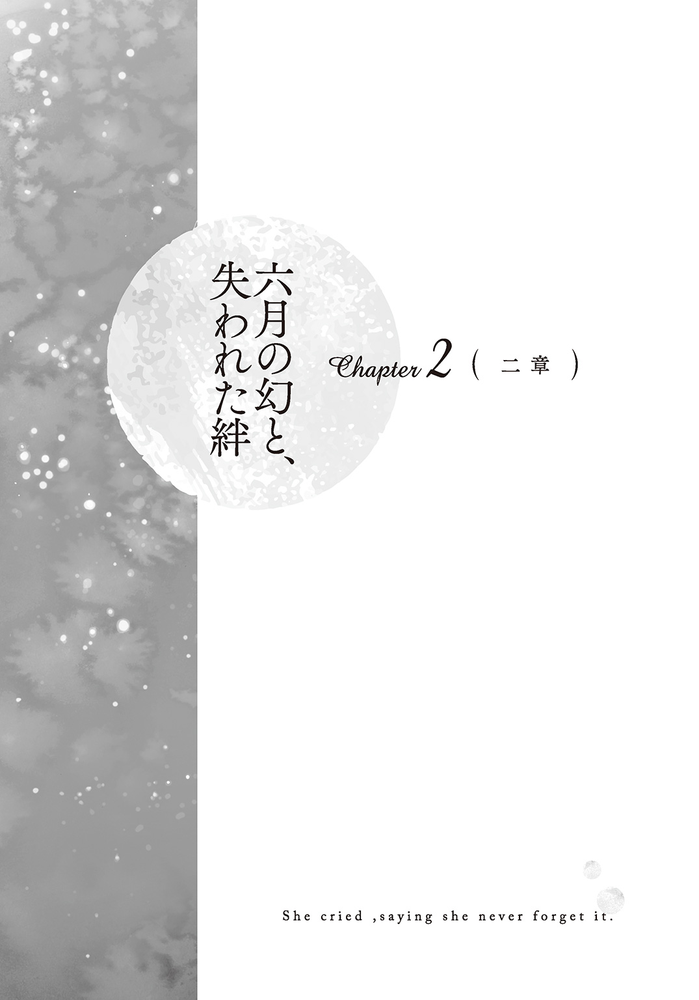
【１】
あれは悪ふざけだ、いや記憶喪失になったんだ、いいや悪ふざけだ違う記憶喪失だっての死にたい悪ふざけであってくれ死にたい。
日曜日一日を使って、そんな堂々巡りをしているうちに、気づくと朝になっていた。
寝不足のせいで、こめかみの辺りがひどく痛む。
俺は、まるでゾンビのような動きで身支度を整え、なんとか家を出た。
週末に降った雨はすっかり上がり、燦々と輝く太陽が朝顔についた滴を、きらめかせていた。
イッツ・ア・ワンダフル・ワールド的アピールか？
ふざけやがって。
太陽も朝顔も世界もいっそ滅びればいい。
もちろん完全な八つ当たりだ。
わかっていても、見苦しい苛立ちは留まるところを知らない。
ますます背を丸め、邪悪な心で世の中のすべてを恨んでいると、後ろから吹き出すような笑い声が聞こえてきた。
「陵介くんってば。どうしたの、その歩き方！」
笑いながら駆け寄ってきた澪は、顔を上げた俺を見て、目を丸くさせた。
「えっ......!? ほんとにどうしたの、陵介くん!? すごいクマができてるよ......！」
「......気のせいだろ」
「まさかそれで誤魔化せるなんて思ってないよね？ ......もしかして由依ちゃんと何かあったの？」
「......別に。何も......」
「だーかーらー！ それで誤魔化せるなんて思ってないよね!?」
澪がしつこく言うとおり、俺だって本気で誤魔化せるなんて考えてない。
子供の頃からずっとそうだったように、どうせ噓をついても、澪には見破られてしまうのだから。
「でも話したくないんだよ」
だいたい俺自身が、現状をしっかり把握できていないのだ。
まだ相談したり、打ち明けられるような段階じゃない。
それを置いておいても、言えるわけがなかった。
由依が記憶喪失かもしれないなんて......。
そんな話をしたら澪だって、きっと傷つくだろう。
昨日の俺のように。
あんな想いをするのは、俺だけで十分だ。
「あのねあたしだって、陵介くんが話したくないことぐらい勘づいてるよ。だけど心配だから聞いてるんじゃん」
「放っておくっていうのも優しさだぞ」
「まあ、うん......。それは理解できるけどね......」
澪は少しの間黙り込んでから、堪えきれないというように、勢いよく顔を上げた。
「ねえ、陵介くん！ やっぱり、少しだけ話してみない？ もちろんお節介なのはわかってるよ」
「おまえなぁ......」
「だってどうしても気になるんだよ！ あれだけ浮かれて出かけていったのに、次の日会ったらウォーキングデッドになってるなんて、衝撃的過ぎだもん！」
「......わかった。それなら仕方ないから、こうさせてもらう」
「え？ 何？」
「......」
「え？ 陵介くん......？」
「......」
「なんで何も言わないの!?」
「......」
「ちょっと！ まさかだんまり......!?」
そのとおり。
こういうときは、黙ってしまうのが一番、手っ取り早い。
黙秘で防御する手段を選んだ俺は、そのまま学校に到着するまで、頑なに沈黙を守り続けた。
よっぽど腹に据えかねたのか、澪は「白状するまでつきまとうからね！」と宣言し、実際休み時間のたび、俺の席にやってきた。
こうなるともう意地の張り合いだ。
澪も俺も、普段決して我を押し通そうというタイプではない。
澪は温厚な性格だし、俺は揉めるより妥協するほうが、ずっと楽だと思っている人間だ。
ただ今回は、幼なじみという気の置けない間柄が災いした。
他人相手なら引くところでも、子供っぽく固執してしまう。
要するに俺たちは、二人してムキになっていた。
「早く打ち明けて楽になりなよね、陵介くん！」
三限の授業終了と同時に、澪は飽きもせず俺の席まで駆け寄ってきた。
「しつこいっての。絶対に話さないって何度も言ってるだろ」
「もうっ！ 陵介くんってば、どうしてそんなに頑固なのかな!?」
「それより次、移動教室だぞ。さっさと支度しに戻れよ」
「残念！ ちゃーんと準備してありますよーっだ」
澪は自分の机の上に準備してあった教科書類を摑むと、すぐ俺の後を追いかけてきた。
第二理科室へ向かって歩きながら、俺たちは飽きもせず堂々巡りのやりとりを繰り返した。
ところが、旧校舎へ続く渡り廊下へ出たとき、澪が「あれ？」と呟いて歩みを止めた。
渡り廊下の向こうからは、さっきまで移動教室を使用していたクラスの生徒たちが、ゾロゾロやってくるところだ。
上履きの色が赤だから、二年生だとわかる。
いやそんなことはどうでもいい。
澪の視線を追った俺は、集団の後方、居心地悪そうに俯いている少女を見つけて、ギョッとした。
信じられない。
いったいどういうことだ。
「......なんで由依がいるんだよ？」
「わぁ！ 由依ちゃん、学校に戻ってきたんだね！」
澪の弾んだ声を聞き、ハッとしたが、もう遅かった。
「由依ちゃーん！」
うれしそうに由依の名前を叫んだ澪は、止める間もなく駆け出していた。
まずい。
もし由依が記憶喪失だとすると、澪のことだって誰だかわからないはずだ。
ところが呼びかけられ顔を上げた由依は、澪を見つけると、うれしそうに顔を綻ばせた。
「澪！ 久しぶり！」
「ほんと！ 会いたかったよ～！」
二人は同性同士の親密さで手を取り合い、再会を喜び合った。
呆然としている俺の数メートル先で。
......なんだよ。
やっぱりそういうことかよ......。
まったく、悩ませやがって。
やっぱり記憶喪失なんかじゃないんだな。
「ねえ由依ちゃん、学校にはいつ戻ったの？」
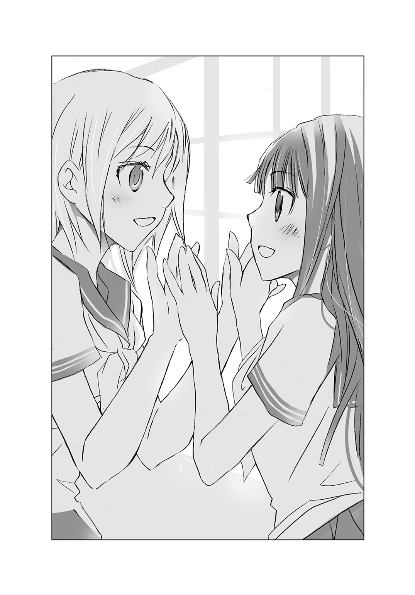
「復学したのは今日よ！ 単位の関係で二年生をやり直しだけど......」
夢中で話していた由依が、何気なく視線を動かす。
そこで初めて、俺の存在に気づいたようだった。
途端に由依の顔つきが変わる。
「あなた、昨日の......！」
「陵介くん？ 何してんの？ そんな離れた場所に突っ立ってないでこっちおいでよ」
気まずげに立っている俺に向かい、澪が手招きをする。
「待って。彼、澪の知り合いなの......？」
由依は澪の掲げた腕を摑んで問いかけた。
「えっ......？ 『知り合いなの』って......？」
澪が不思議そうに、二度ほど瞬きを繰り返した。
動揺したのは俺も同じだ。
まさか澪の前でも、俺を覚えていないと主張するなんて。
いったい由依は何を考えているのか。
「......澪は覚えていて、俺の存在だけ忘れたって言いたいのかよ」
非難を込めた視線を向けると、由依も負けずに睨み返してきた。
「忘れたんじゃなくて、最初から知らないって言ってるでしょ！」
「ちょっと待って！ 二人ともいったいどういうこと......？」
澪が俺と由依を見比べる。
俺は鬱々とした気持ちで、口を開いた。
「......由依が俺のことなんて知らないって、言い張るんだよ」
「ええっ......？」
困惑した表情で澪が口を開きかけたとき、四限開始のチャイムが鳴り始めた。
「澪、またゆっくり話しましょ！ それにみんなとも会いたいわ。じゃあね！」
由依はチャイムを気にしながら、せわしない口調で澪に向かってそう伝えると、渡り廊下を駆けていった。
結局、俺は次の授業中、龍口寺で何があったかを、澪に説明する羽目になった。
澪は形だけ理科の実験を続けつつ、じっと俺の説明を聞いていて、すべてを聞き終わったあと、ぽつりと呟いた。
「そんな......。由依ちゃんが陵介くんを覚えていないなんて......」
「俺、全然信じられなくてさ」
「それはそうだよ......」
「最初は由依の冗談だって思ったんだ。でも、あいつの態度が、ふざけてるようには見えなくて。澪はどう感じた？」
「状況は信じがたいけど、でも由依ちゃんは、本当に戸惑ってるみたいだったよ......」
「だよな......」
「でもまだ、結論を出すのは早いよ。みんなにも相談してみたらどうかな？」
「ああ、そうだな......」
澪に話した以上、諏訪や麻利亜にも打ち明けるべきだろう。
俺たちは一日置きに、大船駅前の進学塾で顔を合わせる。
ちょうど今日は、塾の日だった。
諏訪と麻利亜には、「話があるから今日は早めに塾へ来てくれ」と連絡を入れた。
夏祭りが終わり、由依がいなくなったのに、その後も残された四人で仲良しごっこのようなことを続けたきっかけは、澪にあった。
実は諏訪と麻利亜とは秋になった途端、会う回数が減り、連絡を取る回数も減って、疎遠になりかけていた。
俺たちは確かにあの夏、毎日五人で一緒に過ごした。
でも、もともとは夏祭りで花火を打ち上げるためだけに集まったメンツだったし、目的がなくなってしまえばバラバラになるのも自然な流れといえる。
放っておいたら単なる他人になるのも、時間の問題という感じだった。
単なる他人ってのはつまり、ごくまれに大船駅辺りで遭遇して、お互い気まずい感じで挨拶を交わす、そういう友人以下の関係性だ。
「せっかく仲良くなったのに、それは寂しい」と澪は言った。
俺はみんながバラバラになることで、由依のいた痕跡が消えてしまう気がしたから、澪の提案に賛同した。
諏訪と麻利亜がどんな気持ちで、進学塾通いを承諾したのかは聞いていない。
あいつらにはあいつらなりの理由があるのだろう。
放っておけば消えるはずのものを、意識的に繫ぎ止め、関係性を維持していく。
こういう間柄も友達というのか、俺にはよくわからない。
ただ無駄に暑苦しくないから、居心地は割合いつも良かった。
夕方――。
塾の階段脇の談話室で澪と二人待っていると、授業の始まる四十分前に麻利亜が、三十分前に諏訪がニヤつきながら姿を現した。
「先に言っておくが、のろけ話を聞かせるために呼び出したんじゃない。だからニヤニヤするな、諏訪」
「いやいや、散々じらしてそれはないっしょ花火くん。俺めちゃくちゃ期待して来たんだよー？」
「はぁ？ なんだよ、じらしてって」
「ラインで昨日のこと聞いても、既読スルーだったんじゃん」
「それには理由があったんだよ......」
「直接話したほうが、『リアル充実してますアピール』をしやすかった的な？」
「アホか。つか、のろけ話じゃないって言ってんだろ！」
「なんでそんな否定するかなー。別にちゃんとのろけ話でも、俺たち快く聞いてあげるよー？」
「のろける人というのは、のろけようと思ってのろけるものではないですから。ほとんどの場合、無意識下の行動です。今回の真宮くんの場合もしかり」
麻利亜は黒レースの手袋をした指先を口元に当て、ころころと笑い声を立てた。
「あ、なるほどそういうことかー。鋭いねー西園寺さん」
「ふふっ。それほどでもありません」
「いや、得意げな顔してるけど麻利亜の意見、間違ってるから！」
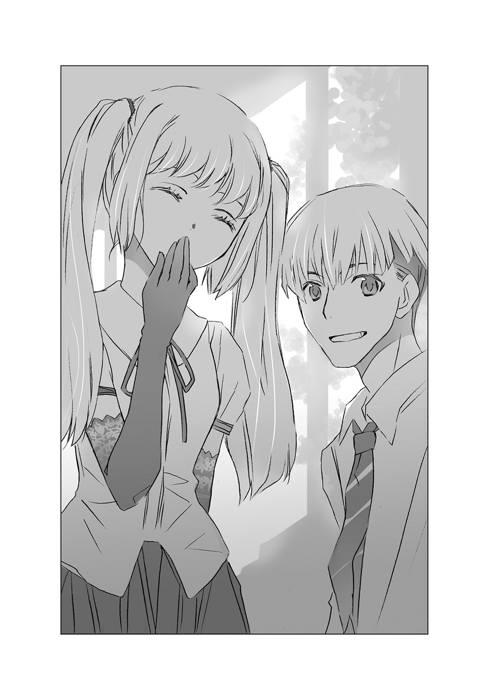
まったくこの二人、俺に対する接し方が、面倒くさい部分で似ているから困る。
澪が苦笑しながら止めてくれなかったら、諏訪と麻利亜の『俺いじり』は、きっと延々、続いていただろう。
「無駄に脱線しちゃったけど、時間もあんまりないし、本題を話すぞ」
それから数分――。
俺が龍口寺での出来事を説明し終えると、諏訪たちもやっぱり澪と同じように、信じられないという表情を浮かべた。
「......相当に突拍子もない話ですが、つまり支倉さんは記憶喪失になったということですよね？」
「ああ」
麻利亜の言葉に頷き返す。
「差し出がましいようですが、そんな発言をすると、電波だと思われてしまいますよ？」
「......麻利亜にだけは言われたくないぞ、それ」
「でもさー......、現実にありえるのかな、記憶喪失なんて。ドラマとか映画ではよく出てくるけど......。実際、俺の周りに記憶喪失になった人なんて、今まで一人もいなかったしなー」
諏訪が首を傾げると、ポキポキッと骨が鳴った。
澪はすごい音だねと感心してから、諏訪の疑問に答えを返した。
「ただ由依ちゃんが噓をついてるようには、見えなかったんだよね」
「まじかー......。花火くんの受けた印象は？」
「俺も澪と同意見だ」
思い出すたび、胸が苦しくなるが、由依のあの態度はどう考えても演技じゃない。
「となると支倉さんが、私の『ハジメテの人』になってくれるかもしれないわけですね。ふふっ」
「はじめてのひと......？ どういう意味だよ？」
麻利亜の発言が理解できず問い返す。
こういうことはよくあったが、今回のもまたひどい。
「『私の知人の中で、初めて記憶喪失になった人』という意味です。ふふふっ」
やっと理解し、納得していると、諏訪がやたらとニヤつき始めた。
「あーそれなら俺にとってもハジメテの人だ」
「いい響きですよね。ハジメテの人。ふふっ」
「おい麻利亜、初めての部分を変に強調するな。あと諏訪、その薄ら笑いを引っ込めろっての」
「あははっ。陵介くんはすぐ二人のオモチャにされちゃうね」
笑い事じゃないっての。
「でもなんつーか、二人があんまりいつも通りの態度のままだから、俺もちょっと冷静になってきたわ......」
由依の記憶喪失疑惑が浮上してから、全然落ち着いて物事を考えられずにいた。
だがようやくここにきて、今起きてることを、ありのまま受け入れられるようになってきた。
「持つべきものは、深刻に話を聞かない友達だろー？ ――ただちょっと真面目に意見を言うと、とにかくまず支倉さんから、しっかり話を聞くべきじゃないかなー」
諏訪にしては珍しくまともな意見だ。
「もし陵介くんが気まずかったら、あたしが代わりに由依ちゃんと会ってこようか？」
澪の提案を受けた俺は、少し考えてから、首を横に振った。
「......いや、とりあえず俺が話をしてみる。こっちが冷静に話せば、由依も聞く耳を持ってくれるだろうし」
けれど残念ながら、俺の見通しは甘すぎた。
バカな俺は、ちっとも想像できていなかったんだ。
俺たちを新たな悲劇に巻き込む歯車が、とっくに回り始めていたことや、その先にある胸が抉られるほどの悲しみを。
二度目の夏の恋が、どんな結末を迎えるのかさえ――......。
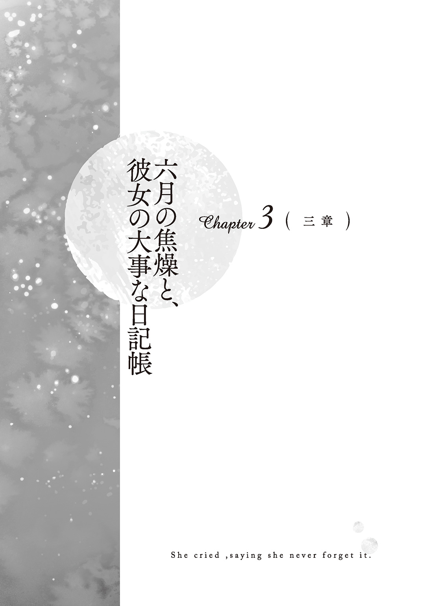
【１】
翌日の夕方。
俺は高校前駅のホームで、由依が現れるのを待っていた。
また六限終了のチャイムが鳴ると同時に全力疾走したので、俺より先に駅へ辿り着いてくるということはないだろう。
もし由依が、去年と変わらず電車通学なら、会えるはずだ。
しかし電車通学でなく、徒歩やバス通学だったら......？
......そのときはまた改めて策を練ればいい。
とにかく今は、電車通学の可能性に期待して、待つしかないのだから。
そこまで考えた後、無意識に溜息をこぼしてしまった。
正直、由依の態度を思い出すと、どうしても気が重くなる。
今のままの状態が続くなんて耐えられないし、由依と話してくるとみんなに宣言してしまった手前、逃げ出すこともできなかったが......。
ホームの端のベンチに座って二本目の電車をやり過ごし、そんなことを思っていると、不意に左のほうから射抜くような視線を感じた。
ハッとして顔を上げる。
俺が見つけたのは、改札の手前で立ち尽くし、警戒するような瞳で、こちらを見つめている由依の姿だった。
よかった、会えた......。
とりあえず第一関門は突破できたわけだ。
次はなんとかして、由依としっかり話をしなければならない。
ベンチから立ち上がった俺は、意を決して由依のもとへ歩み寄っていった。
「話がしたくて待ってたんだ」
「......待ち伏せしてたってこと？」
眉根を寄せた由依が、俺を睨みつける。
ここ数日で何回も見た、疑いと不安と苛立ちの混ざった顔つきだ。
由依のこの表情は、本当に堪える。
「ごめん......。だけど、そうでもしないと話しようがないから」
「ふんっ！ こっちには話なんてないわよっ！」
まるで嚙みつくような勢いだ。
「おまえなぁ......、なんでそう喧嘩腰なんだよ......」
ついいつもの癖で、よけいなツッコミを入れてしまった。
まずいと思ってももう遅く、由依の眉はこれ以上ないくらいにつり上がった。
「『なんで』ですって!? そんなのあなたを警戒してるからに、決まってるじゃないっ」
「ま、まあとりあえず落ち着けって......」
「落ち着けるわけないでしょっ!!」
真っ赤な顔で怒鳴り散らす由依と、怒鳴られている俺は、ホームの中で猛烈に目立っていた。
「ねえ、あれ......、隣のクラスに復学した子じゃない？ 戻ってきたばっかなのに、痴話喧嘩かな？」
「うそまじで？ 超うけるんですけどー」
「......っ」
クスクス笑う少女たちの声を聞いて、気まずげに黙り込んだ由依は、そのままホームの奥へと歩き出した。
俺も慌てて後を追う。
「なんでついてくるのよっ」
「だから話があるんだって」
由依は先ほどの女生徒たちのほうを、チラッと見た。
彼女たちは不自然に黙り込んで、俺たちのほうにジワジワと近づいてくる。
聞き耳を立てようとしているのは、一目瞭然だった。
「ねえ、もうどっか行ってよ......！ あなたのせいで変な噂を立てられるなんて、冗談じゃないんだからっ」
ここで引き下がったら、何も変わらない。
卑怯な方法ではあるが、俺は今の状況を利用することにした。
「ちゃんと話をしてくれるなら、人に聞かれない場所に移動するまで、大人しくしてる。承諾してくれないなら、周囲の人間が痴話喧嘩だと誤解するような言葉を、わめき立てるぞ」
「なっ......！」
「『捨てないでくれ』とか、『俺とは遊びだったのか』とか、みっともない言葉を並び立てて、大騒ぎするぞ」
「ちょっ......！」
「なんだったら、地べたに座り込んで、駄々をこねてもいいぞ」
「あ、ありえないわよっ......!!」
由依はあんぐりと口を開け、俺と周囲を交互に眺めた。
もうすぐ次の電車の到着時刻なため、ホームには下校中の生徒が、どんどん増えていっている。
「三秒以内にどっちにするか決めてくれ。三......、二......、一......」
「わ、わかったわよっ......。別の場所に移動してから聞くわ！」
「悪いな」
「ほんと信じられない......。なんでこんなことに......」
由依は吐き捨てるように言って、俺から視線を逸らした。
十五分後――。
長谷駅で江ノ電を降りた由依は、無言のまま駅の近くにある公園へと向かった。
住宅街の中にあるエアポケットのような場所で、遊具の数はたったの三つ。
何の変哲もない小さな公園だけれど、由依はここが好きだと言っていた。
そう俺たちは去年、二人で何度かこの公園を訪れている。
本当は何もかも覚えていて、俺をこの公園に連れてきたんじゃないか。
そんな淡い期待が芽生えたが、冷ややかな表情のまま、警戒するように距離を取っている由依を見た途端、小さな希望は呆気なく潰えてしまった。
「それで、話って？ また記憶喪失がどうとかって言いたいの？」
ベンチに座った由依は、足と腕を組んで、俺を下から睨みつけてきた。
俺は平静を装うため、ぎこちなく顔を強ばらせた。
気圧されてはいけない。
たとえ由依がめちゃくちゃ不機嫌で、ガルルと唸りそうなほど敵意をむき出しにして、小学生の時からたいして成長していない俺の繊細な心が、もうボロボロのケチョンケチョンに傷ついていたとしても。
決して引き下がれない。
「もう何度も言ってるけれど、私が記憶をなくすなんてありえないから」
「......だよな。ある理由から、おまえは『自分の記憶が欠落したことを絶対に認めたくない』んだよな。もし俺がおまえを一方的に知ってるだけで、付き合ってたとかそういう話が全部俺の妄想だったら、俺がその理由を知ってるわけないよな？」
「......何が言いたいのよ」
由依の瞳が微かに揺れた。
頑なに閉ざされた扉をこじ開けるためのきっかけを、俺はそこに見出した。
その隙間に指を突っ込んで、なんとしてでも扉を開きたい。
「俺はおまえの秘密を知ってるんだ」
「私に秘密なんてないわ」
「いいや、それは噓だ」
きっぱり言ってのけると、また由依の視線に動揺の色が滲んだ。
「......だったら、言ってみなさいよ。私の何を知ってるのか。どうせハッタリでしょ！」
俺は深く息を吸って、真っ正面から由依を見つめた。
「おまえは『夏の妖精』。ハセクラユイの記憶を引き継ぎ、人工的に造り出された生命体。寿命は三カ月、――去年まではな」
呆然とした表情で、由依が瞬きを繰り返す。
「ど、どうして......。どこでそれを......」
取り繕うこともできないほど、彼女はショックを受けているらしかった。
「去年のおまえが話してくれたんだよ」
「う、噓......。そんなの噓よッ......！」
「だったら俺はどうやって知ったっていうんだ？ おまえが話さない限り、俺は知りようがない」
「だけど......。そ、そうよ......！ 絶対とは言えないわ......！」
動揺しきった声で、由依が叫ぶ。
由依の思考がぐらつき始めたのを見て、俺は内心ガッツポーズを取った。
このタイミングを待っていた。
今が畳みかけるチャンスだ。
俺は鞄を開けると、隠し持っていた武器を、彼女に差し出した。
淡い色味で苺柄の模様が入ったノートを。
これは去年、由依がつけていた日記帳だ。
「......何なの？」
「開いてみればわかる」
渋々受け取った由依は、最初のページをめくった瞬間、息を呑んだ。
「そんな......」
「見たことのある字だろ」
「......当たり前でしょ......。だってこれ私の字だもの......」
「日記自体に見覚えは？」
由依は力なく首を横に振った。
「俺は去年、おまえの父親からこの日記帳を受け取ったんだ」
「父が......？」
「とにかく読んでみてくれ。去年の出来事が、書いてあるから」
しばらく躊躇った後、由依の細い指はページをめくり始めた。
俺は黙って、由依が日記を読むのを見守っていた。
ところが、そのとき――......。
「っ......うぅっ......」
唐突に、由依が苦しげなうめき声をこぼした。
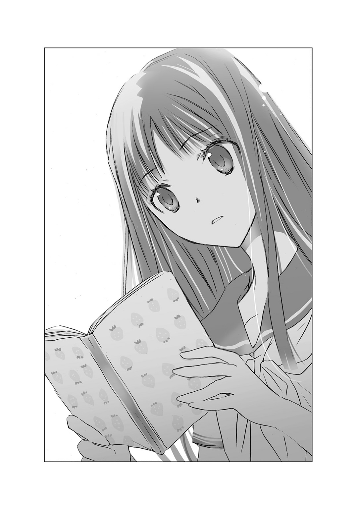
「由依......？」
日記帳が、バサッと音を立てて地面に落ちる。
頭を両手で押さえ、由依は荒い呼吸を繰り返しながら、前のめりになっていった。
俺は慌てて駆け寄り、ベンチから落ちかけた由依の体を抱き留めた。
「おい由依、どうした......!? 頭が痛いのか!?」
「......っ......」
由依は数秒間黙り込んで、きつく目を閉じていた。
それからゆっくり瞼を開け、深く息を吐き出した。
「......びっくりした......。何よ、今の......」
「大丈夫か......？」
「......ええ。......突然、ひどい頭痛がして......。でも、もう収まったわ......」
由依は俺の腕をやんわりと押しやり、ベンチに座り直した。
支えはもういらなそうだ。
だけどまだ青白い顔をしている。
「本当に平気なのか？」
「そう言ってるでしょ」
地面に落ちている日記帳を拾って、とりあえず自分の鞄にしまいながら、彼女の様子を観察する。
「......なあ、座ってるより、寝転がったほうがいいんじゃないか？ ほらこれ、枕に使えよ」
鞄を軽く払ってから、ベンチの端に置く。
それを見ていた由依は、呆れたように鼻の頭に皺を寄せた。
「大げさすぎなのよ」
俺はそうは思わない。
由依が苦しむ姿は、どうしたって去年のあの苦い記憶を呼び起こさせた。
途切れていく呼吸。
断片的な言葉。
命が消える瞬間の静寂。
未だにすべてをはっきりと思い出せる。
まるで昨日のことのように......。
俺は震えそうになる掌を握りしめた。
「......もしかして、もう『夏の妖精』の症状が悪化してきてるのか？」
「違うわ。『夏の妖精』の症状に頭痛はないの。だからさっきのは、軽い熱中症とか偏頭痛の類でしょ」
大丈夫だと説明されても、なかなか気持ちは落ち着かない。
「俺、なんか飲み物買ってくるわ......」
「だから治ったってば......」
「いいから、ちょっと待ってろ！」
公園を出た俺は、自販機でミネラルウォーターを買い求め、すぐ引き返した。
ところが先ほどのベンチには、くたびれた俺の鞄がポツンと残っているだけで、由依の姿はもうどこにもなかった。
【２】
その晩――。
家に帰った俺は、とんでもないことに気づいた。
由依の日記帳が見当たらないのだ。
たしかにあのとき、鞄の中にしまったはずなのに。
焦りのあまり、サーッと血の気が引いていく。
ベッドの上に鞄をひっくり返して、中身をすべてぶちまけてみたが、やっぱりない。
「......なんでだよ」
まさか公園のベンチに置き忘れてきたのだろうか。
いや、そんなことはありえない。
俺は自分にとってあの日記帳がどれだけ大事なものか、よくわかっている。
「じゃあなんで見当たらないんだよ......。あんな大事なものをなくすなんて、マヌケにもほどがあるだろ、俺！」
イライラして自分自身に悪態をつく。
とにかく公園に戻って確認しなければ、今すぐに。
俺は財布とスマホを摑むと、部屋を飛び出した。
公園に辿り着いた俺は、外灯の明かりを頼りに、夕方、由依が座ったベンチに近づいてみた。
しかし日記帳はなかった。
もちろんベンチの下も覗き込んだ。
周囲だけでなく公園内のすべて、外灯の明かりが届かないところはスマホのライトを使って、見て回った。
「やっぱりないよな......」
俺は額に浮かんだ玉の汗を手の甲で拭い、目の前のベンチに、どかりと腰を下ろした。
リッリッリーと鳴くキンヒバリの声が、茂みから聞こえてくる。
俺は虫の声を聴きながら、状況を整理し直した。
日記帳は、公園のどこを捜しても見当たらない。
そもそも俺は鞄にしっかりしまった。
はっきりとそのときのことを覚えている。
こうなるともう、考えられる可能性は一つしかなかった。
「......由依が持って帰ったってことだよな」
俺の鞄から勝手に持ち出したとか、そんなことはどうでもいい。
ただ日記帳の確かな在り処だけは、どうしても知っておきたかった。
でなければ、安心できない。
俺はスマホを取り出して、時間を確認した。
二十時三十分過ぎ。
日記帳を持っているか尋ねに行きたいが、女の子の家を唐突に訪ねるには、微妙な時間だ。
せっかく少し話すことができたのに、また不審がられて警戒されてしまう可能性が高い。
それにあの食わせ者の父親も、すでに在宅しているかもしれない。
今日はもう帰って、明日に改めるべきだ。
「......帰るべきなんだけど......、まいったな......」
頭ではわかっているのに、俺はどうしても諦めきれなかった。
だって消えたのは、去年の由依が残してくれたあの日記帳だ。
宝物の行方が定かでないのに、平然と明日を待つなんて不可能だ。
結局俺は躊躇いつつも、由依が住んでいた屋敷に向かって、夜道を歩き出した。
静まり返った住宅街の一角、生い茂る木々に取り囲まれた西洋風の古い屋敷は、去年と変わらずそこにあった。
ただ困ったことに、表札が出ていない。
これでは由依が、今年もこの家に住んでいるのか、確認しようがなかった。
「インターホンを押して、見知らぬ人が出てきたら最悪だな......」
俺はいったん塀をぐるっと回って、家の裏手に向かった。
路地から見上げると、かつて由依が使っていた二階の角部屋にだけ、明かりが点っていた。
そのとき突然、柵の向こう、庭の暗がりの中から、ガサッという物音がした。
「うわっ......!?」
ぼんやりしていた俺は、不意をつかれて心臓が止まりそうなほど驚いた。
息を潜めて、様子を窺う。
少しして、柵の向こう、草陰から現れたのは、一匹の三毛猫だった。
「......なんだ、猫かよ......。驚かせやがって......」
「ミャーオ」
猫はひと鳴きした後、柵をするりと通り抜け、こちら側へやってきた。
そいつはやたらと人懐こくて、喉を鳴らしながら、俺の足に体をすり寄せてきた。
「ゴロゴロ、ミャアーオッ」
動物は嫌いじゃない。
ただコソコソ偵察している状況だというのに、全力で楽しげな鳴き声を立てられたのには閉口した。
「おい猫、ミャオミャオ言うなって......！」
「ミャオミャオー」
「静かにしろって......！ しーっ......！」
猫とわちゃわちゃ揉めていると、上のほうから、ガラッという音が聞こえてきた。
見上げた先にあったのは、窓から顔を覗かせた由依の心底、げんなりした顔だった。
「それで......？ 人の家の前で猫と遊んでいた理由を、教えてほしいんだけど」
家の外まで出てきた由依は、腰に手を当て仁王立ちし、俺を問い詰めてきた。
「いや、その......、猫と遊んでたわけじゃなくてだな......」
「じゃあ、あなたやっぱり、ストーカーだったの？」
完全に分が悪い。
俺は溜息をついて、肩を落とした。
「まあこの状況だと、そう思われても仕方ないよな......。でも違くて、聞きたいことがあって来たんだ」
「話したいことの次は、聞きたいことね」
「......夕方見せた日記帳を知らないか？ 鞄にしまったはずなんだけど、見当たらないんだ」
由依はまるで俺の心の奥を見透かすかのように、目を細めた。
「......私が盗んだと思ってるの？」
ひんやりと心が冷えた。
俺は馬鹿だ。
どうしようもない大馬鹿だった。
疑われれば、誰だって不愉快な思いをするに決まっている。
「......ごめん。そんなつもりじゃなかったんだ。持ち帰ったのかなと思っただけで。違うなら、もう一度さっきの公園に戻って捜してみるよ」
「え......？ まさか、今から......？」
「ああ」
「でも......、こんな暗い中で捜したって意味ないわ。明日にしたら？」
「いや、絶対になくしたくないから」
「どうして？」
「大事なものだから。じゃあな」
「......ま、待って！ ......日記帳なら私が持ってるわ......」
「え......!?」
「ぬ、盗んだんじゃないんだからっ。持ち帰っただけよ！ まだ最後まで読めてなかったしっ」
日記の在り処がわかってホッとしたのと同時に、新たな疑問が浮かぶ。
どうして由依は、日記帳を持ち帰ってまで読もうとしたんだ？
俺の話に興味を持ってくれたということだろうか。
「......なあ、持ち帰ったってことはつまり、少しは俺の話を信じてみる気になったってことか？」
「うっ......。そうは言ってないわよっ......！」
「でもそういうことだろ？」
「う、うるさいわねっ！」
「なあ、日記を読み終わったら、どんなことを思ったか聞かせてくれないか？」
「気が向いたらねっ！ とにかく日記は私が持ってるんだし、納得したなら帰って！ バイバイっ！」
由依は一息にまくし立てると、そのまま家の中に戻っていってしまった。
【３】
由依が日記帳を持ち帰ってから、一週間近くが経った。
「......その間、由依ちゃんとは、何の接点もなし？」
向かいの席でポテトを食べている澪が尋ねてくる。
俺はシェイクを飲みつつ、鬱々とした気持ちで頷いた。
今日は日曜日。
俺たち四人は午前授業と午後授業の合間に、駅前のマックで昼飯を食べているところだ。
受験生には、土日も夏休みも存在しない。
「支倉さんが忘れたふりをしてる感じは、全くなかったのー？」
諏訪はミルクを入れたコーヒーを、かき混ぜている。
「ああ......」
「そっかー。じゃあやっぱ花火くんのことだけ、きれいさっぱり忘れちゃったのかー」
「おまえ......、もうちょっと言葉選べっての......」
「うわー、花火くん。落ち込みが、顔にも声にもこれでもかってぐらい滲んでるねぇー」
「絶望的な顔つきですが、当然ですよね。こんなことを言ったら、歯に衣を着せぬ発言をする奴だと思われそうですが、真宮くんと支倉さんの交際は、このまま自然消滅するかもしれませんし」
麻利亜が容赦なく俺の心を抉ってくる。
「陵介くんはそれでいいの？ いいわけないよね？ ねえ、やっぱり何か行動を起こすべきだよ」
「うーん......」
麻利亜の意見も、澪の意見も正しいとは思う。
この一週間の間に、俺だって似たようなことを考えた。
何度となく。
でもどうしたらのいいのか、どう行動すべきか、まったく結論が出ない。
由依は『気が向いたら』と言っていた。
これだけ時間が経ったのだし、気が向くことなんて、ないんじゃないかと不安になる。
でも急かしていいものだろうか。
「陵介くん、きっと時間が経つほど、由依ちゃんに声をかけにくくなるよ」
「それはまあ、わかってるよ......」
俺の煮え切らない返事を聞き、麻利亜と澪は、納得のいかなそうな表情で顔を見合わせた。
女子二人に言われた言葉は、授業の間中ずっと頭から離れず、結局その日の午後は、まったく勉強に集中できなかった。
俺、受験失敗しそうだな......。
そんなことを思いつつ、荷物をまとめていると、諏訪が近づいてきて、ラーメンを食べていこうと誘われた。
真っ直ぐ帰りたい気分ではなかったので、二つ返事で承諾した。
家に帰れば夕飯が用意されている。
でもラーメン一杯ぐらい、十八歳の胃袋には、どうということもない。
もっとも女子二人は、げんなりした顔で首を横に振り、そのまま帰ってしまったが。
そんなわけで俺は、諏訪と二人、塾の近くにあるラーメンの店に入った。
食券を買ってから、カウンターに並んで座る。
「なんか久しぶりだよね、ラーメン」
「だな」
冬にはよくこうして諏訪とラーメンを食べに来たけれど、暑くなってから、しばらく足が遠のいていた。
「やっぱラーメンは定期的に食べないとだめだよ。俺なんて最近、禁断症状出てきてさー。何食べててもラーメンが恋しくなるんだよねー。そのせいで夜中にイラスト描いてるとき、夜食でカップ麵食べまくりだよ」
「いや、ラーメン食ってんじゃん」
「カップ麵をラーメンと呼べる？」
「あいつらだってがんばってるんだから、頭ごなしに否定すんなよ。てかイラストって言えば、おまえ、塾通ってるけど進学すんの？」
「んー。一応そのつもり」
「結構稼げてるんじゃないのか？」
「まあ、そこそこね。でも人気商売はなんでもそうだけど、いつなにがあるかわかんないじゃん？ だから大学くらいは出といたほうがいいかなって思うんだ」
「意外とちゃんと考えてんだな」
「花火くんは？」
「俺？ 全然何も考えてない」
「花火くんぽいなー。てか花火職人になるんじゃないの？」
「いや、ならないだろ」
「そうなの？」
「そうだよ」
本当のことを言うと、ならないというより、なりたいのか諦められるのか、まだよくわからない。
今わからないなら、わかるようになってから、決めればいい。
そのために俺は、進学をするつもりだった。
だらだらと進路について話していると、ラーメンが運ばれてきた。
湯気の中からわき上がる強烈な背脂の匂い。
そう、これこれ。
この体に悪そうなジャンキーさが、十代男子の味覚的にたまらない。
ラーメンのおかげで、少しだけ気持ちが楽になった。
満腹になる頃にはどうせまた、鬱々とした気分が復活しているだろうが、とにかく今はギトギトの脂に溺れておく。
「ここのラーメンって別にそんなおいしくないのに、ある程度の周期で無性に食べたくなるじゃん？ なんか変なもの入ってるのかな。たとえば猫の――」
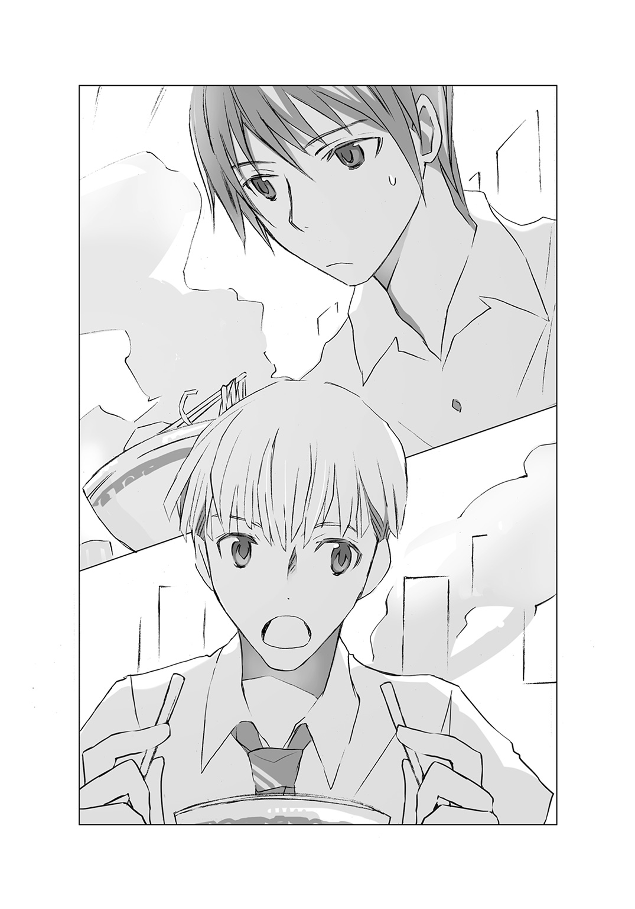
「それ以上言ったら、蹴り入れて店から追い出すぞ」
「大丈夫だって。お店の人には聞こえないように、声を潜めてるから」
「問題はそれだけじゃないっての。猫のなんちゃらとか言われたら、俺がここのラーメン食えなくなるだろ」
「うっわ、花火くんデリケートだねー。だから由依ちゃんのことでも、グルグル悩んで身動きとれなくなるのかなー」
俺は豪快にラーメンを啜って、その音を返事代わりにした。
「まあでもさ、俺はしばらく大人しくしてたほうがいいと思うよ。ガンガン行くだけだと、大概の女の子は引いちゃうよ。恋愛は押したり引いたりのバランスが大事だって言うしね。とくに支倉さんみたいに気の強い女の子は、メンタル揺さぶられるのに弱いんじゃないかなー」
「おまえ、やけに恋愛のこと詳しいな......」
「そりゃあイラストの仕事するうえで、大量のラブコメラノベを読んでるからねー」
「ラノベってやっぱ参考になんのか？」
「まさかー。ラノベは昔でいうおとぎ話だよ。転校してきた美少女にいきなり告白されたり、かわいくて気だてのいい幼なじみに昔から好きだったとか言われたり、そんな夢物語はラノベの中でしかありえな――」
途中でいったん口を噤んだ諏訪が、まじまじと俺を見てきた。
「......実は花火くんって、ラノベの主人公だったりする？」
「は？」
「この世界も本当は、本の中にしか存在してないとか」
「三流ＳＦみたいな発想だな。......でも案外、そっちのがいいかも」
「なんで？」
「だって俺がラノベの主人公なら、ハッピーエンド確定だろ？」
諏訪はわざとらしい仕草で、肩を竦めてみせた。
「悲恋がテーマの物語かもしんないよ」
嫌な奴だ。
ただ諏訪と話したことで、なんとか結論が見つかった。
やっぱり諏訪の言うとおり、もうしばらくこのまま待ってみよう。
【４】
それからさらに二週間近くが経過した。
俺はとにかくがむしゃらに、受験勉強をし続けた。
由依について考えると、どうしても気持ちが焦ってしまうため、別のことで頭をいっぱいにしている必要があったからだ。
それで二週間は、なんとか持ちこたえられた。
でもこれ以上はきつすぎる。
日記帳を渡してから、なんだかんだで三週間も経っている。
その間に六月は終わり、海開きがあって、外では蟬がジリジリミンミンかしましく鳴き始めた。
さすがにもう限界だ。
数学の公式や英単語で頭をいっぱいにしていようが、心まで誤魔化せるわけじゃない。
本気で頭がおかしくなるかもしれない。
そう思い始めた日の昼休みに、ようやく由依が姿を現した。
由依は俺が食べ始めようとしていた弁当箱の蓋を勝手に閉じると、顎をしゃくってみせた。
「お弁当持って、ついて来て」
「お、おう......」
もうちょっと女の子らしい呼び出し方でも良かったんじゃないか。
そう思いつつも、もちろん突っ込まなかった。
機嫌を損ねて、チャンスを台無しにすることだけは、なんとしても避けたいからだ。
由依は俺を引き連れて中庭に向かうと、空いているベンチに腰を下ろした。
「何してるのよ？ あなたも座りなさいよね」
「お、おう......」
緊張したままベンチの端に腰を下ろす。
中庭は風の通りがよく、さらに傍らに植えられた桜のおかげで、ベンチは木陰になっている。
たださすがにこの時季、外で昼飯を食べようと思う者は少ないらしく、人気は疎らだった。
人に聞かれたくない話をするなら、打ってつけの場所と言える。
「さてと......」
俺の横で弁当を開いた由依は、黙々と箸を動かし始めた。
「あなたも食べたら？」
「ああ......」
返事をしたものの、この状況では喉を通りそうもない。
「やっぱり後で食べるよ」
「そう」
由依は興味なさそうに返事をして、卵焼きを口に運んだ。
「ところで日記、全部読んだわ」
「お、おう......」
「さっきからその返事ばっかりね。まあいいけど。――それで、あなたはどうしたいの？」
「えっ......。俺......!?」
こちらの気持ちを尋ねられるなんて、予想もしてなかったので驚いた。
「『あなたとの記憶を忘れてしまった』と私が認めたら、あなたは満足してくれるの？」
「それは......。......こっちの望みを押しつけることはできないけど、本音を言えば思い出してほしい」
「まあ、そうでしょうね。満足だって言ってくれたら、嫌なことを伝えなくて良かったのに」
「......嫌なことってなんだ？」
質問に対する返答は戻ってこなかった。
巨大な唐揚げを頰張った由依は、小動物のような仕草で咀嚼を続けている。
じれったいが、待つしかない。
そんなことを考えつつ様子を窺っていると、唐揚げを食べ終わった由依は、まだ中身が残っているのに、弁当箱の蓋を閉じた。
「......そんなにじっと見られてたら、食べづらいわよっ！」
「あ、そうだよな、ごめん。別のほう向いてるから、気にせず食べてくれ」
「もういいわよ、ふんっ」
プリプリしながら弁当箱を片づけ終えた由依が、ベンチから立ち上がる。
まさか会話を切り上げるつもりだろうか。
俺はちょっと慌てたが、それは早とちりだった。
桜の木に寄りかかった由依は、ベンチに座ったままの俺に視線を向け、ぽつりぽつりと話し始めた。
「日記に書いてあること......、ちゃんと私の記憶と一致してたわ......。たとえば......、去年、夏祭り実行委員会のメンバーとして活動したことも、七夕祭りに行ったことも、江ノ島にお参りしたことも。私の記憶にあるとおりだわ。ただし、あなたの存在に言及している部分以外の話よ」
「......つまり俺の存在だけ覚えていないから、日記と記憶が完全には一致しないってことか？」
「私が覚えてないんじゃない。あなたがその場にいなかったってことでしょ」
「ちょっと待ってくれ。おまえの日記には、ちゃんと俺のことだって書いてあっただろ？」
「そうね、書いてあったわ」
「......日記が偽物だって思ってるのか？」
「いいえ。あの日記の筆跡は、確かに私のものだった」
「だったら......！」
あまりに話が嚙み合わなくて、焦燥感を覚える。
どうしてちっとも、わかり合えないんだ。
「前にも言ったでしょ。私は自分の記憶が欠けていることを認めない。目の前にどんな証拠を突きつけられても。だってこの記憶だけが、私の存在証明なのよ......！ それが定かでなくなったら......。......私はそんな現実、絶対に認めない!!」
興奮した由依が、肩で息をしながら俺を睨む。
怒っているというより、怯えているような顔を見て、ひどく衝撃を受けた。
こんなに由依を追いつめたりして、何をやってるんだ俺は......。
「......ごめん」
「な、なによ......。急に謝ったりして」
「俺、おまえの気持ちを全然考えてなかったって思って......」
由依は気まずげな表情で、黙り込んでしまった。
俺は深く息を吐いて、少し話の流れを変えてみようと試みた。
「......あのさ、ずっと気になってたんだけど、どうして同じ姿のまま戻ってこれたんだ？ 本来だったら、別の体に変わっているはずだよな？」
「そうね。毎年、私の体は三カ月しか持たないから。――ただ去年は違ったのよ」
「違ったって？」
「去年の私は龍口寺の境内で、遷延性意識障害つまり重度の昏睡状態に陥った。いつもならそのまま、死んじゃうんだけど、でもなぜか去年は死ななかった。私は意識不明のまま、秋と冬と春を眠ったまま過ごしたの。そして六月のある日、私は目を覚ましたわ」
「......つまりおまえは、去年とまったく同じ由依だってことだよな？」
「そう言ってるでしょ」
そっか......。
今、目の前にいるのは、俺の好きになったままの由依なんだ......。
改めてしっかりと実感したら、強烈な感情が氾濫するように押し寄せてきた。
「ちょっと聞いておいてだんまり？ 何とか言ったら――......」
文句を言っていた由依は俺の顔を見た直後、ハッと息を呑んだ。
「ねえ......、どうして泣くの？」
「......え？」
指摘されて初めて、俺は自分が涙を流していることに気づいた。
「げっ......。うわっ、俺、だっせ......」
慌てて手の甲で涙を拭う。
「今のは忘れてくれ......」
「いやよ。ばっちり見ちゃったもの」
「わかってるけど、そこは気を遣ってくれっての」
「いやよ。そんなことより、どうして泣いたのか教えて」
死ぬほど恥ずかしいから、もう泣いたことには触れないでほしい。
「教えてくれるまで、この話題を終わらせないわよ」
くそ......。
女子ってのは自分が気になったら、とことん追求してくる生き物なのか？
俺は仕方なく諦めて、口を開いた。
「......だっておまえ、去年と同じ由依なんだろ？」
「そうね」
「......そんなのうれしいに決まってる」
「泣くほどうれしかったってこと？」
「うっ......。......まあ、そうだな......」
由依は突然むっつり黙り込むと、乱暴な手つきで弁当箱を摑んだ。
「もうあなたと話すことはないから、教室に戻るわ！」
「え!?」
なぜいきなり機嫌が悪くなったのかわからない。
俺の気持ちが重すぎて不快だとか、そういうことだろうか。
「さよなら！」
「......っ」
引き止めたいのに、言葉が出てこない。
でも諦めてしまって、本当にいいのか？
これで終わりで。
......無理だ。
これで終わりなんて、受け入れたくない。
すぐに思い出してくれなくてもいい。
でも傍にはいたい。
去年のように。
また明日と言える距離に戻りたい。
何か、何でもいいから、繫ぎ止めるための言葉を伝えるんだ。
慌てた俺は、立ち去ろうとする由依の腕をとっさに摑み、勢いのまま叫んだ。
「俺と友達になってくれッ......!!」
「......えっ？」
由依は目をまん丸くして振り返った。
「友達......!? 私とあなたがっ......!?」
素っ頓狂な声に、由依の動揺が現れている。
「そ、そんなこと......急に言われても困るっ......」
「思い出してくれとかそういうことは、もうしばらく言わないから。とりあえずは、友達になってくれないか！」
摑んだ手を無意識にぎゅっと握りしめる。
「ちょっと、手......！ は、放してよ......っ」
「え？ あ！ ご、ごめん......」
ところが......。
俺が手を放した途端、由依は脱兎のごとく、逃げ去ってしまった。
――たとえばこのとき、なんとしてでも由依を引き留めていたら？
たとえばもっと早く、ただ君が好きだと伝えていたら？
振り返るたび、不安になる。
俺が選んできた道は、彼女を幸せへと導くことができたのだろうか――......。
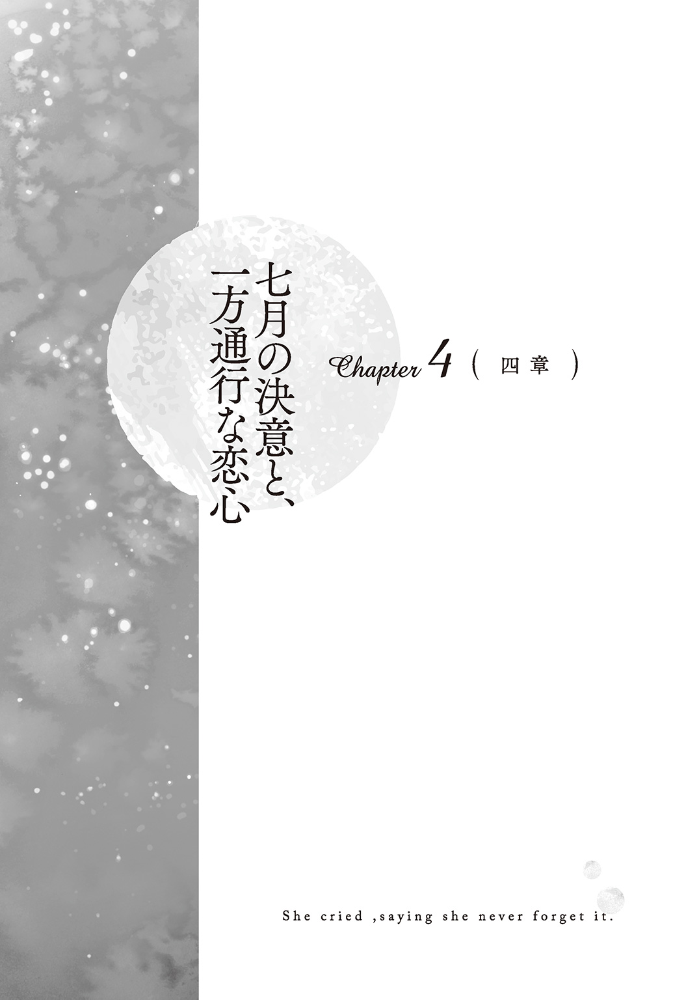
【１】
その日の夜。
塾で会ったみんなに昼間のことを話すと、信じられないという視線が、三方から一斉に向けられた。
ちなみに今日も俺たちは、塾の教室の隅で、授業が始まるまでの数十分を利用し、だらだらと喋っているところだ。
「友達って......。思い切った提案したねー、花火くん。それってつまり、付き合ってたことをなしにしちゃうって意味でしょー？」
「おい諏訪、もうちょっと声抑えろって......！」
休憩中の教室内はかなり騒々しいが、それでも慎重なぐらいのほうがいい。
だって恋愛の話をしているなんて、他の奴には絶対に聞かれたくない。
リアルが充実していると誤解されるのは、真っ平だ。
そういう人間に対して、日本人の目はだいぶ厳しい。
「ねえ陵介くん。どうして友達になろうなんて由依ちゃんに言ったの？」
「由依が俺のことを覚えていない以上、元の関係には戻りようがないだろ。だったら他人より、せめて友達になりたいって思ったんだよ......」
「自ら進んで『ふりだしに戻る』を選ぶなんて、真宮くんて実はＭだったんですね。ふふっ」
指先を口元に当てたいつものポーズで、麻利亜がクスリと笑う。
「でもまだ友達になる許可も下りてないんでしょー？ それってふりだしにすら立ってなくない？」
「たしかにそうですね。ふふふっ」
諏訪と麻利亜は目を合わせると、悪質な微笑を浮かべ始めた。
「おい待て......。なんかおまえら、楽しんでないか......？」
「楽しんでるわけじゃないけど、花火くんが恋のために苦労するところは見ておきたいかなー」
「支倉さんのことは、何の努力もせず手に入れた感じでしたからね」
まさか身内からもやっかまれていたとは......。
「おい、おまえら。妬み嫉みは見苦しい感情だぞ」
「実を言うと、あたしも諏訪くんや麻利亜ちゃんと同意見かな」
「げっ、澪までかよ......」
諏訪と麻利亜が悪ノリしても、澪はなんだかんだ庇ってくれることが多いので、結構な衝撃を受けた。
「ひがんでるとかじゃないよ？ ただ陵介くんが恋のために頑張るところ、見てみたいなぁって。努力してる姿を見ると、応援したいって気持ちもどんどんわいてくるし！」
「そういうもんか......？ ――ただどっちにしろ、俺が動かなきゃ状況が変わらないだろうから、努力するしかないよな」
自分から進んで努力しようと思えるなんて、去年までの俺からは考えられない。
負け犬人生を脱却できたのも、由依のおかげだったことを思い出し、胸の奥が切なく軋んだ。
なんで今、由依は俺の隣にいないんだと、空しくもなった。
「てことは、今度は花火くんが頑張って、支倉さんを振り向かせる番だねー」
「微塵も自信ないけどな......」
「大丈夫！ 由依ちゃんは陵介くんのことが好きだったんだもん」
「ええ、きっとまた恋に落ちるでしょう。ふふっ」
「おまえら......」
もしかしたら諏訪たちは、俺のやる気を煽るため、妬んだふりをしたのかもしれない。
むかつくこともしょっちゅうだったけれど、やっぱりなんだかんだ、みんなが相談に乗ってくれているおかげで助かっている部分は多い。
今回もまた、みんなのおかげで、俺は頑張っていこうと決意を固めることができた。
【２】
ところが――......。
友達になってくれと頼んだ日以降、由依は露骨に俺を避け始めた。
校内で出くわせば一目散に逃げ出し、声をかけようとすれば、どういうわけか真っ赤な顔で雄叫びをあげられた。
会話すらままならないため、はっきり言って友達になるどころではなかった。
まったく前途多難だ。
そんなことを思って、溜息をつきながら下校の支度をしていると、見かねたように澪が声をかけてきた。
「重い溜息だね。......由依ちゃんとのこと、あんまりうまくいってないの？」
俺は肩を竦めて、状況を説明した。
「友達になるのすらお断りって態度だよ」
「うーん......。でもなんだかおかしくないかな？ 由依ちゃんの性格だと、嫌ならはっきり断ると思うんだよね......」
「まあ、確かにな......」
「......ねえもしかして由依ちゃん、『友達になる』って言葉を、違ったニュアンスで受け取ったんじゃないかな？ つまり『お友達から交際をはじめませんか』的な」
「おいおい、いくらなんでもそんな勘違いしないだろ......」
「そうかな？ これなら由依ちゃんが赤い顔をして逃げちゃう理由の説明はつくよ」
確かに澪の言うとおり、辻褄は合う。
「由依ならしそうな勘違いかもしれないな......」
俺は全身から力が抜けていくのを感じた。
「気持ちを伝えて、考えをわかってほしいだけなのに。どうしてそれすら簡単にいかないんだ......」
「だって伝えたい想いがあるのは、恋をしている側だけだもの」
「なるほどな......。片思いって、すごい大変なんだな......」
「陵介くんにもようやくわかったかー！」
わざとおどけた顔をした澪が、励ますように俺の肩を軽く叩いてきた。
「ねえ陵介くん、今日の夜、いいもの持って行ってあげるよ！」
「いいもの？」
「うん、きっと参考になるよ。楽しみにしてて！」
何のことだかまったく見当がつかなったけれど、とりあえず頷き返す。
【３】
その夜。
夕飯を食べ終わって一息ついた頃、約束通り澪がうちの家にやってきた。
玄関口で差し出された紙袋を受け取り中身を確認すると、出てきたのはなんと大量の少女マンガだった。
「まさかこれで恋愛について学べってことか......？」
「煮詰まったときは、普段と違う視点に切り替えたほうがいいでしょ？ だから敢えての少女マンガってこと！ 何かの参考になるかもしれないし、読んでみてね！」
そう言って、澪はにっこりと笑った。
澪と別れ、部屋に戻った俺は、半信半疑のまま、借りたマンガに手を伸ばした。
「参考になるとは思えないけどな......」
ただ正直なところ、藁にも縋りたい気持ちだった。
それからベッドに腰を下ろして、黙々と読み続けること二時間――。
「いやいや、ないだろ！ 壁ドンで引き止めるとかありえないだろ!?」
開いたページを見下ろし、すっかり夢中になって、登場人物の行動にツッコミを入れ続けていた俺は、はたと我に返った。
しまった。
「何普通に楽しんでるんだよ......」
自分自身にツッコミを入れて、パラパラとページを戻す。
でも、さっきまでとは違って俯瞰的な視点で眺め直そうが、参考になりそうなものは、やっぱり見つからなかった。
そもそも少女マンガの中の男たちは、不思議なぐらい迷いがない。
何より女子を恐れてなどいなかった。
だから相手が逃げようとしても、自信満々な態度で引き止めたりできるのだ。
俺とは大違いだ。
そんなことできるか。
俺は拒絶されたり、嫌われたりすることが怖い。
だから逃げ出した由依の後を追うなんて、もってのほかだった。
「次だ次！」
紙袋から別のマンガを取り出し、再びページをめくっていく。
今度の男キャラは、さっきの壁ドン野郎とは違い、喧嘩してしまった彼女に対し、誠意のあるメールを送って、誤解を解こうとしていた。
俺は由依の連絡先を知らないから、真似できないが、確かにいい方法だ。
文字でなら、口頭より正確に気持ちを伝えられる気がする。
「古典文学の世界でも、恋愛のやりとりはもっぱら文がメインだしな」
ラブレターを最初に考案した人間はすごい。
そう思った次の瞬間、ひらめいた。
手紙なら、メールアドレスを知らなくても手渡しという方法をとれる。
「......いや、でもない。ラブレターはない。時代的にもないし、俺のキャラ的にはもっとない」
ぶつぶつ独り言を呟き、さんざん迷ってから、俺は最終的に机へ向かった。
便箋なんてもちろん持っていないから、広げたのは一枚のルーズリーフだ。
【４】
翌朝。
俺はふらふらした足取りで、学校へ向かった。
肩にかけている鞄を、昨日までとは比べものにならないくらい重く感じるせいだ。
鞄の中には、明け方近くまでかかって書いた由依への手紙が入っている。
もちろんこれは、プレッシャーが感じさせる重さの話だ。
ただ一晩中奮闘した甲斐あって、言いたいことは一応、書ききれたと思う。
あとはどうやって渡すかが問題だ。
会いに行ったところで、いつものように逃げられるのはわかりきっている。
古典的な方法でいくと、下駄箱に忍ばせるなんて手もあるが、うちの学校の靴入れは蓋がついていないので、リスクが大きすぎる。
うっかり風で飛ばされて、他人に読まれでもしたら......。
恐ろしすぎるので、この方法は却下だ。
あとは、教室に不意打ちで突入し、手紙を押しつけるとか......。
しかし、それだと悪目立ちしてしまうだろうし、由依に迷惑がかかる。
第一、俺だってそんな注目を浴びるような方法は、耐えられない。
ならばいっそ澪に頼んで、渡してもらうべきか。
いや、だめだ。
人を介して手紙を渡すのは、どうかと思うし、さすがに澪に甘えすぎだ。
俺は、その後も授業時間を使ってあれこれ考えてみた。
けれど妙案はちっとも浮かばないままだった。
こうなったら仕方ない。
馬鹿の一つ覚えになってしまうが、結局、前回同様、駅で待ち伏せするという手段を取ることに決めた。
ただ高校前駅だと下校途中の生徒でごった返すから、また聞き耳を立てられたりする可能性がある。
前回の反省点をいかして、今回は長谷駅で待つことにした。
「なんか俺の行動、どんどんストーカーっぽくなっていってるよな......」
長谷駅を出たところにあるガードレールに座って、独り言を呟く。
駅から出てくる人の中には、所在無げに座っている俺を見て、胡散臭そうな視線を投げつけてくる者もいた。
待ち伏せなんてしないで、やっぱり澪に頼み込んで、代わりに渡してもらうべきだっただろうか。
迷いはじめた途端、ものすごく不安になってきた。
やっぱり何度も待ち伏せするなんて、気持ち悪すぎるだろ。
だめだ。
無理だ。
今日はいったん帰ろう。
完全に怖じ気づいて、引き返そうとしたそのとき――......。
「あれ？ 真宮くんじゃないか！ おーい、こっちこっち！」
「げっ......」
空々しい笑顔を張り付け、道の向こうから手を振ってきたのは、由依の父親だった。
由依の父親は通りすがりの挨拶だけで済ませるつもりはないらしく、通りを渡ってこちらへ歩み寄ってきた。
「やあ、ちょうどよかった。君とは一度会って、話をしたいと思っていたんだ。どうかな。時間があれば喫茶店にでも入らないかい？」
「はぁ......」
この男はいけすかない。
けれど由依の記憶に関して、情報を得られるかもしれない。
そんな下心を抱いた俺は、由依の父親の誘いに乗ることにした。
俺たちが入ったのは、長谷寺前の交差点を西に曲がった先にある古風な店だ。
通りに面した窓から、ひっきりなしに観光客が行き交う様を眺められた。
そういえば店内の客層も、半分は観光客のようだ。
「長谷は観光客でいつも賑わってるよね。紫陽花のシーズンは特にすごかったよ。それにもうすぐ夏休みだしなぁ」
ちょうど絶妙なタイミングで、店員がオーダーを取りに来たので助かった。
この男と世間話を交わすつもりなど、微塵もなかったからだ。
「ご注文はお決まりでしょうか？」
「えーっとね、僕はレモンスカッシュ。君は？」
「俺はアイスコーヒーで」
飲み物はすぐに運ばれてきた。
俺は平静を装って、アイスコーヒーを一口飲んだ後、由依の父親に尋ねた。
「あの聞きたいんですけど、どうして由依は記憶を失うようなことになったんですか？ 『夏の妖精』のことと何か関係があるんですか？」
「誘ったのは僕なのに、君から先に質問をするのかい？ まあいいけどね」
由依の父親は、グラスにさしたストローを回しながら、感情のこもっていない笑い声を立てた。
「残念ながら、ユイが君の記憶を失った理由に関しては、まだ何もわかっていないんだ。ただ去年、あの子が死の淵から蘇った事実と、記憶を失ったことには、恐らく因果関係があるだろうと僕は推測している。興味深いのはどちらがどちらを引き起こしたかという問題だ。生死をさまよったことで、記憶を一部失ったのか。記憶を失ったことが何らかの作用を及ぼし、一命をとりとめるに至ったのか。君はどっちだと思う？」
「どう考えても前者じゃないですか？ 記憶をなくしたからって、病気が治るわけないし」
由依の父親はにっこりと微笑んで頷いた。
「そうだね。『大事な記憶を代償として差し出す代わりに、命を長らえさせられる』なんて、医学や化学の領域をはみだしている。信仰や超常現象の類だ」
由依の父親は意味深な笑みを浮かべ続けていて、本心で何を考えているのか、いっこうに読めない。
相変わらず食えない男だ。
「ところで真宮くん、君はどんな気持ちだった？ 自分がユイに忘れられているんだと知ったとき」
とっさに感情を抑えることができず、俺は由依の父親を睨みつけてしまった。
「......その質問には、答えたくないです」
「それはずるいなぁ。僕は一つ、君の問いに答えた。だから次は僕が尋ねる番だろう？ 君が僕に借りを作っても答えたくないなら話は別だけど」
はらわたが煮えくり返る思いがする。
俺は癇癪を起こして、暴れたりしないよう、ひたすらアイスコーヒーの水面に意識を集中させ、なんとか怒りを抑え込んだ。
「君の感想や意見を聞いておきたかったんだけどな。ユイを使った実験をしていくうえで、参考になりそうだしね」
この人は、俺が怒るような言葉を並べ立てて、こっちの反応を見て楽しんでいるんだ。
わかっているのに、もう我慢の限界だった。
「おっさん、ほんといい加減にしろよ。あいつを実験動物扱いするなんて、俺が絶対に許さない」
「ははは。かっこいいことを言うね、真宮くん。『俺が守る！』って感じかい？ ヒロイズムだね。僕もそういうの嫌いじゃないよ。だがしかし、どうやって守るのかな。今の君はあの子にとって、赤の他人だ。守れるほどの距離に存在できていると言えるのかい？」
悔しいけれど、俺は反論の言葉を持ち合わせていなかった。
彼の指摘があまりにも的確だったから。
そう俺は、由依にとって赤の他人。
彼女のテリトリーの中に入ることを、許されてはいない。
家に帰った俺は、すぐさま鞄の中から手紙を取り出し、ぐしゃりと丸めてゴミ箱へ投げ捨てた。
読み返さなくても、自分が何を書いたかは覚えている。
まったくこんな身勝手な内容の手紙を渡さなくて、本当に良かった。
昨日、俺の心を占めていたのは、由依の傍にいたいという想いだった。
そんな気持ちでしたためた手紙なんて話にならない。
俺の望みや願いなんてのは、どうでもいいんだ。
そう気づかせたのが、あのいけ好かない由依の父親だということが不愉快だったけれど、一度深呼吸して、気持ちを落ち着かせる。
そうして机の前に座った俺は、昨日とはまったく違う心持ちで、真っ白いルーズリーフに向かった。
【５】
翌日は夏休み前、最後の登校日だった。
今日のこの機会を逃せば、一カ月間、下手すると来年の夏まで、由依に会えなくなってしまう。
なんとしても、この手紙を由依に渡さなくてはならない。
改めて決意を固めた俺は、終業式の行われる体育館に移動する前に、鞄から手紙を取り出し、制服のポケットに忍ばせた。
今までのような行き当たりばったりじゃなく、今日の俺にはしっかりとした計画があった。
大丈夫、きっと上手くいく。
俺が怖じ気づいたりしない限りは......。
それから三十分――。
終業式は例年通り執り行われ、校歌斉唱で幕を閉じた。
わずらわしい時間から解放された生徒の波が、どばっと出入り口に押し寄せる。
順に少しずつ体育館の外に出られている様子だが、スムーズな流れとは言いにくい。
予想していたとおり、これならしばらく時間を稼げそうだ。
俺はポケットにしまっていた手紙を取り出すと、由依の姿を捜した。
視線をさまよわせること数秒。
二年生たちの集団の真ん中で、うんざりした顔をしている由依を見つけた。
よし。
始めるぞ。
指先でギュッと手紙を握りしめてから、人波をかき分け、俺は少しずつ由依の傍へ近づいていった。
迷惑そうな顔を向けられ、そのたびに謝罪の言葉を伝えて、なんとか前進する。
そしてようやく、由依の真後ろまで辿り着いた。
「由依！」
「ひゃっ、な、何!?」
突然大きな声で名前を呼ばれた由依は、驚きの声を上げて振り返った。
俺を見た瞬間、またいつものようにポッと由依の顔が赤くなる。
この隙に畳みかけなければ。
俺は深く息を吸い込んだ。
「由依！ 俺はおまえに手紙を書いてきた！ ここには俺の気持ちが書いてある！ これをおまえに受け取ってほしいんだッ!!」
「手紙って......」
「受け取ってくれないなら、この場で読ませてもらう！」
「は!? え、ちょっと、どういうこと......!?」
由依の問いかけには敢えて答えず、俺は手紙を広げた。
「なになに？」「公開告白だって！」なんていう外野の声が、四方から聞こえてくる。
大勢の生徒の前で、こんなことを始めれば、注目を浴びてしまうに決まっている。
野次馬たちは好奇心をむき出しにして、俺と由依を取り囲んだ。
そのため由依は、いつものように逃げ出すことができずにいた。
ここまで完全に俺の計画通りの流れだった。
もちろん、俺だってめちゃくちゃ恥ずかしい。
けれど、ここで怯むわけにはいかない。
傍で由依を守るためなら、なんだってしてやると決めたのだから。
「『支倉由依。手紙なんてガラじゃないけれど、どうしても気持ちを伝えたかったので、がんばって書いてみることにした。俺は――......』
「ま、待って！ やめてっ！ 読み上げるなんて何考えてるのよっ!?」
耳まで真っ赤にさせた由依が、両手を振り回して、止めようとする。
「受け取ってくれるなら、音読しなくてすむんだが」
「......わ、わかったわよっ......！」
由依は、ひったくるようにして手紙を奪い取ると、赤い顔を隠すように俯いてしまった。
【６】
終業式の後、二日間、腹を壊して寝込んだ。
俺は『精神的に結構、追いつめられていたんだな』と自分を哀れがったが、母親は『アイスを食べまくって、冷えた麦茶をガブガブ飲んでたら、おなか壊すに決まってるでしょ』と呆れた顔で一笑した。
アイスの本数を一日一本だけにして、麦茶に氷を入れすぎないよう気をつけたら、あっさり治ったので何も言い返せなかった。
無事復活を遂げた日、塾の夏期講習に行くと、諏訪がニヤニヤしながら近づいてきて「今日の夜、いいことあるみたいよ」と言った。
ラーメンの半額券でも持っているのだろうか。
そのまま淡々と授業を受け続け、夜になった。
「それじゃあ行こうか！」
荷物をまとめ終えたところで、澪に声をかけられた。
「行くって？ どこにだよ」
「諏訪くんが言ってたでしょ？ 夜にいいことがあるよーって」
「ああ、あれなんの話なんだ？」
「それは着いてからのお楽しみだよ～！」
澪は諏訪や麻利亜と目配せを交わし、意味深な笑みを浮かべた。
まったくわけがわからないままみんなの後を追うと、大船駅のロータリー上の広場へ連れて行かれた。
今振り返れば、俺も鈍感すぎた。
三人の態度から、少しぐらい予想できただろうに。
広場の柵に手をついて、夜空を見上げている後ろ姿。
そこにいたのは由依だった。
――今でも時折思う。
あのとき、由依はどんな顔をしていたんだろう。
どんな気持ちで俺を待っていた？
彼女の気持ちをもっと俺が理解していたなら、きっと不安や恐怖や苦しみを、拭い去ってあげることだってできたのに――......。
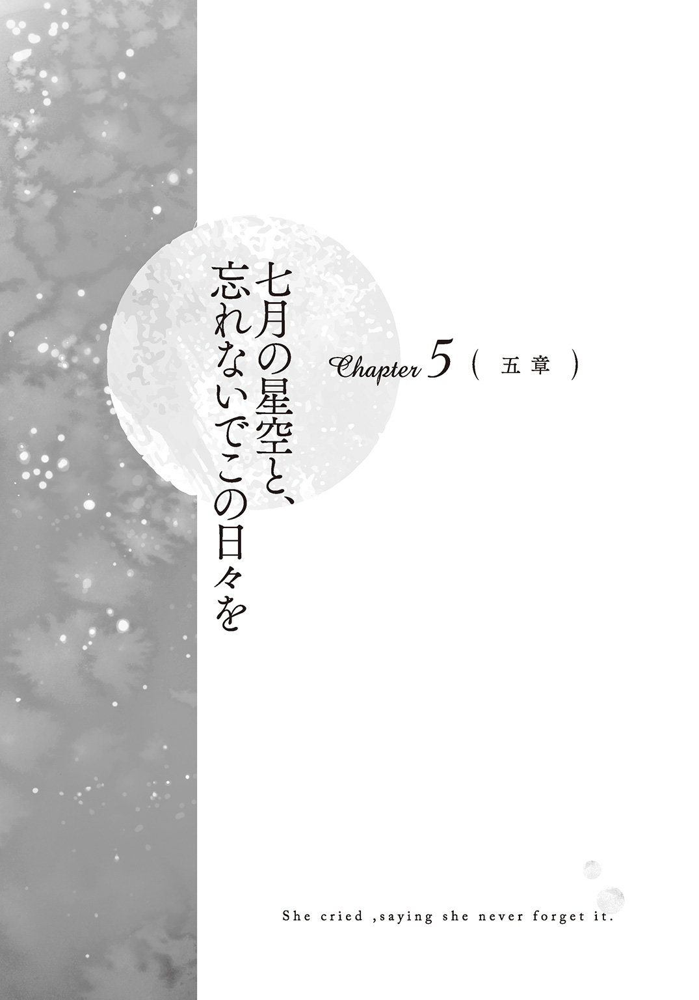
【１】
「駅のスタバで時間を潰しているから、話が終わったら来てね」と言い残し、澪たちは去っていった。
もちろん、いきなり二人にするなと必死に視線で訴えかけたが、無駄だった。
お膳立てしたのだから、自分でなんとかしろということだろう。
まあ、当然だ。
由依は相変わらず黙りこくったまま、背中を向けている。
お互いの沈黙が長くなるほど、気まずさは増すばかりだ。
何でもいいから、話しかけなければ......。
「ええっと......。あれだな。昼間はクソ暑いけど、夜になるとまだマシっていうか、いやでも暑いは暑いんだけどさ。ええっと......」
俺が言葉を詰まらせた途端、再び嫌な沈黙が戻ってきた。
由依はこちらを振り向かない。
もしかしなくても、怒っているって態度だよな、これ......。
理由は無理矢理に手紙を押しつけたことか、それとも手紙の中身に関してか。
書いた内容に後悔はない。
それでも謝ったほうがいいか迷っていると、由依が唐突に口を開いた。
俺に背を向けたままの状態で。
「......ねえ私、すっごく恥ずかしかったんだから......」
「それはえーっと......、終業式のことか？」
「友達になっての意味を、間違えて受け取ってたことがよ！ ......でも真剣な顔で手を握ったまま、あんなふうに言われたら、普通誤解するからっ！」
「そ、そうか......。ごめん」
「でも......。その......。あのねっ......。ええっと、つまり......。......て......あげても......わ」
「......？ ごめん、聞こえなかった。なんだって？」
焦れたような表情で振り向いた由依は、なぜか真っ赤な顔をしていた。
「だからっ......。友達になってあげてもいいって言ったのっ......！」
「えっ......。友達にって......？ 本気で......？」
頰を赤らめたまま、由依がこくりと頷く。
「......だって『ただの友達』でしょ？ そのぐらいなら頑なに断る理由はないわ」
俺はまじまじと由依を見返した。
さんざん逃げられていたせいか、突然そう言われても現実感がわいてこない。
「どうしてそんな顔してるの？ もしかして......迷惑なの......？」
「えっ!? いや、まさか！ 迷惑なわけないだろ！ ただなんだか信じられなくて......。その、本当に友達になってくれるのか？」
「そう言ってるじゃない。ていうか恥ずかしいんだから、何度も言わせないでよねっ......」
「ああ、うん......。ごめん......」
恥ずかしそうに眉間に皺を寄せる由依を見たら、ようやく実感がわいてきた。
そうか......。
俺は由依と友達になれたんだ......。
......やばい。
めちゃくちゃうれしい。
「......っしゃ！」
感情に任せて腰の辺りで小さくガッツポーズを取る。
由依はギョッとしたように目を丸くさせた後、堪えきれないというように吹き出した。
「ぷっ......あははっ！ ちょっと何よそれ！ ガッツポーズとか大げさすぎだわ。そんなに喜ぶところ？」
「ああ、俺にとってはな」
だって友達なら、由依を守れる距離にいられるのだ。
「変なのっ！」
言葉のわりに、由依の表情は穏やかだ。
まるで時間が、去年の夏に戻ったみたいな、そんな錯覚をおぼえる。
でも残念ながら、由依の浮かべた微笑みは、すぐにまた消えてしまった。
「ねえ......。手紙の後半に書いてあったでしょ。その......、私のことを守りたいって......。どうしてあんなこと書いたの......？」
「本気で守りたいって思ったんだけど、いきなりあんなこと言われても、キモいよな」
「別にそんなふうには思ってないわ......！」
勢いよく否定されて、驚いた。
「気持ち悪かったら、むしろ今日だって会いに来ないし！ 手紙を読んで心を動かされたから......。だから私はこうやって――......」
そこまで話したところで、由依はハッと息を呑んだ。
「な、なんでもないわっ......！ 今のは忘れてっ！」
「いや、だけど......」
「いいから忘れるのっ！ ほ、ほら！ みんな待ってるし、もう行くわよ！」
「おいスタバはそっちの方向じゃないぞ！」
何をそんなに動揺してるんだ、と首を傾げつつ、俺は由依の後ろ姿を追いかけた。
【２】
閉店間際にスタバを出て、家に帰った俺は、風呂に入って一日の汗を流した後、扇風機の前でガリガリ君を食べながら涼んでいた。
両親はちゃぶ台の上に旅行会社のパンフレットを広げて、盛り上がっている。
どうやら八月の後半に、夫婦水入らずの旅行に出かけるつもりらしい。
一人きりで、静かに過ごせるであろうその期間が、今から待ち遠しくて仕方ない。
そんなふうにして未来に思いを馳せていると、畳の上に投げ出してあったスマホからメッセージ受信音が聞こえてきた。
藤代澪『由依ちゃんと友達になれてほんとによかったね！ 明日から夏休みだし、由依ちゃんとどんどん仲良くなれるように、がんばろうね！』
「そんなこと言われてもなー......」
独り言を呟き、畳に寝転がる。
明日から三日間は、くだらない予定ですでに埋まってしまっていた。
まったく出鼻をくじかれたような思いだ。
食べ終わったアイスの棒をくわえて、返信の文面を考えていると、不意に母親がパンフレットから顔を上げた。
「そういえば陵介、あんたちゃんと合宿の荷物まとめたの？」
「当たり前だろ。出発は明日だぞ」
そう明日から俺は、二泊三日で塾のスパルタ合宿に参加することになっている。
「パンツは？ ちゃんと入れた？ 替えのＴシャツだって多めに入れとかないとだめよ。汗をかくだろうし。お母さんあとで確認しておこうか？」
「子供じゃないんだから、余計なことすんなっての」
余計なことと言えば、合宿への参加申し込みを勝手に行った点もそうだ。
去年の夏祭り実行委員会と同様、うちの親は今回もやらかしてくれた。
ほんと、いい加減にしてほしい。
「合宿なんかに参加するより、家で勉強してたほうが絶対効率いいって」
「陵介、このバカたれが！ 効率なんかより青春の思い出作りのほうがずっと大事に決まってるだろう！ とくに泊まり込みの合宿なんて、青春イベントのチャンス目白押しじゃないか！」
父親は丸めたパンフレットを振り回して、息巻いている。
会話が面倒くさい方向に流れ始めたので、俺はさっさと自室へ退散した。
【３】
ところが翌朝。
集合場所に着いた俺は、麻利亜の隣に由依が立っているのを見つけて、心底驚いた。
「......は？ ......え!? なんでここに由依がいるんだ......？」
俺の戸惑った態度が気に食わなかったのか、由依は、
「なによっ。いたら悪いのっ？」
「いやいや、そうじゃないって......！ ただ予想外だったから驚いたんだよ」
「友達ならもっと、よろこぶところじゃないの？ つまんない反応！」
「ええっと、ごめん......」
「ふんっ」
由依はまだ、納得がいかないという表情のまま、むくれている。
「支倉さんのことは、事前に私が誘っておいたんです」
「麻利亜が......？」
「今年の夏も、みんな一緒に過ごせたら素敵ではと思って。せっかくこうして再会できたのですから」
「おまえ、そんなこと言うキャラだったっけ......？」
「ふふっ」
麻利亜は口角を軽くあげて、意味深な笑みをこぼした。
十五分後――。
俺たち合宿参加メンバーを乗せた貸し切りバスは、鎌倉を発った。
出発間際、座席の場所は自由だと聞いてきた諏訪が妙な気を回したため、俺と由依は並んで座ることになった。
二人席は狭く、気を抜くと腕と腕が触れ合ってしまう。
友達になれたとはいえ、いくらなんでも、いきなりこの距離感はハードルが高い。
盗み見ると、由依も気まずそうな顔をして、窓の外を眺めていた。
結局俺たちは、伊豆高原にある保養施設に到着するまで、一言も言葉を交わせなかった。
バスは二時間ほどかかって、とあるリゾートホテルに着いた。
荷物を各々の部屋に置いてすぐ、最悪なスパルタ講習が始まり、それは昼過ぎまで続いた。
由依とは学年が違うから、講習を受ける部屋も別々で、顔を合わせることはない。
そのせいで講習の時間を、やたらと苦痛に感じた。
いつでも顔を見られた車内では、できるだけ視界の中に由依が入らないよう、気をつけていたというのに。
まったく心という奴は、複雑にひねくれていて理解しがたい。
「おい、そこ！ 何をボーッとしている！ 受験生のおまえらには、一秒たりとも無駄にしている時間はないんだぞッ！」
怒鳴られたのは俺かと思いきや、隣の席の諏訪だった。
「さあッ、気合いを入れて復唱！ 『絶対合格ッ！ 絶対合格ッ！』」
「ゼッタイゴウカク、ゼッタイゴウカク」
ロボットのように抑揚のない声で、諏訪が繰り返す。
諏訪の目は、完全に死んでいた。
俺のほうもこのスパルタ講習を乗り切れるか、本気で不安になってきた。
合宿が終わる頃には、すっかりトラウマが植えつけられて、勉強するだけで吐き気を覚えるようになっているかもしれない。
由依とは別行動だし、やっぱりこんな合宿来るんじゃなかった......。
そう思ったものの、昼休憩になった途端、俺はあっさり持ち直した。
昼食はクラスや学年に関係なく、好きな席に座って、好きな相手と食べられることがわかったからだ。
「今日の昼食、ビュッフェスタイルらしいですね」
講習室を出て、昼食が用意されているらしい大ホールへ向かっていると、合宿の冊子を取り出した麻利亜がそんなことを言ってきた。
「へえ。昼間からビュッフェなんて、豪華だねー」
諏訪の死んだ目にも、ようやく光が取り戻された。
「結構いい金取るもんな、この合宿」
勝手に申し込んだくせして、合宿代はお年玉から返せなどと親が言っていたことを思い出す。
まったく冗談じゃない。
二階でエレベーターを降り、通路を左手に進んだ先に、大ホールはあった。
ちなみに右手に向かうと大浴場だ。
観音開きの扉をくぐってホールに入ると、中は合宿参加生や他の泊まり客でごった返していた。
「これでは空席を探すのにも難儀しそうですね」
麻利亜の言葉に返事をしようとしたとき......。
「みんな、こっちよ！」
声のしたほうを振り向くと、奥のテーブルに座った由依が手を振っていた。
どうやら五人分の席を取っておいてくれたようだ。
「ねえ、みんな！ ビーフ百パーセントのハンバーガーがあるのよ！ とーっても肉厚で、とーってもおいしそうなのっ！」
子供のようにはしゃぐ由依を見て、澪が優しい笑顔を浮かべた。
「由依ちゃん、お肉が好物なの？」
「私、お肉大好きっ！」
キラキラと目を輝かせ、両手で小さな拳を握りしめ、由依が力強く頷く。
その無邪気な振る舞いがあまりにかわいくって、心臓が一瞬、ギュッとなった。
いや、だめだ落ち着け俺。
ときめくな。
俺と由依は今、友達なのだから。
由依に対して誠実であるためにも、できる限り恋愛寄りの感情は抑えるべきだろう。
「料理を取りに行ってる間、席の番をしてる人が必要だから、ジャンケンして決めるわよ！」
別に俺が残ってもよかったが、由依がやたらはりきっているので、黙ってジャンケンに参加しておいた。
結果、チョキを出した諏訪と麻利亜が、後発組となった。
俺はあれこれ悩むのが面倒だったので、グリーンカレーを皿いっぱいどかっとよそって、席に戻った。
由依と澪は、サラダやフルーツと一緒に、ハンバーガーを持ってきた。
「澪もハンバーガーにしたのか」
「由依ちゃんの話を聞いたら、あたしも食べたくなっちゃって」
俺たちが席に着くのと入れ違いで、諏訪と麻利亜は、料理を取りに行った。
待ってなくていいと言われたので、先に三人で食事を始める。
「ひゃああっ......！ おいひいっっ......！ やっぱりビーフ百パーセントは格別ね!!」
両の頰をたっぷり膨らませた由依が、幸せそうな溜息をこぼす。
俺と澪は思わず顔を見合わせて、笑ってしまった。
「そういえば去年もこんなふうに、由依ちゃんとハンバーガーを食べたよね。まだ知り合ったばかりの頃に」
「覚えてるわ。初めて西園寺さんを訪ねた日でしょ？」
「そうそう！ 三人で時間潰しにファーストフードに入って」
「三人......？」
澪と楽しげに話していた由依が、戸惑った表情でぽつりと呟いた。
俺のことを覚えていない由依は、恐らく澪と二人で過ごしたと、認識していたのだろう。
「ふふっ。あのとき無理矢理、陵介くんに奢らせちゃったよね。懐かしいなぁ」
並んで座っているせいで、澪はまだ由依の変化に気づいていないようだ。
俺は仕方なく、無理矢理話に割って入った。
「あーえっと澪、その話はやめとかないか？」
「え？」
首を傾げた澪は、当惑している由依を見て、「あっ」と声をこぼした。
「そっか。そうだよね......。えっと、ごめんね......。何か別の話題を――......」
「待って」
由依はきっぱりとした口調で制止の言葉を放つと、食べている途中だったハンバーガーを皿の上に戻した。
「......あのとき......ほんとは......。......っ」
不自然に言葉を聞った由依が、苦しげな息を吐いた。
「由依？」
「由依ちゃん、どうしたの......？」
由依は辛そうに目を閉じ、こめかみの辺りを押さえた。
それは、あの公園で由依の具合が悪くなったときに見たのと、全く同じ仕草だった――......。
『九時前に他人の家を訪問するのは気が引けるよ』
真宮陵介がそう言い出したので、私たち三人は時間を潰すため、ファーストフード店に入ることにした。
私は冗談じゃないって態度をとって、時間の無駄だって言い張って、「訪ねる相手はご老人なんだし、絶対もう起きてるわよっ！」て喚いたけど、ほんとは別にそこまで反対してなかった。
だって真宮陵介ったら、相手の気持ちを当然のように優先して考えていて、そういうところ素敵だなって感動しちゃったし......。
ときめいちゃったし......。
だからそのドキドキがばれないように、必要以上に怒っているふりをしなくちゃいけなくなったんだけど。
「一時間......、いや一時間半は待ったほうがいいよな」
「んー、そうだね」
真宮陵介と澪のやりとりは自然で、ものすごくうらやましい。
いいな......。
私も本当はこんなふうに、素直な態度で、自然に真宮陵介と話したい。
「んー」の一言だけで返事をしてみたい。
けれど多分、いいえ絶対、天地がひっくり返ってもできそうにない。
真宮陵介の傍にいるだけで、恥ずかしくて、緊張して、わけがわからなくなっちゃうんだから......。
「時間あるなら、追加でハンバーガー買ってくるね。実は今日、朝ご飯食べ損なっちゃって」
「あ、澪。俺のもなんか適当に買ってきて」
「了解～。由依ちゃんは？」
陵介からお金を受け取った澪が、私のほうを見て、にっこりと笑った。
「あ、私は......」
突然、会話の矛先を向けられ、びっくりした。
とくにお腹は空いていない。
でもここで断ったら、『私、小食なのよ、かわいいでしょ』アピールをしたがる嫌な女って思われるかもしれない。
小食の可愛らしい女の子と、もしゃもしゃ豪快に食べる気取らない女の子。
ううっ、どうしよう......。
真宮陵介はいったいどっちが好きなのよ......!?
「わ、私も一緒に行くわっ......！」
しっかり考える時間が欲しかったので、とりあえずそう答えて、私は澪と一緒にレジに向かった。
けれど、カウンターの前に立ち、メニュー表を見た瞬間、私はますます混乱してしまった。
シェイク、ソフトクリーム、ホットアップルパイ、サイドメニューには女子力高そうに見える選手がそろっている。
視線を左側に移動させれば、ジューシーな肉汁溢れるハンバーガーの写真が......。
ああ、もうっ、すっごくおいしそう。
お腹空いてないのに、お腹空いてきた気がしてくるくらいおいしそう。
でもこのハンバーガー、トマトケチャップソースって書いてあるわ。
絶対口の周りベッタベタになっちゃう。
そんな姿、真宮陵介が見たらなんて思うかしら......。
うううっ......。
あれこれ考えてたら、クラクラしてきた......。
「由依ちゃん......!? 真っ青だけど大丈夫!?」
「どうしよう、澪......。何食べたらいいのか、正解が全然わからないわ......」
悩みすぎて、視界までグルグル回りそう。
グルグルグルグルグルグル――......。
「由依......!? おい、由依......!!」
「......っ」
短く一度、息を吸う気配がした直後、由依が堅く閉じていた瞳を開いた。
辛そうにしていたのは、ほんの数秒の間だったけれど、ものすごく心配だ。
「おい、大丈夫か......？ また頭が痛くなったのか？」
「ええ......。......もう平気......」
上の空な口調でそう答えると、由依はなぜか俺のことを、食い入るように見つめてきた。
「由依、あの......？」
近すぎる距離と、由依の強い眼差しに、ドギマギしながら問いかける。
「あっ......えっと、な、何でもないわ......」
由依は微かに頰を染め、慌てた様子で視線を背けた。
その後も昼休みが終わるまで、由依の態度は明らかにおかしかった。
ぼんやりとした表情で、会話にも全然入ってこない。
しかも午後の授業は休むと言って、部屋に引きこもったまま、夕食時にも姿を見せなかった。
様子を見に行ってこいと、みんなからせき立てられた俺は、夕食後、由依が使っている部屋を一人で訪れた。
眠っていたら悪いと思って、控えめにノックしてみると、室内からすぐに返事が戻ってきた。
おそるおそる扉を開け、中に入る。
入口から軽く覗いてみると、室内にはベッドが三つ並んでいた。
由依は、部屋の奥、窓際のベッドに横たわっており、俺の姿を見るとゆっくり体を起こした。
「その......、みんなを代表して、様子を見に来たんだけど......」
中へ踏み込んでいくことはせず、入口に立ち止まったまま声をかける。
「まだ具合悪いのか？」
「違うわ。単なる仮病よ」
「仮病って......」
「お昼に痛くなったのはほんとだけど、今はもう全然平気」
「それじゃあなんで、夕食に出てこなかったんだ？」
「一人で考えたかったから」
「考えたかった？ 何をだ？」
由依は躊躇うように黙り込んだ後、重々しい口調で話し始めた。
「お昼ご飯を食べていたとき、澪とあなたの話を聞いている最中に、突然すごく頭が痛くなって......。その直後......西園寺さんに会いに行った日の記憶が溢れるみたいに、浮かんできたの......。あのファーストフード店の光景よ。......あのとき、澪と私の二人きりじゃなかった。あなたもちゃんとそこにいたわ......」
一度深く息を吐いてから、由依はギュッと唇を嚙みしめた。
「直前までは澪と二人だったって、疑うことなく思ってたのに、その記憶が間違っていたなんて......」
「でも思い出せたならいいじゃないか。元の完璧な記憶を今ちゃんと持っているのなら、何にも問題ないって」
動揺している由依を励ましたくて、そう言葉をかけると、由依は部屋の入口に立っている俺のほうを見て、不安そうに眉を下げた。
「ねえ、教えて。あのお店を出た後、あなたは西園寺さんの家に行かなかった？」
「それは......」
とっさに返事ができなかった。
俺はもちろん二人と一緒に、西園寺さんの家を訪れた。
でもそんな質問をしてきたということは......。
由依が思い出したのは恐らく、ファーストフード店での出来事だけなのだ。
そう気づいて、俺は絶望的な気分になった。
思い出してもらえなかったことが辛いんじゃない。
記憶の欠落に気づいた由依が、どんな気持ちになるか。
それを想像すると、どうしようもなく気が滅入った。
「なんで答えないのよ」
「ああ、ごめん......えっと......」
俺はあの場にいなかった。
そう噓をついたほうがいいだろうか。
しかし迷っている間に、由依は俺の表情から、真実を読みとってしまった。
「私の記憶の中では、澪と二人で訪問したことになってるけど、本当はあなたもいたのね。......ねえ、これってどういうことなの......!? 私の記憶、どうなっちゃったの......!?」
「由依、ちょっと落ち着けって......」
「落ち着いてなんていられないわ......！ これじゃあもう、私が私であることを証明できない......」
「そんなことないって。そもそも誰だって、そんなにしっかり何でも覚えてるわけじゃないだろ？ 俺なんて、一昨日の晩飯すら、もう思い出せないし」
「私にとって記憶は、唯一の存在証明なのよ！ それに私の記憶から抜け落ちてるのは、晩ご飯の献立なんていうどうでもいいものじゃない......。大事にしていなきゃいけなかったはずの、思い出を忘れちゃったのよ......」
とにかく由依を落ち着かせなければ。
そう思った俺は、とっさに駆け寄り由依の手を握った。
由依が驚いたように、顔を上げる。
でも振りほどかれることはなかった。
「なあ由依、そんなに深刻に考えることないって！ 忘れたなら、思い出せばいいんだよ！」
「思い出す......？」
「ああ、さっきみたく。昔の思い出話をするとか、なんかきっと、きっかけがあれば記憶が蘇るはずだよ！ 俺が協力するから。な？」
「......ほんとに？ ......協力してくれるの......？」
「当たり前だろ！ ......それに俺だって、本当はおまえに思い出してほしかったんだから」
「真宮陵介......」
今年の夏、初めて由依が俺の名前を呼んでくれた。
胸の奥がトクンと震えた。
そのとき、廊下のほうから女の子たちの微かな話し声がして、数秒後、鍵を開けようとする音が室内に響いた。
俺と由依は思わず顔を見合わせた。
ホテルの部屋に男女二人きりでいたなんて知られたら、どう思われるかわからない。
「隠れて......！」
「だけど、どこに......!?」
「この中よっ！」
「この中って......、うわっ!?」
由依は勢いよく布団をまくると、俺の腕を摑んで無理矢理ベッドに引きずり込んだ。
体の上に布団をかぶせられるのと同時に、扉の開く音が聞こえてきた。
「あ、支倉さん！ 起きてたんだね！」
「具合どう？ 少しは良くなった？」
「ええ......。もう大丈夫......」
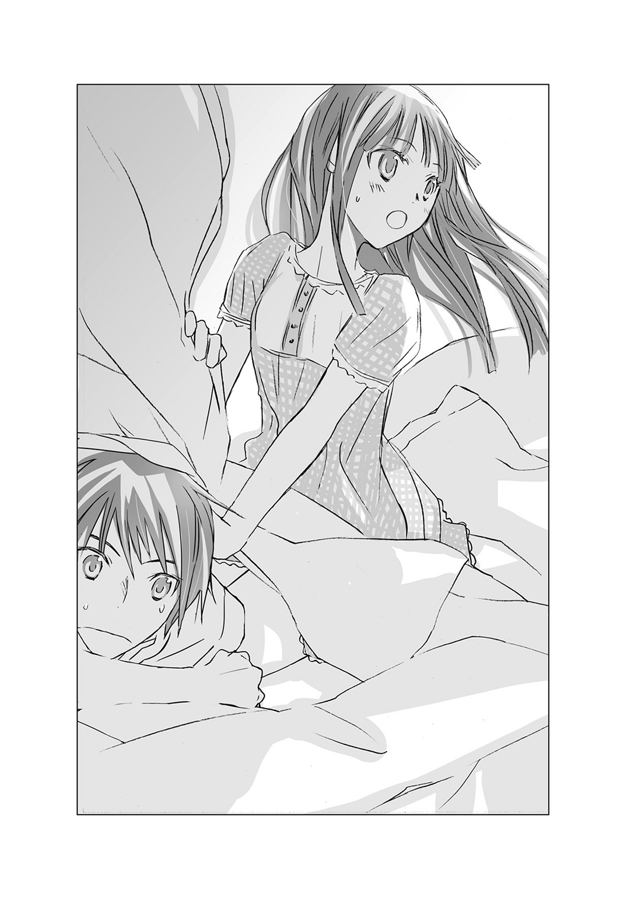
息苦しい布団の中で気配を押し殺している俺は、三人の会話を聞きながら、ごくりと生唾を飲み込んだ。
会話の内容はどうでもいい。
というか頭にちっとも入ってこない。
問題なのは、目前にある由依の生足だ。
布団の中の暗闇でも、足だとわかっているのは、一瞬、柔らかいふくらはぎが俺の頰に当たったからだった。
この状況を幸せだと手放しでよろこべるほど、俺はこういうことに馴れていない。
というか刺激が強すぎて、幸せというより毒にすら思える。
俺の心臓はドドドドと勢いよく波打ち続けた。
「私たち、今から大浴場に行くんだけど、支倉さんはどうする？」
「私はあとで、部屋に付いているシャワーを浴びるから」
「そっか。じゃあ行ってくるね」
助かった。
扉が開閉される音を聞いた瞬間、俺は布団の中から飛び出した。
当分、ふくらはぎの柔らかい感触を、忘れられなさそうだった......。
翌日。
午前の講習の後、昼食を食べ終えたところで、由依がテーブルについている俺たちを見回した。
「みんなに頼みがあるわ。正確な記憶を取り戻すために、私に手を貸してほしいの」
由依の心境の変化に対し、俺以外の三人は最初驚きを示した。
「協力するのはかまいません。でも、なぜ急に記憶喪失だって受け入れる気になったのですか？」
「それは昨日の夜、花火くんと二人で話したからじゃないのー？」
麻利亜と諏訪が、二人同時に由依を見つめる。
「うっ......。き、昨日の夜は、その、ううっ......」
視線を浴びた由依はそう呟くと、恥ずかしそうに頰を赤らめた。
昨晩の何を思い出したのか。
俺が手を握って励ましたことか、俺がベッドの中に隠れたときのこと......。
どっちにしてもその反応はまずい。
「あれあれー。なんか意味深な反応だねー」
案の定、諏訪がニヤニヤとし始めた。
「お、おいっ......。そんなことより、なんだその......、そう！ 記憶の取り戻し方について、考えておきたいんだよ......！」
「花火くん、焦りすぎでますます怪しいなー」
「おまえなぁ......。いい加減にしろよ」
「ほらほら、二人ともじゃれ合わないの」
呆れ混じりの溜息をつきつつも、澪が助け船を出してくれた。
「それで陵介くん、『記憶の取り戻し方』って、具体的にどうしたらいいとかわかってるの？」
俺はまず、由依が昨日の昼食時に記憶を取り戻したことについて、みんなに説明した。
「その時のことから、ある程度は記憶の取り戻し方を推測できると思って。まず、過去の出来事と似た状況を作り出せるなら、同じ場所に行かなくても問題はないわけだ」
「なるほど！ 同じハンバーガーショップじゃなくても、ハンバーガーを同じメンバーで食べていたから、記憶が戻ったんだもんね」
澪がそう言い、諏訪と麻利亜も納得したように頷いた。
「ああ。だからとりあえず、似た状況を作って、思い出話でもしてみたらどうかって考えたんだ」
「それなら今晩さっそく試してみない？」
澪の提案に、俺は首を傾げた。
「今晩？」
「うん。だってせっかくこんな場所に来てるんだよ」
澪は弾んだ声でそう言うと、窓の外の景色に目を向けた。
磨き上げられた窓の向こうには、保養施設を取り巻く広大な森が広がっている。
「『今晩、森で』ってことは、もしかして......」
俺の呟きに対し、澪がにっこりと笑って頷き返す。
「そ！ 夜の自由時間に肝試ししようよ！」
「江ノ島でした肝試しかー！ あれは去年の思い出の中でも、結構インパクトあったもんねー」
諏訪は澪の意見に賛成らしい。
「いや、ちょっと待てって。あれ正確には肝試しじゃないぞ？」
「『真っ暗な森を、このメンバーで散策する』って条件を重ねることはできるよー」
「それはそうだけど......」
「ふふっ。わくわくしてきました。また怪奇現象が起こってくれるといいのですが」
みんなは乗り気なようだが、当の由依はどうなのだろう。
あの江ノ島のときだって、帰り道、由依はかなり怖がっていたから心配だ。
そう思いながら、由依を振り返ると......。
「いいわね！ 名案じゃない！ さっそく夜になったら決行よっ！」
どうやら今晩の肝試しは、確定したようだ。
それから八時間が経った夜九時――。
俺たちは見回りをする講師たちの目を盗んで、ホテルを抜け出し、エントランス脇で落ち合った。
「なんか意外とあっさり外に出れたねー」
「学校の修学旅行とは違いますから。講師の先生方も、ネズミ一匹見逃さないぞという心意気で見張っているわけではないはずです」
雑談をする諏訪と麻利亜の脇で、澪と由依は敷地内の地図を確認している。
「森を抜けて高台へ向かうコースがあるから、この道を通るのはどうかな？」
「二キロコースなら、距離的にもちょうどいいわね！」
俺たちは、スマホにあらかじめダウンロードしておいた懐中電灯アプリを起動すると、さっそく夜道を進み始めた。
森の中とはいえホテルの敷地内だし、散歩コースとして舗装されているから、かなり歩きやすい。
ただ道幅は狭く、一列になって歩かざるを得なかった。
先頭は麻利亜、次に澪、諏訪、由依、そして最後尾が俺の順だ。
「......って、ただ黙々と歩いててもだめだよな」
記憶回復を誘発するような何かを探して、頭を悩ませる。
一番手っ取り早いのは会話か。
「あのときどんなこと話してたっけ？」
「うーん、ほとんど雑談だったよねー......」
俺の問いかけに諏訪が答える。
それからしばらくの間、俺たちはなんとか記憶をたぐり寄せて、当日していた会話の内容についてあーだこーだ話してみた。
「どうかな、由依ちゃん。思い出せそう？」
「ダメみたいだわ......」
由依が肩を落として首を振る。
「そっか......。会話だけじゃ弱いってことかな......」
澪は困り顔で眉を下げた。
雑談だけでは、記憶を誘発する効果が足りないのかもしれない。
「感情を近づけてみるのはどうかな？ あのとき、俺たち結構ビクビクしてたでしょー」
諏訪の提案に、誰よりも食いついたのは麻利亜だった。
「なるほど、おもしろい案ですね。それでは私が怖い話をしてみようと思います」
麻利亜はわざわざスマホの灯りを消してから、いつもよりワントーン下げた声で、訥々と語り始めた。
「実は肝試しをすると決まった後、この辺りの心霊現象についてネットで調べてみたんです。宿泊施設には、霊が集まると言いますからね。すると、ふふっ。期待通り、次々に出てきたんです。その手の体験談が......」
さっきまでまったく気にしていなかった森の中の暗闇が、やけに気になり始めた。
状況のせいで、背筋の辺りがぞっとしてくる。
由依は大丈夫だろうか。
後ろから声をかけようとしたとき、唐突に由依が立ち止まった。
江ノ島神社の中は、深い闇に包まれている。
乱立する木々は、風が吹くたび、お化けのように揺れ動き、私を怖じ気づかせた。
怖くない、怖くない、怖くない。
必死に心の中で唱えてみても、恐怖心は増すばかりだった。
なんとか気持ちを落ち着けようと、深く息を吸ったとき......。
「え......」
森の奥で、何か白いものがスッと過るのを見てしまった。
「......っ」
喉の奥で声にならない悲鳴をあげ、思わず前を歩いていた真宮陵介のシャツを、ギュッと摑む。
「支倉？」
「い、いま、白い影が見えたの......！」
「白い影？」
私が指さした先に、真宮陵介が視線を向ける。
私もおそるおそる同じ方角に目を向けた。
ところが......。
「あの辺りだよな......？ うーん、何も見えないな......」
彼の言うとおり、ただ暗闇が見えるだけだった。
ビクビクしていたせいで、ありもしないものを見てしまったのかしら。
そう思うと、たまらなく恥ずかしい。
「か、勘違いだったみたいだわ」
「そっか。ならいいんだけど......」
真宮陵介は、首をひねって、自分の背中のほうを覗いた。
彼が気にしているのは、私が摑み続けているＴシャツの裾だとすぐに気づいた。
「あっ、こ、これは......。驚いて、つい摑んじゃったのよっ」
言い訳をまくし立て、私は慌てて手を離そうとした。
「ま、待て......！」
「え？」
「いや、その......。別にそのままでも......いいけど......」
「......いいの......？ 歩きづらくない......？」
「別に平気だよ」
「そ、そう......。じゃあ、このまま......」
平気なふりをして、返事をしたけれど、本当は心臓がバクバクいっていた。
私が怖がっているから、気を遣ってくれたのかしら。
だったらお礼を言わなくちゃ。
そう思うのに、どうしても素直になれない。
意地っ張りな自分が歯がゆくて、唇を嚙みしめながら、彼のＴシャツに視線を落とす。
ただ指先で裾を摑んでいるだけ。
でも繫がっている気がしてうれしい。
息苦しいくらい、胸が高鳴る。
お化けに対する恐怖心なんて、心の中から弾き出されてしまったくらいだ――......。
「......江ノ島の夜のこと......、思い出したわ......！」
前を歩いていた由依が、唐突に立ち止まったので、「あれ？」とは思った。
でも、まさかこんなに上手くいくとは......。
あっさり成功しすぎて、少し拍子抜けしたが、とにかく良かった。
「やっぱり記憶を取り戻すための、強いきっかけがあればいいんだね！」
澪が手を叩いてよろこび、諏訪が相づちを入れる。
「しかも条件がピンポイントじゃなかったのは、助かったよねー」
「これなら苦労せずに、記憶を取り戻していけるのではないでしょうか？」
「ああ、そうだな」
俺は麻利亜に答えてから、浮かれた気持ちで由依を見た。
ところが由依はこちらを振り返らず、俯き気味に黙り込んでいる。
「由依？ どうかしたか？」
俺の問いかけに対し、由依がハッと顔を上げる。
「えっ、ああ、うん......。なんていうかその......、ちゃんとした記憶が戻ったことが感慨深かったから。ちょっとボーッとしちゃったのよ......」
由依の言葉に力がない。
表情もなんだかぎこちない。
まるで顔の筋肉が強ばってしまい、うまく笑えないような顔をしている。
やっぱりまだ手放しには、よろこべないのだろうか。
「由依ちゃん、もしかしてあんまりうれしくない？」
「ううん、まさか！ 記憶を取り戻せてよかったって思ってるわっ！」
澪に問いかけられた由依は、両手で小さな拳を作り、勢いよく反論した。
本当にそうならいいが......。
「えっと、とりあえず目的は達成できたし、そろそろ戻ろっか？」
わざと明るく笑って、澪がみんなを見回す。
俺たちは澪の言葉に肯定の返事をし、いくぶん戸惑ったまま、引き返そうとした。
そのとき、由依が声を上げた。
「ね、ねえ......！ せっかくここまで来たんだし、見晴らし台まで行ってみましょうよ！」
「見晴らし台？ そんなのあるのか？」
「地図に書いてあったわ！」
「まあ行くのはいいけど......」
またずいぶん、唐突な話だ。
「じゃあ早く向かうわよっ！ ほらっ、先頭の麻利亜！ どんどん進んでちょうだい！」
「わ、わかりました」
急かされた麻利亜が、苦笑しながら歩き出す。
もしかして由依は、気まずい雰囲気をなんとかしたくて、こんな提案をしたのだろうか。
そんなことを考えつつ、俺もみんなの後に続いた。
風の音と虫の鳴き声を聞きながら、どんどん坂道を進んでいく。
道はさっきよりも細まり、傾斜もきつくなった。
少しずつ、みんなの呼吸が荒くなり始めた頃――......。
「あっ、見て！」
声を弾ませた由依が、行く手を指さす。
視界の先には、月明かりに照らし出された見晴らし台が見えた。
「やったー、着いたー！ ぶっちゃけ途中からかなりしんどかったよ......」
「諏訪くんったら、運動不足じゃない？」
肩で息をしている諏訪を、体育会系な澪がカラカラと笑う。
「どうする？ 鉄塔の上まで行ってみるか？」
さっきまでの重苦しい空気が消えたことにホッとしつつ、みんなに声をかける。
「もちろんよ！ 一番高い場所へ行ったら、電気を消しましょ！」
「ああ、そうだな」
俺たちは先ほどと同じ順番で、鉄塔を登り始めた。
階段を踏むたび、タンタンと軽快な音が鳴る。
頂上まで登り切ると、風が少しだけ冷たくなっていることに気づいた。
たぶん、三階建ての建物ぐらいの高さはあるのだろう。
「それじゃあ、いい、みんな？ 一斉にライトを消すわよ！ せーのっ！」
由依のかけ声に合わせて、スマホの灯りを消す。
闇に慣れていない目で、空を仰いだ瞬間、俺は言葉を失った。
「......っ」
隣に立った由依も、俺と同じように息を呑んだ。
俺や由依だけじゃない。
しばらく誰も言葉を紡げなかった。
そこには呼吸や言葉を忘れるほどの、満天の星が広がっていたから――......。
俺たちはしばらくの間、横一列に並んで空を見上げたまま、ただ静かに立ち尽くした。
まるで光の粒をばらまいたかのようだ。
空のすべてが、星で埋め尽くされている。
星が多すぎて、星座が見つからないくらいだった。
ドーム状に一八〇度広がる夜空は、幼い頃に見たプラネタリウムを俺に思い起こさせた。
でも、この輝きの確かな強さは、人工物の比じゃない。
月の存在が星に凌駕されることもあるのだと、俺はこのとき初めて知った。
「......不思議な感覚。このままずっと見上げていたら、星空の中に吸い込まれていきそうだわ......」
由依が独り言のように、ぽつりと呟いた。
「本物の星空って、こんななんだねー......」
呆けたような声で諏訪が言う。
諏訪の隣の由依は、目尻を指先で軽く拭っていた。
「なんか、感動しちゃった。ここまで来てよかったね。すごくいい思い出ができたよ！」
澪に笑いかけられた由依が、ハッとしたように目を見開く。
「わ、私も......澪と同じ気持ちだわっ......！」
「ほんと？」
「うんっ......！ これほどきれいな星空を見たのなんて初めてだし！ 私、今日のこと絶対に忘れないわ......！」
スカートを握りしめて、早口でまくし立てるように由依が呟く。
その仕草や口振りから、本当にうれしいんだということが伝わってきた。
記憶を取り戻すのも大切だ。
でもこんなふうに、新しい思い出も増やしていけたらいい。
由依をこっそり見つめながら、俺はそんなことを思った――......。
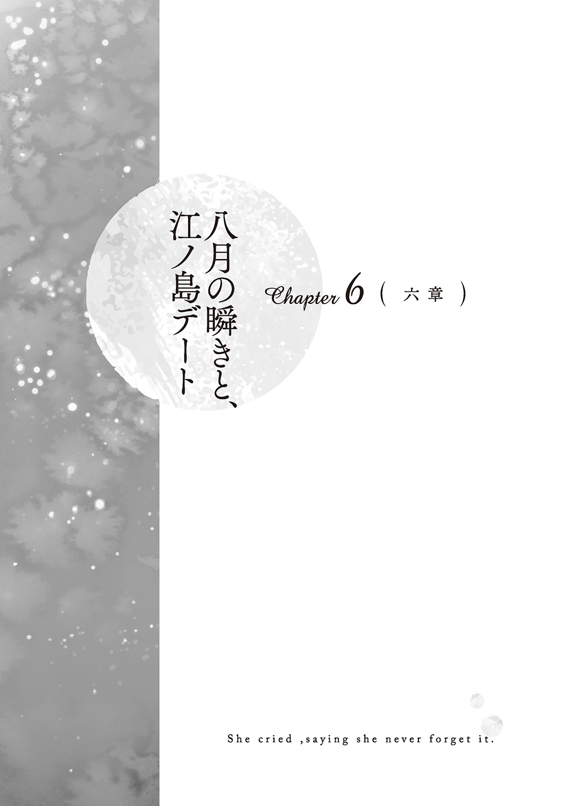
【１】
合宿から戻った翌日。
俺たち五人は午後から、うちの座敷に集まって、作戦会議を開いていた。
「やっぱり支倉さんの記憶を呼び覚ますような場所を、回るのが一番じゃないかなー？」
「それなら去年、よく訪れた場所ですね。龍口寺はどうでしょう？」
書記役の澪が、諏訪と麻利亜の意見をどんどんノートに書き留めていく。
みんなが手伝ってくれるおかげで、話し合いもサクサク進むから助かった。
二十分後――。
今後、巡るべき目的地の候補も決まり、俺たちは一段落ついた。
「それじゃあ今度は塾の宿題をする予定......だけど、その前に少し休憩しよっか」
澪の提案を聞き、由依が机の上に身を乗り出す。
「ねえ、なんか夏っぽいもの食べたくない？ たとえばアイスとか!!」
「うちにはないぞ。俺が食べ過ぎて腹を壊したせいで、母親が買い置きさせてくれなくなったんだ」
「まるで子供みたいな理由ね！ ――でも、それなら買い出しに行くことにしましょ。ジャンケンで負けた人がね！ じゃあいくわよ！ 最初はグー！ ジャーンケーンポンっ！」
二回アイコが続いた後、三回目で勝敗が決まった。
俺と由依がグー、残りの三人がパーを出している。
「うっ......、負けたわ......」
炎天下の中、買い出しに出かけるのは言い出しっぺの由依と、俺ということになった。
「......で、おまえらリクエストは？ ダッツはなしだぞ、財布に響く」
「じゃあ私は、ガリガリ君がいいな！ 味は陵介くんに任せるよ」
「俺はかき氷がいいなー。しろくまがあったら、しろくまで。もしなかったら、ミルク味のやつ。でもしろくまを置いてないとかないよねー」
「私はチョコレート系で、濃厚そうなのをお願いします」
まったくみんな好き勝手言ってくれる。
「ガリガリ君......しろくま......チョコ濃厚......。ガリガリ君......しろくま......チョコ濃厚......」
立ち上がった由依が、ブツブツ言い始めてギョッとなる。
「......おい由依、どうした？」
「話しかけないで、何を買ってくるか忘れちゃうでしょ！」
「昔、そういう絵本があったよな......」
まるで子供みたいで、思わず笑いそうになったが、由依が機嫌を悪くしたら大変なので、なんとか堪える。
「てか、俺が覚えてるから大丈夫だっての」
「ほんとに？ 忘れないでよ？」
「ああ、忘れない」
そんな会話を交わしつつ、俺たちは玄関に向かい、靴を履いた。
由依に続いて外へと出た瞬間、熱気とともに、けたたましい蟬の鳴き声が俺たちを取り巻いた。
まるで真夏の気配が迫ってくるかのようだ。
「......なあ、ほんとに行くのか？ 外、めちゃくちゃ暑いぞ......」
「夏なんだから当たり前でしょ！ どうしてそんな嫌がるのよ」
「真夏の昼間なんて、極力出歩きたくないっての......。暑いし、バテるし、汗もかくし。由依だってジャンケンに負けた瞬間、嫌そうな顔してただろ？」
「私は負けたのが嫌だったのよ。ほら早く！」
元気よく坂を駆け上っていった由依が、途中でくるりと振り返り、俺を急かすように大きく手を振った。
「早くってばー！」
仕方ない。
俺は説得を諦め、軽く首を振ってから、眩しい光の中に踏み出した。
「ずっと前から思ってたんだけど、どうしてジャンケンって『最初はグー』で始めるのかしら？」
隣を並んで歩く由依が、水玉のスカートを揺らしながら汗を拭う。
俺たちは坂を下った先にあるコンビニを目指して、日向の道を進んでいった。
「それはやっぱり、調子を取るためじゃないか？」
「調子って？」
「あーつまり......、ジャンケンポン!!」
「ちょっ......!?」
俺が唐突に仕掛けたジャンケンに対応できず、由依は啞然とした顔になった。
「ほらな。『最初はグー』がないと、対応仕切れないもんなんだよ」
「なんだか悔しいわ......」
由依が不満そうに唇を尖らせた。
「ねえ、もう一度不意をついてジャンケンを仕掛けてきてよ。次は絶対に間に合わせるから！」
「それじゃあ不意打ちにならないっての」
「た、たしかに......。でもこのまま引き下がるのは悔しいわっ！」
由依が子供みたいにムキになるから、俺は声を立てて笑ってしまった。
「もうっ、そこまで笑うことじゃないわよっ」
「ごめん、なんかツボった」
「出かけるときは渋ってたのに、楽しそうね！」
笑う俺の腕を、由依がぺしっと軽く叩く。
こんなふうにじゃれ合っていられるのがうれしくて、俺はまたさらに笑ってしまった。
ジャンケンに負けてよかった。
そんなやりとりを交わしているうちに、コンビニへ辿り着いた。
自動ドアを通り抜けた瞬間、冷気が俺たちを包んだ。
汗をかいた体が、急速に冷やされていく感覚が心地良い。
俺と由依は涼しさを満喫しながら、アイスの入っているクーラーボックスの前へ移動した。
「買ってくアイス覚えてる？」
「ガリガリ君、しろくま、チョコだろ」
クーラーボックスの中を上から覗き込むと、頼まれたアイスはすべてそろっていた。
「由依は何にするんだ？」
「私は、えっとー......パピコにしよっかな......。オレンジシャーベットもいいけど、いちごミルクも捨てがたいわね......。あーでも、やっぱりパピコ......だけど、うーんうーん......」
「そこまで悩むなら、二個買えばいいだろ」
「何言ってるの！ アイス、二個は食べ過ぎよ。おなかが冷えちゃって、私がトイレでごにょごにょ......になっちゃったらどうするの!? 恥ずかしくってみんなの前に顔を出せなくなるわ！」
「そ、そうか......。女子って大変なんだな」
「そう、女子って大変なのよ」
「じゃあ俺がもう一種類のほうにするから、半分やるよ」
「えっ!? いいの......？ 他に食べたいアイスがあったんじゃないの？」
あるにはあったけど、何が何でも食べたかったわけじゃない。
それに俺が譲ることで、由依を喜ばせられるなら、アイスの種類なんて何百回でも譲る。
俺は黙ってパピコをアイスボックスから取り出し、みんなに頼まれた物と一緒にレジへ運んだ。
会計をすませ、コンビニを出たところで、袋からパピコを取り出した。
両手で握って、何度か折り曲げると、パキンと音がして二つに割れる。
「ほら」
約束通り半分を由依に差し出すと、彼女はうれしそうに受け取った。
「ありがと！」
「おー」
「ふふっ！ 手が冷たくて気持ちいいわ！」
両手でパピコを握った由依がそう言って、楽しそうに目を細める。
押し潰されるような真夏の暑さは行きの道と変わらないのに、喉の奥を冷たいアイスが通っていくだけで、爽やかな心持ちになれた。
「ねえ、真宮陵介......。あなたってその......なんていうか、......いい人ね」
しばらく黙ってパピコをくわえていた由依が、不意に口を開いた。
「いい人？ パピコを買って分けたから？」
「それもあるけど、それだけじゃないわ」
「それもあるのか」
「ええ、それもあるわ」
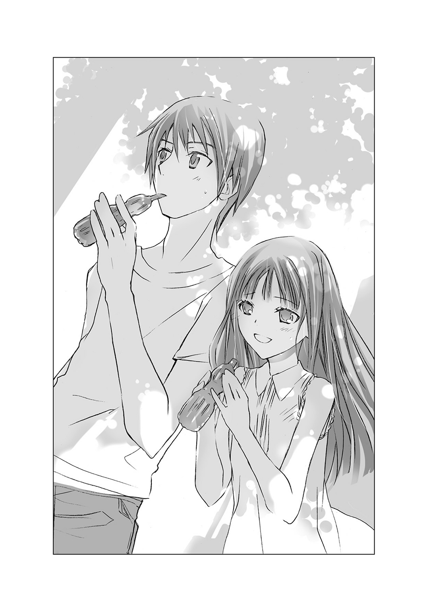
由依が俺を見て、クスクスと笑う。
少しだけ由依との距離が近づいたように思えた。
この感覚が気のせいでないといい。
【２】
俺たちは翌日からさっそく、夏期講習の合間を縫って、由依の記憶回復のための行動を開始させた。
この十日間で巡った場所は、七箇所。
由依は、そのすべての場所で、しっかり記憶を取り戻した。
「すっごく上手くいってるし、これなら支倉さんの記憶が完全なものになるのも、すぐかもねー」
談話室の壁にもたれかかって、缶コーヒーを飲んでいた諏訪が、お気楽な声でそんなことを言う。
楽観的な考えはあまり好きじゃない俺ですら、諏訪の言葉通りになるかもしれないと期待してしまった。
そのぐらい、記憶の回復は順調だったのだ。
「......そうね」
部屋の隅に置かれたパイプイスに座っている由依が、少し遅れて返事をした。
「ほんとよかったよ。やっぱり記憶がないと、由依ちゃんも不安だろうし」
「......ええ」
「簡単に思い出せるということは、深刻な記憶障害ではなかったのでしょう」
「......うん」
みんなと由依のやりとりを聞いていた俺は、ふと違和感を覚えた。
なんだか普段に比べて、由依の返答に覇気がないというか、反応が鈍い気がする。
どうかしたのか？
心配になったけれど、自販機の前に立っている俺から、由依が座っているイスまでは少し離れている。
わざわざ歩み寄っていって、体調を尋ねるのは躊躇われた。
みんなの目もあるし、人前でそういう行動を取るのは、なんというか恥ずかしい。
俺は仕方なく、密かに由依のことを観察してみた。
顔色が悪い気もするが、もともと由依は色白だ。
苦しそうにしている様子は見られない。
ただ、どことなくぼんやりしているような......。
そんなことを考えながらしつこく由依を眺めていたせいで、ばっちり目が合ってしまった。
まずい。
盗み見ていたのがバレて気まずい。
そのうえ由依の大きな瞳は、真っ直ぐに俺を見つめてきて......。
「......っ」
俺は耐えきれず、慌てて視線を逸らした。
心臓がバクバク鳴っている。
顔も熱い。
いつも普通に話をしている時は平気なのに、何を意識してるんだ。
言い聞かせても、胸の鼓動はおさまらない。
恋はやっかいだということを、こんな瞬間には、いつも思い知らされた。
それから三日後の休日。
前回の休みと同様、俺たちはうちの家に集まり、記憶回復のための作戦会議を開いていた。
「まずは今日の午後行く場所から決めないとねー」
「......ええ......」
諏訪の言葉に一拍遅れて、由依が返事をした。
まただ。
塾の談話室の時と同じように、由依の様子がどことなくおかしい。
斜め向かいに座っていた俺は、由依を眺めながら首を傾げた。
そのときちょうど母親が、切り分けたスイカを持って部屋に入ってきた。
「みんな、おやつよー。何を一生懸命相談してるのか知らないけど、ちょっと休憩しなさい」
「わぁ！ ありがとうございます」
「申し訳ありません。こんな大勢で押しかけてしまって」
「あら、いいのよぉ」
みんなが関心をスイカに向けている隙に、俺は席を移動し、由依だけに聞こえる声でさりげなく尋ねてみた。
「......なあ由依。おまえ、なんだかぼんやりしてないか？」
「えっ......!? そ、そんなことないわよっ......！」
全力で両手を振って否定する仕草が怪しい。
「......なあ、おまえなんか隠してるんじゃ――......」
「ね、ねえみんな！ 私、このあと龍口寺に行ってみたいわ！ ついてきてよ！」
由依は俺の質問を遮るようにして、みんなに声をかけた。
その行動で、俺は逆に確信を持った。
やっぱり由依は明らかにおかしい。
浮かない表情、ぼんやりした態度、青白い顔色、おそらく体調が万全ではないのだ。
今はまだ八月の前半だけれど、もしかしてもう『夏の妖精』の症状が、深刻化してきているのだろうか......。
三十分後――。
スイカを食べ終わった俺たちは、由依の希望通り、みんなでバスに乗って龍口寺へ向かった。
参拝客の邪魔にならないよう、寺の裏手の石段に並んで座って、とりとめなく思い出話を交わしていると、十五分近く経った頃だろうか、不意に由依が黙り込んだ。
数秒後、目を開けた由依は、過剰なくらいはしゃいだ声で、また新しい記憶を取り戻したと言った。
それを聞いてみんなとてもよろこんだが、俺は手放しで同調する気にはなれなかった。
心に心配ごとがある限り、気持ちはずっとこのままだろう。
やっぱりちゃんと由依と話そう。
由依の体調が深刻な状況だったらと想像しただけで、足がすくんだが、だからといって素知らぬ振りはできない。
だって俺は由依を守りたいのだ。
どんなことでもちゃんと受け止めて、向き合わなければ。
ただ『夏の妖精』に関わることだから、もちろんみんなの前では話せない。
俺はしばらく機会を待った。
やがて日も暮れかかり、そろそろ帰ろうかという話になったとき――......。
みんなと一緒に江ノ島駅へ向かおうとする由依を、俺は引き留めた。
「由依、少しいいか？」
「え？」
「ちょっとその......、二人で話したくて」
「べ、別にいいけど......」
「あれー？ なになに、リア充二人は、今から抜けだしてデートするんだー？」
「うるさいっての、諏訪」
「さては花火くん、支倉さんと二人きりになりたいって、今日ずっと思ってたなー？」
「ハイハイ、勝手に言ってろ」
どうせ囃し立てられるだろうとは思っていたので、適当にあしらう。
「デートしてから帰るのはいいけど、陵介くん、もうすぐ暗くなるから、ちゃんと家まで送ってあげてね」
「わかってるよ」
ちょうどそのとき駅のホームから、アナウンスが聞こえてきた。
「あ、電車が来るみたいですね」
「それじゃあ二人とも、また明日、塾でね！」
手を振って、みんなが改札の向こうへ姿を消していく。
俺と由依は並んで、彼らの後ろ姿を見送った。
やがて完全にみんなの姿が見えなくなると、隣の由依は大げさな溜息をついてみせた。
「そ、それでっ？ どうしたのよ、こんなふうに引き止めたりして！ ......デートに誘いたいなら、もうちょっと早い段階で言いなさいよねっ」
「いやデートっていうか、とりあえず俺は二人で話ができればよかったから」
「......そうなの？ 話だけ？」
「ああ」
「ふうん......。まあいいけどっ。別に私だってあなたとデートしたかったわけじゃないし......。全然ちっともそんなこと望んでなかったし......」
なんだか由依は、がっかりしているように見える。
なんてまさかな......。
「ていうか話だけなら、みんながいるときだってできたじゃない」
「いや、それは無理だったんだ」
「どうしてよ？」
「おまえの体調のことをちゃんと聞いときたかったから。『夏の妖精』に絡むことなら、みんなの前では話せないだろ？」
「......っ」
ぎこちなく表情を強ばらせて、由依が黙り込む。
顔つきは、明らかにさっきまでと違った。
「......由依、おまえ何か隠してるよな？」
「し、しつこいわよ！ さっきも言ったけど、何も隠してなんかいないわっ！」
もちろんそんな言葉で、納得できるわけがない。
「だったらなんで、慌てるんだよ。......なあ、どこか体の調子が悪いんじゃないのか？」
「そんなの言いがかりよっ」
「言いがかりって、おまえな......」
「どうせ根拠なんてないんでしょ！」
「いいや、疑ってる理由だったらいくらでもあるぞ。まず顔色が良くない」
「ふんっ、私はもともと色白なのよ」
「去年の傍若無人な態度に比べると、今年はだいぶ大人しいし」
「......喧嘩売ってるなら買うわよ？」
「合宿でも頭が痛いって言ってたよな」
「偏頭痛ぐらい誰でも起こすわよっ！」
「だけど......」
「もうっっ！ 真宮陵介、ほんとにしつこいっ!!」
「でもな......」
「病人扱いしないで！ 私は、『去年までの私』とは違うのッ......!!」
声を荒らげてそう言うと、由依は俺を睨みつけた。
追求されることが我慢ならないという態度だ。
どうしてそこまでして由依が隠し立てするのかわからず、俺は途方に暮れた。
「......俺に心配されるのは、迷惑か？」
気弱な言葉を口にするつもりなんてなかったのに、気づいたらそう呟いていた。
しまった。
余計なことを言ったと後悔する。
ところが不思議なことに、それまでずっと頑なだった由依の顔つきが変わった。
「迷惑とかじゃなくて......。......心配かけたくないから、黙ってたのよ......」
ということは......。
「やっぱり、どこか体の具合が悪いのか......？」
由依は視線をさまよわせてから、言いづらそうに話し始めた。
「......私、その......最近ちょっと貧血気味なの」
「......貧血？」
あまりに予想外の答えで、理解するのに少し時間がかかった。
『夏の妖精』の症状で身体が弱ってきているから、貧血を併発しているという意味だろうか。
「毎年そうなるのか？」
「毎年？」
「つまり『夏の妖精』の症状のひとつなのか？」
「だーかーらー！ 『夏の妖精』の症状とはまったく関係ないのよっ」
「関係ないって言われても......。......本当に単なる貧血だってことか？」
なかなか俺の疑念は晴れない。
「ちゃんと話したのに、まだ疑ってるって顔ね」
「だって単なる貧血なら、頑なに隠す必要あったか？」
「言いにくかったのにはわけがあるのよ......。その......、......女の子の日的なあれで貧血になってるから......」
「......女の子の日？ ......あっ......」
言わんとしていることを理解した瞬間、どうしようもなく気まずくなった。
「そ、そっか......」
「ていうか貧血だっていろいろ大変なんだから、『単なる貧血』なんて言わないでよねっ」
「ああ、そうだな。ご、ごめん......」
その後はなんだかずっと気恥ずかしくて、由依を家に送り届けるまで、まともに顔を見ることができなかった。
【３】
翌日。
夏期講習の休憩時間中、トイレから出たところで、俺は麻利亜に呼び止められた。
「真宮くん、ちょっといいでしょうか？」
「麻利亜？ どうした、何か用か？」
こんなふうに麻利亜が一人で、俺に話しかけてくるのは珍しい。
「昨晩、支倉さんに電話で聞きました。真宮くんが彼女の体調を、ずいぶん心配されていたとか」
「電話で......？ おまえら二人って、そんな雑談するほど仲が良かったんだな」
意外に思った。
去年はそれこそ『オーラ問題』で、麻利亜が由依のことをあれこれ詮索していたから、俺の中ではまだ、そのイメージが強く残っていたのだ。
でも由依と麻利亜が、普通の友達のように親しくなれたのなら良かった。
「ところで真宮くん。私にはオーラが見えるという話を覚えていますか？」
「忘れるわけないだろ。あんなインパクトの強い話を」
「ふふっ。覚えてくれていて何よりです。それで伝えておきたいと思ったのですが、今の支倉さん、しっかりオーラが見えます。ちゃんと生命力を持って生きている証です。信じるか信じないかは真宮くん次第ですが、一応判断材料の一つにはなるかなと思ったので」
どうやら俺が由依の体調を気にしているから、安心させようとしてくれたらしい。
電波発言が目立つせいで、変わり者だと思っていたが、実は結構、いいやつなんだな。
俺は素直に麻利亜の心遣いに対し、感謝の気持ちを抱いた。
「麻利亜、ありがとう」
「私は支倉さんのお役に立ちたかっただけなので、気にしないでください」
麻利亜は小首を傾げて、にっこりと笑ってみせた。
教室に戻ると、授業開始までまだ少し時間があったので、俺はスマホを取り出した。
貧血についてネットで調べてみると、鉄分を含む食べ物が効果的だと書いてあった。
レバーや、タン、マグロに、干しぶどうや、乾燥プルーン。
レバーとかはもちろん無理だけど、ドライフルーツ類なら、買っておいて渡せそうだ。
そんなわけで俺は、帰りに輸入食料を扱う雑貨店へ寄った。
ドライフルーツは好き嫌いがあるから迷ったけれど、試しに一袋、購入してみる。
明日また、塾で由依に会ったら渡してみよう。
そう思って、鞄の中にしまう。
ところがそれから三日――。
俺は未だにドライフルーツの袋を、鞄に入れて持ち歩いている。
由依に手渡すチャンスがなかったわけじゃない。
というか今だって俺は由依を送り届けるため、二人きりで長谷駅を出たところだから、絶好の機会だ。
でも言い出せない。
なんだかものすごく照れくさくて......。
心配しているとか、そういう気持ちの中には、結局由依への好意が存在していて、だからやたらに恥ずかしくなるのだ。
ただ物を差し出すだけなのに、こんなに難しいなんて変な話だ。
俺は手紙を渡せなくて、四苦八苦していたときのことを思い出した。
いや、あの時に比べてハードルはだいぶ下がっているはずだと、自分に言い聞かせる。
少なくとも由依は今、逃げ出したりせず、俺の傍にいるのだから。
俺は迷いつつも、隣を歩く由依に気づかれないよう鞄の中に手を入れて、ドライフルーツの袋を摑んだ。
「......」
......やっぱり無理だ。
渡せない。
意気地なしの俺は、結局また袋を鞄の奥に押し込もうとした。
ところがうっかり手を滑らせて、鞄の中身を地面にぶちまけてしまった。
教科書と一緒に、もちろんあのドライフルーツの袋も、由依の目の前にさらけ出された。
「なにやってるのよ？ ......ってあれ？ どうしてこんなの持ち歩いてるの？」
しゃがみこんで荷物を一緒に集めてくれようとした由依は、ドライフルーツの袋を手にして首を傾げた。
「ドライフルーツが好きなの？」
「あー、えっと......」
頷きかけて、思いとどまる。
この流れのまま、渡してしまえと心の中で声がした。
「これはその......、おまえに渡そうと思って......」
「え？ 私に......？」
「なんか貧血に効くみたいだから、それで......」
「心配してくれたの？」
「......ああ」
「どうして私のこと心配してくれるの？」
「どうしてって......。そんなのいちいち言わなくてもわかるだろ......」
「ううん。言わなきゃわかんない。ていうかたとえわかったとしても、その察してくれ的な感じが嫌だから、察したりしないわ。大事なことも、そうでないことも、ちゃんと口にして伝えるべきよ！」
由依が俺のことを、じっと見つめてくる。
適当な言葉でごまかすのを許さないとでもいうような、強い眼差しだ。
俺はゴクリと生唾を飲み込み、猛烈に主張し始めた自分の心音を聞きつつ、口を開いた。
「......心配なのは、好きだからだよ......。......おまえのことが」
「あ......。そ、そんなストレートな返事が戻ってくるとは、思ってなかったわ......」
「いやだって、おまえが言えっていうからさ......」
「そうだけど......」
「......ちゃんと友達だってことはわかってる。だから今のアレはなんだその、き、気にすんなよ......」
「う、うん......」
由依は視線をせわしなく動かした。
そのうえ耳まで真っ赤になっている。
どうしてそんな反応をするのか尋ねてみたかったが、勇気を出せないまま由依の家の前まで辿り着いてしまった。
「......送ってくれてありがと。えっと......じゃあね」
「おう......」
家の中に入っていく由依の後ろ姿を見送ってから、小さく溜息をつく。
人間とは欲深な生き物だ。
最初はただ友達として、傍にいられるだけでよかった。
それなのにいつの間にか、その先を求め始めている。
でもあんな顔を見てしまったら、期待が膨らむのを止められなかった。
由依の中の俺はいったい、どういう存在なのだろう。
未だに単なる友達のまま？
それとも記憶を思い出すごとに、俺に対する感情も取り戻してくれているのだろうか。
その夜。
からかわれることは承知の上で、俺は諏訪にラインを送った。
言い訳めいていて、遠回しな文章を打ち込んだら、一言こう返ってきた。
諏訪公太『つまりどういうこと？』
真宮陵介『つまり......。..................もっと親しくなりたい的な』
諏訪公太『あーそういうことかー。それなら、もっと積極的に行動したら？ あとは好きになってもらうための努力をする必要が、あるんじゃないかなー』
真宮陵介『積極的な行動と努力か......』
諏訪公太『デートに誘っちゃえばいいんじゃないかなー』
「デート......」
液晶に表示されたその言葉を見て、ごくりと息を呑む。
去年の俺と由依ですら、デートという名目で出かけたことなんてない。
でも積極的に行動するなら、誘うべきか......。
積極的行動。好きになってもらうための努力。積極的行動。好きになってもらうための努力......。
お経のように頭の中で唱え続けて、ようやく決意を固めた俺は、チャットの画面を切り替え、由依だけに向かってメッセージを送った。
『日曜日、二人で江ノ島に出かけないか？』
落ち着きなく待つこと十分――。
返事が来た。
『思い出の場所に行くってこと？ それともデートの誘い？』
まさかこんな質問が返ってくるとは。
俺は焦って困り果てて、必死に悩み、ようやくこう返事をした。
『どっちも』
由依からの返信はすぐに届いた。
『つまんない返事！ でもまあいいわ』
これでなんとかデートの約束をとりつけることができた。
【４】
よく晴れた日曜日の朝――。
今日こそは由依より早く待ち合わせ場所に向かいたいと思い、俺は約束の三十分前に江ノ島駅へ到着した。
ところが改札を出た先の小さな広場の脇に、またしても由依の姿を見つけてしまった。
「ごめん、また俺が待たせちゃったな......」
「もう！ おっそいーっ！」
両手を腰に当てた由依が、むうっと口を膨らませて俺を睨む。
白いリボンのついた麦わら帽子と、水色のワンピース、かごバッグを肩にかけている由依は、いつもと少し雰囲気が違う。
男の俺にはよくわからないけれど、女の子っぽいというか、まあ要するに、今日の由依の格好は、いつも以上にすごくかわいいということだ。
そうか、これがデートなんだ......。
今更実感して、手のひらにじんわりと汗をかいた。
「えっと......じゃあ、行くか......」
「うん......」
由依がしおらしく頷く。
二人の間に流れる空気が、普段とは異なる。
そわそわして、落ち着かなくて、少しだけ踵が浮いているみたいな気がした。
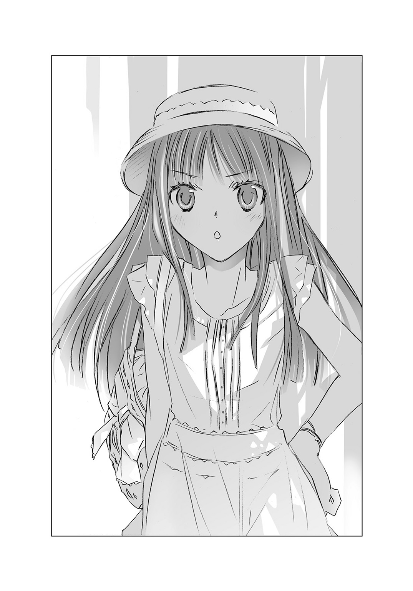
江ノ島は夏休み中の日曜日ということもあって、観光客でごった返していた。
「わぁ......！ いろんなお店がやってるわ！」
俺の隣で辺りの様子を見回しながら、由依がはしゃいだ声を上げる。
「昼間の江ノ島ってこんなに賑やかだったのね......！」
「去年の夜に来たときは、静まりかえってたもんな」
「あっ、たこせんべいだわ！ 私あれ食べたい！」
「あ、おい由依！ 走ったりしたらはぐれるぞ」
「だったらこうすればいいじゃない！」
由依は俺の手を摑むと、人混みの間を縫うように歩き出した。
「ほら、はやくっ」
「うわっ、ちょっと待てって......！」
握られた手の温もりにドギマギしながら、慌てて由依の後を追いかける。
せんべい屋の前までやってきた俺たちは、長い列の最後尾に並んで、順番を待った。
「このあともいろいろ食べたいから、一枚を半分こにしましょうよ」
「ああ。結構でかいもんな」
「途中で飽きちゃうかもしれないし」
俺にだけ聞こえるように声を潜めた由依が、にやりといたずらっ子のように笑った。
もともと由依は喜怒哀楽をしっかり出すタイプだったけれど、こんな表情を見たのは初めてかもしれない。
たった一夏一緒にいただけなのに、何もかも知り尽くしたつもりでいた自分に気づき呆れた。
きっと由依には、まだ俺の知らないいろんな顔があるのだろう。
そんなことを考えているうちに、俺たちの順番が回ってきた。
店主から受け取った大判のせんべいを、真ん中でパリッと二つに割り、片方を由依に差し出す。
それから道の端に逸れた俺たちは、同時にせんべいを頰張った。
「わっ、おいしい......！ 温かくてパリパリしてるわ！」
「ほんとだ。やっぱ焼き立ては違うな」
「それにめちゃくちゃタコって感じよっ！」
「なんだよ、その言い方」
由依の言葉遣いが珍妙で思わず吹き出す。
「な、なによっ。仕方ないじゃないっ。めちゃくちゃタコって感じなんだもの！ そんな笑わないでよねっ」
「はいはい、悪かったって」
「まったくもうっ」
文句を言いながらも、由依だってちょっと笑っている。
いつもどおり普通に喋れるようになったことに気づき、俺は少しホッとした。
緊張しているよりずっと楽しい。
このあともできるだけ意識しすぎないようにしたいと、密かに思った。
江ノ島を右回りにぐるりと散策し、俺たちは最後に『江ノ島岩屋』と呼ばれる洞窟へやってきた。
波の浸食によってできたこの洞窟の最奥には、祠があり、龍神が祀られている。
小学校の頃、遠足で来たときに、たしかそんな説明を受けた。
龍神とは恐らく、弁財天との伝説を持つあの五頭龍のことだろう。
俺は去年の花火のことを思い出して、なんとも言えない気持ちになった。
今年の花火大会で、どんな花火が上げられるか俺はまったく知らない。
たった一年経っただけなのに、居る場所がまったく違う。
そんなふうに感じて、苦い思いがした。
「真宮陵介！」
ぼんやりしていた俺のほうを振り返って、由依が名前を呼んだ。
「ほら手を取って」
「......手？ あー、えーっと......、洞窟の中が暗いからか？」
「違うわ」
「洞窟の中が暗くて怖いからか？」
「違うってば！ ......今日はデートでしょ？ ならデートらしいことしないとおかしいじゃない？」
たまりかねたように、由依が俺に向け、小さな手を差し出してくる。
俺はとっさに手を握り返しそうになった後、思いとどまった。
申し出はうれしい。
だからって由依の好意に甘えることはできなかった。
「......あのさ、由依。無理して俺に合わせることないからな」
「無理って？」
「付き合ってたって俺が言ったから、合わせてくれてんだろ？」
「無理なんてしてないわ......。だいたい、私が嫌々付き合うような女だと思ってるのっ？」
「いや、それはまあ、思ってないけど......」
「でしょ！ 私は、自分がしたくなかったら、こんなこと言わないわ」
「......じゃあ俺と手を繫いでもいいって思ったのか？」
「そ、そういうストレートな聞き方しないでよね......！」
「ご、ごめん」
「繫ぐの!? 繫がないの!?」
「繫がせていただきます！」
「ふんっ」
俺が手を摑むと、由依はそっぽを向いて鼻を鳴らしたが、それでも俺の手を、ギュッと握り返してきた。
岩屋の入口では、案内係から蠟燭が差し出された。
右手に蠟燭を持ち、左は由依と繫いだまま、ゆっくりと先へ進んでいく。
洞窟の中は暗く、蠟燭の灯りだけでは少し頼りない。
ひんやりとした空気には、強い潮の匂いが混ざっていた。
「ね、ねえ......、なんか変な音がしない......？」
「ああ、これか」
由依の言うとおり、確かに風が吹くたび、洞窟内には低く唸るような音が響き渡る。
でも俺はその正体についても、遠足で教わっていた。
「これがこの岩屋の特徴だ。海の波音が洞窟内に反響して、龍の轟きのように響くって有名なんだ」
「あ、ほんと！ 言われてみれば、吠え声みたいだわ......！」
「理由がわかれば、恐怖心もなくなるだろ？」
「べ、別に怖がってなんていなかったんだからねっ！」
「そうか？ 声が震えてたような気がしたけど」
「もうっ、震えてないったらっ。それ以上言ったら、怒るからねっ」
俺を戒めるように、由依が繫いだ手にギュウッと力を込めた。
「どう？ 痛いでしょ！」
得意そうに笑いながら、俺を見上げてくる。
辺りが暗くてもこれだけ近ければ、由依の表情をちゃんと読み取れた。
「ああ、痛い」
もちろん、本当は堪えてない。
でも期待した顔をしている由依をがっかりさせたくなかったし、このぐらいの噓は許されるだろう。
「おまえ、見かけによらず結構力あるんだな」
「ふふーん、でしょ？ 私を怒らせないように気をつけることね！」
由依が楽しそうに笑い、その明るい声が洞窟内を満たした。
洞窟を出て、江ノ島の入口にあたる橋の袂へ戻ってくると、ちょうど日が暮れ始めた。
島を去る他の観光客たちと一緒に、橋を渡った俺たちは、江ノ島駅へ向かう人の波から逸れて、腰越海岸へ降り立った。
「さあ話して。ここではどんなことがあったの？」
「ああ、えーっと......その......」
目前にはあの日と同じように、夕日に赤く染まった海が広がっている。
記憶は自然と蘇ってきて、当然のことながら、俺の心拍数は上がり始めた。
冷静に説明できる自信がない。
由依が俺に何をしたか、何を言ったか。
そのことを覚えていない本人に説明するなんて、結構ハードルが高い。
おそらく恥ずかしさと惨めさと居たたまれなさが、ごちゃ混ぜになって押し寄せてくるだろう。
余計なことを考えたせいで、俺は怯んでしまい、なかなか思い出話を始められなかった。
「どうしたのよ？ あなたが思い出を聞かせてくれないと、記憶が戻らないわ」
「わ、わかってる。でも、ちょっとなんていうか......、こ、心の準備が必要な内容なんだよ......」
「心の準備？」
「少しだけ待ってくれ......」
「もうっ、仕方ないわね」
しばらくの間、由依はわくわくした顔で待っていた。
でも気が長いとは言えない彼女はすぐに焦れてしまい、頰を膨らませて俺を急かし始めた。
「ねえねえ、まだなのー？ ねえってばー！」
いい加減、腹をくくるしかなさそうだ。
俺は一度大きく息を吐き出してから、去年の夏、この海であった出来事を由依に話して聞かせた。
言い合いになり、帰ろうとした俺を、由依が後ろから抱きしめてきたこと。
そのときに彼女が伝えてくれた、特別な言葉たち。
話を聞いていた由依の顔は徐々に赤くなっていき、俺が口を閉じる頃には、耳まで真っ赤に染まっていた――......。
「じゃあな」
私の言葉と態度に怒って、背中を向けた真宮陵介が、砂を踏みしめるようにして歩き出す。
彼は感情的になることが少なくて、私の暴言をいつも聞き流してくれる。
でも今は明らかに怒っていた。
言い過ぎたと後悔しても遅い。
なんで私はこうなんだろう。
遠ざかっていく背中を見つめながら、下唇を嚙む。
どうしよう......。
このままでは彼が帰ってしまう。
......だめ。
いやだ。
行かないで。
こんなふうにさよならをするのは耐えられない。
待って......！
感情に追い立てられ、私は無我夢中で駆け出すと、彼の背中に抱きついた。
「お、おまえ......。何してるんだよ......」
「......し、知らない。でもだって......引き留めたくて......。......ねえ、まだ怒ってる......？」
「いや......。ていうか最初から別に怒ってないっての」
優しい噓だとわかって、胸の奥が温かくなる。
「......帰ったらだめ」
「わ、わかったから......」
「ほんとに......？」
ゆっくり腕を外し、彼の正面に回り込んだ。
彼のことが好き。
ずっと秘めてきた気持ちが、また大きくなっていくのを感じた――......。
いつものように数秒間、目を瞑っていた由依が、ゆっくりと瞼を開く。
いつもなら由依の瞳は、記憶を取り戻した喜びで、きらきらと輝く。
でもどうしてか今、大きな黒目は、怯えるように揺れている。
俺はそこに、彼女の不安を感じ取った。
「......こんな大切なことまで......忘れちゃっていたなんて......。私......なんで......」
俺の腕を摑んだ由依が、すがるようにこちらを見上げてきた。
乾いた唇が微かに震えている。
「怖いよ......。陵介......」
俺の名前を呟いた次の瞬間――。
「......っ......うっ」
由依の口から、苦しそうな呻き声がこぼれる。
ぐらりと傾いた身体は、そのまま俺の腕の中に倒れ込んできた。
まただ。
こうやって苦しむ由依を見るのは、もうこれで三度目だ。
自分の馬鹿さ加減に呆れ果てる。
あんな無理のある噓を信じるなんて......。
こんなの単なる貧血なわけがない。
「......ごめんなさい......。すぐ......治るはずだから......。少しだけ、このままでいさせて......」
俺は頷き返し、ぐったりした由依の体を抱え直した。
抱きしめているのか、縋りついているのか、自分でもわからなくなってくる。
彼女を失うことが怖い。
彼女を失うと考えるだけでも怖い。
夏をとどめられる方法があるのなら、たぶん俺は、悪魔にだって魂を売るだろう――......。
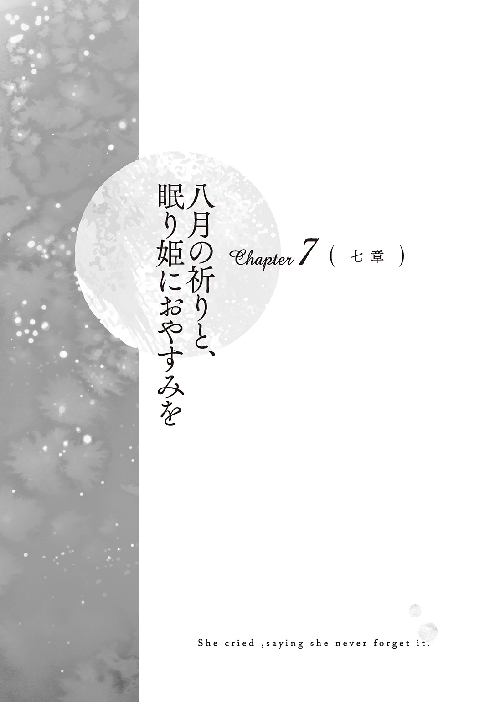
【１】
由依はすぐに治るはずだと言ったけれど、それから十五分近く、彼女は体を起こすことができなかった。
俺はどうしようもなく不安になって、何度も救急車を呼ぼうかと尋ねた。
そのたび由依は首を緩く横に振り、俺を悩ませた。
「救急車なんて......やめてよ......。だいたい......あなたっていつも......大げさなのよ......」
荒かった呼吸がようやく落ち着き、言葉を紡げるようになった頃、由依は力なく笑ってそう言った。
強ばっていた表情が和らいだことに、ひとまずは安心する。
「......少しは楽になったか？」
「ええ......、もう大丈夫......」
由依は体を起こすと、俺のほうを向いて笑顔を作った。
俺に元気な姿を見せようとしているのがわかる。
でも由依に作り笑いは似合わない。
「......やめろって、そんな噓。さすがに俺でも、もう騙されない」
「噓なんてついてないわ......」
「なあ、由依。......おまえ、いつも記憶がフラッシュバックしたあとに、体調を崩しているよな」
「それは......偶然よ......。しかもたったの三回だけじゃない」
「俺が知ってる限りで三回も、だ」
由依が一瞬怯む。
恐らく俺が知らないところでも、体調を崩していたのだろう。
ここまで気づかなかった間抜けな自分にうんざりする。
「記憶が戻ることは、おまえの体調に何らかの変化を与えている。それも悪い変化を」
由依が黙っているので、俺はさらに続けた。
「しかも俺が初めて見た時より、明らかに症状の出てる時間が長くなってた。それってつまり、悪化してるってことじゃないのか？」
「......」
「その症状と『夏の妖精』のことに因果関係はあるのか？」
「......わからないわ」
「そうか......。とりあえず記憶を取り戻すと、体調不良が起こることに関しては認めるんだな？」
由依が黙ったまま、溜息をつく。
俺はそれを無言の肯定と受け取った。
「......ごめん、由依。記憶を取り戻させたりするんじゃなかった」
「......どうして謝るの？ 思い出すことを決めたのは私よ」
「でもきっかけを作ったのは俺だ。俺がしつこくつきまとったのが間違いだったんだ。ほんとに悪かった......」
「私は後悔してないわ......！」
「でも俺は後悔している。――記憶の回復行動は、もう二度としない。みんなにも俺から話しておくから」
「何よそれ！ なんで勝手に決めるの!?」
「体調に悪影響を与えてるなら、これ以上、記憶を取り戻させるわけにはいかないっての」
「あなただって、思い出してほしいって言ってたじゃない！」
「こんなことになるのがわかっていたなら、絶対に望まなかった」
「このわからず屋っ!! そう言うと思ったから隠してたのよ！ 言っとくけど、あなたに私を止める権利なんてないんだからっ!! ふんっ！」
由依は勢いよく背を向けると、そのままバッグを振り回して歩き出した。
「お、おい由依......！」
「帰る、じゃあねっ！」
怒りまくってる由依を追いかけるわけにもいかず、俺は惨めな気持ちで、由依の後ろ姿を見送った。
【２】
腰越海岸でケンカ別れをした翌日から、由依は俺たちの前に姿を現さなくなった。
塾の夏期講習も欠席しているし、電話をかけても出ない。
そうなって、もう一週間だ。
ただ俺のことを怒っているだけならいい。
でも、なぜだろう。
妙な胸騒ぎがした。
記憶の回復によって引き起こされる由依の身体への影響について、皆にはすでに説明してある。
由依が一人で記憶を回復させることは不可能だ。
だったらどうして、俺はこんなに不安になるのか。
そんなことを考えつつ、塾に向かって歩いていると、俺の横を通り過ぎた車が、道の脇に寄って徐行した後、停止した。
後部座席のドアが開き、中から降りてきた男を見た瞬間、溜息がこぼれた。
「やあ、真宮くん」
俺は無言で頭を下げた。
由依の父親は笑みを浮かべたまま、俺の目の前で足を止めた。
「忙しそうなところ悪いが、また君と話がしたいんだ。ちょっと時間を作ってもらえるかな？」
「今から塾なんですけど......」
「そうか、それは申し訳ないな。でもユイに関する重要な話だと言えば、君は車に乗ってくれるだろう」
この人はわざと、苛つかせるような喋り方をしているのだろうか。
俺は舌打ちしたくなるような腹だたしさを、唇の内側になんとかねじ込んで、由依の父親の後に続き、後部座席へと乗り込んだ。
「適当に走らせてくれ」
由依の父親が指示を出すと、彼の部下らしき運転手は、静かに車を発進させた。
ちなみに助手席には、黒服を着た屈強そうな男が座っている。
そいつの醸し出す空気のせいで、窮屈で嫌な気持ちになった。
「そういえば去年の夏も、謎の手下たちを連れてましたね」
龍口寺で倒れた由依を、彼らが迎えに来たときの話だ。
「黒服の部下を連れてると、マッドサイエンティストっぽい雰囲気出るから好きなんだ。自分はイカれていると思ったほうが、心が楽だからね」
「そんな演出しなくても、あんたはだいぶやばい人だと思いますけど」
あの時されたことにはいろいろと恨みがあったので、嫌みを込めてそう言ってやった。
ところが由依の父親は、楽しげにカラカラと笑い声を立てた。
「ほんとに？ そう言ってもらえるとうれしいなぁ」
わざと空とぼけたのか、本気でそんなことを考えているのかわからない。
でも、まあ、どっちでもいい。
俺が知りたいのは由依のことだけだ。
さっさと話を聞いて、この居心地の悪い車から降りよう。
「あんまり時間ないんで、本題に入ってもらえますか？」
「そうだね。受験生の貴重な時間を奪うわけにはいかない。勉強は捗ってる？」
これ以上、無駄口を叩くつもりはないと主張するつもりで、俺が黙っていると、由依の父親は肩を竦めた。
「実はユイの協力を得て、新たに試してみたい実験があるんだ」
「あんた、またそんなことを......！」
「落ち着きなさい、真宮くん。話は最後まで聞くものだよ。今度の実験が上手くいけば、ユイの命を永続的に救えるんだ。それなら君だって、頭ごなしに止めようとは思わないだろう？」
「永続的に救える......？」
俺が興味を示したのを感じ取って、由依の父親は満足げに微笑んだ。
そういう態度がいちいちムカつく。
それでも俺は苛立ちを我慢して、尋ね返した。
「......どういうことですか」
この男のことは、微塵も信頼していない。
けれど万が一、本当に由依の役に立つ話だったら......。
過度な期待をしないよう自分に言い聞かせつつ、彼の始めた説明に耳を傾けた。
「なぜ去年の夏、ユイが生きながらえたのか。それまでの夏との違いは一点だけだ。ユイは、一度、心肺停止になったものの、蘇生を果たした。今までユイが夏の終わりに死ぬのは、三カ月の寿命しか持たないからだと考えられていた。でも、去年の出来事で新たな可能性が生まれたんだ。ユイは昏睡状態のまま秋と冬を過ごし、夏の初めに目を覚ました。――あれには本当に驚かされたよ」
「それで？」
「彼女は、三カ月以上の生にも耐えられる体を持っていた。だったらなぜ、今までは夏の終わりに死んでしまったのか。単純な仮説が浮かび上がってくる。彼女が夏の終わりに死ぬのは、『何らかの理由があって、生きたまま寒い季節を越えられない体だから』ではないだろうか？」
「寒い季節を越えられない体......」
「つまり蟬だと思ってたら、冬眠が必要な熊だったってことだよ」
「......由依は人間だ」
「ハハハ。君にもわかりやすいように、喩えただけだ」
「それはどうも......。で、話の続きは？」
「残念ながら去年、ユイの命が助かった理由は、研究の成果というより、偶然が生み出した奇跡だと言える。でも科学の発明や実験が、偶然成功するというのはよくある話だから、問題はない。肝心なのは今後のことだ。――僕は奇跡を意図的に起こせないか実験してみたい」
「意図的にって......」
「夏が終わり、ユイの寿命が費える前に、敢えて昏睡状態にするという意味だよ。去年の夏の終わり、昏睡状態になったことで、季節を越えられたのなら、意図的に体をその状態にすればあるいは......。ただそれには問題がある。あの子が嫌がっているんだ。そこで君に、ユイの説得を頼みたいんだ」
「由依はどうして嫌がってるんですか？」
「そんなことをしたら、また来年の夏、記憶の一部をなくした状態で目覚めるんじゃないかと、危惧しているみたいなんだ。死ぬことより、記憶を一部なくすことのほうが怖いなんて、妙な話だろう？」
「それは仕方ないですよ......。由依は記憶を自分のアイデンティティーにしてるから」
「そうだね。でも、何も記憶のすべてをなくすわけじゃない。ごく一部だし、いくらでも後から思い出させることはできるのだから。僕はあの子をみすみす死なせたくない。君だってそうだろう？ せっかく一年間生きながらえた、特別な個体なんだから。――さて、どうだい？ 説得の役を引き受けてくれるかな？」
「......由依が嫌がってることに、協力はできない」
「結果的に、あの子のためになるんだよ？」
たしかに、由依の父親の言うとおりだ。
「......考えさせてください」
「わかった。ただし、あまりもう時間が残っていないということは、覚えておいてくれ。夏はいつだって短く、あっという間に過ぎていくものだからね。それにどういうわけか、今回は病気の進行が速い」
「それは......、記憶を取り戻すたびに、体調を崩しているせいですか......？」
「可能性はあるね。断言はできないけど」
「そうですか......」
「考えがまとまったら、うちに来てくれ。週末の夜なら在宅しているから」
俺は無言で頷いて、車から降りた。
塾の教室には、一枠目と二枠目の間の休憩中に、コソコソと紛れ込んだ。
席に座り、一息つく。
考えるとは言ったものの、いったいどこから手をつけたらいいんだ。
由依に会って話がしたい。
ああ、でも俺は彼女を怒らせ、避けられているのだった。
まったく今年の夏は、こんなことばかりだな......。
思考を巡らせながら参考書を広げていると、前の席の女子たちの会話が、なんとなく耳に入ってきた。
「まったく毎日、授業ばっかで嫌になるよ～。受験生だからしょうがないのはわかってるけどさー」
「夏休みっぽいことなんもできないもんね。プールとか海とか！」
「そうそう！ 見てよこの腕、白いまんま！」
「私だって変わらないよ」
肌の色を比べ合うやりとりを見て、ハッと息を呑む。
俺は急いで時計を確認した。
講師が来るまで、あと十分ある。
席を立った俺はすぐさま隣のクラスへ向かい、目当ての人物のもとへ駆け寄った。
「悪いけど、腕を見せてくれ」
「......え？ 腕って......」
「ちょっと、ごめん！」
驚いて俺を見上げている相手の手を取り、少しだけ袖口を持ち上げる。
服で隠れていた部分と、むきだしの部分で、わずかに色が違っていた。
「夏期講習が終わった後、話があるから残ってくれるか？ 麻利亜」
授業後、俺と麻利亜は、談話室に移動した。
「麻利亜、おまえに聞きたいことがあるんだ」
麻利亜の瞳が、俺の胸中を探るかのように細められる。
「なんでしょう？」
「おまえもしかして、由依の記憶回復に、協力し続けていないか？」
「あら、どうしてそんなことを聞くんですか？ 支倉さんの体を守るため、今後一切、記憶回復はさせない。私たちはみな真宮くんにそう約束しましたよね？」
「ああ」
「ふふっ。それでも私が裏切っていると考えたわけですね」
人形のような笑みからは、麻利亜の心情がちっとも読みとれなかった。
「教えてください。どうして私は疑われてるんですか？」
「おまえの日焼けだよ。普段から日焼けよけの手袋をしているおまえが、焼けるぐらい出歩いていた。その理由はなんなんだ？」
「ふふっ、これには困りました」
麻利亜は自分の腕を見下ろして、薄く焼けた皮膚を指先で撫でた。
「日焼けした健康的な肌など、私の好みには反するのですが......。それでも支倉さんの頼みであれば、すげなく断ることはできません」
「......二人でこの一週間、記憶を回復させていたのか？」
麻利亜はにっこりと微笑んで頷いた。
「ったく、なんでそんなことしたんだよ......。由依の体調に悪影響を及ぼすって話しただろ？」
「ええ、もちろん承知しています。それどころか支倉さんは、私の目の前で、何度も体調を崩されていましたし」
「だったらどうして......！」
「記憶を取り戻すことが、支倉さんの望みだったからです。体がボロボロになっても、自分の命が脅かされても、失った記憶を取り戻したいと彼女は願いました。私は支倉さんの意志を尊重します。そもそも、どう生き、どう死ぬかを決めるのは、真宮くんではなく支倉さん本人ではないのですか？ それに支倉さんは死を恐れていません」
「そんなことはない」
「かつての恋人というあなたの立場上、受け入れたくない気持ちもわかります。でもそれはあなたのエゴと願望です。支倉さんの気持ちを考えてあげてください」
「考えてるに決まってるだろ......！ ――麻利亜、おまえは間違ってる。平気なふりをしてるだけで、本当のあいつはそんなに強くないんだ」
「......自分のほうが支倉さんのことを理解していると、言いたいのですか？」
「そうじゃない......。ただ、由依は強がってばっかいるタイプだろ？ だからその言葉の裏側に隠れてる意味のことも、考えてみてやってほしいんだ」
麻利亜は黙り込んで、床を見つめていたが、突然顔を上げ、俺に尋ねてきた。
「......もしかして、私はまた間違えたのでしょうか......？ 去年の私と同じように、また支倉さんにとってよくないことをしてしまったのでしょうか？」
俺はなんて答えたらいいのかわからず、すぐに返事ができなかった。
「興味を持ち、知りたいと思うことは、私にとって好意の表れだったのですが......。去年の私は、心ない発言と無神経な詮索で、彼女を傷つけてしまいました。だからその償いをしたかったんです」
「麻利亜......」
「......少し一人で考えさせてください。答えが出るまでは、支倉さんに手を貸すこともしないので」
「ああ、わかった」
麻利亜を信じて頷くしかなかった。
【３】
その晩――。
俺はリビングでニュース番組を見ながら、黙々とホカ弁を食べていた。
両親は一泊二日の温泉旅行に出かけていて、明日の夕方まで戻らない。
ずっと前から、一人で過ごすこの時間を楽しみにしていた。
でも自由を満喫する気には、到底なれなかった。
麻利亜の話を聞いてから、由依の体調が気がかりで、頭がいっぱいだった。
二人で一週間もの間、記憶を取り戻すための行動を続けていたという。
そのことがどれほど由依の体に影響を及ぼしているのか、想像しただけで不安になる。
当然、由依には何度も電話をかけているが、彼女は出てくれなかった。
「なんだか去年の夏の終わりのことを思い出すな......」
俺は溜息をついてから、味噌汁をすすった。
夕方のニュースは、天気予報の画面に切り替わり、大型の台風が日本列島に接近していることを気象予報士が伝えた。
翌朝。
雨戸を打ちつける激しい風の音で目を覚ました。
「昨日言ってた台風か......」
着替えをすませ、リビングに下りてテレビをつける。
『大型で非常に強い台風九号の影響により、関東地方では、局地的に雷を伴った非常に激しい雨が降るでしょう。土砂災害、河川の増水や氾濫に警戒してください』
歯磨きをしながら天気予報を見ている間にも、窓を揺らす風に、大粒の雨が混ざり始めた。
塾から今日の授業が中止になったと、メールが届いたのはその直後だ。
拍子抜けした気分で、朝ご飯用の食パンをトースターに突っ込んだとき、再度ケータイが鳴った。
液晶に表示された名前を見て驚く。
電話をかけてきた相手は、麻利亜だった。
「もしもし、麻利亜か？」
『おはようございます。ちょっと困ったことになりまして......』
「どうした？」
『今日も支倉さんと出かける約束をしていたのですが、昨日、真宮くんに約束したので、お断りしたのです。そうしたら「じゃあ一人で行くわ！」とおっしゃって』
「今日って......、台風が近づいてるのにか？ あいつそれわかってないのかよ」
『「台風なんか気にしてられない」とおっしゃっていました』
「仕方のないやつだな......。すぐ捜しに行かないと......」
『すみません。私では止められなかったので、真宮くんに連絡させてもらいました。もちろん調子がいい話だとはわかっているので......』
「そんなこと思わないって。連絡してくれてありがとな、麻利亜」
『いえ......』
「それで由依は、今日どこに行くとか言っていたか？」
『日記を見て、真宮くんと二人で行ったはずの場所を回ってみるとしか......』
「その範囲だと、さすがに俺たちだけじゃ捜しきれないな......」
『藤代さんと諏訪くんにも連絡してみますか？』
「ああ。俺は諏訪に電話するから、麻利亜は澪にかけてくれ。手助けが可能なら、俺ん家に集合ってことで」
『わかりました。それでは後ほど』
麻利亜との電話を切った俺は、すぐに画面を切り替え、諏訪の番号を呼び出した。
三十分後――。
俺たち四人は、家の前で顔を合わせた。
「陵介くん、話は聞いたよ！ それで、あたしたちはどこを捜せばいい？」
「澪は長谷駅裏の公園を、諏訪は佐助稲荷、麻利亜は腰越の海岸通りを見てくれ！ 俺は高校に行ってみる！」
雨音のせいで、声を張らないと会話にならない。
俺はみんなの顔を順に見ながら指示を出した。
「現地に着いたらすぐ、グループチャットに連絡を入れるね！」
「ああ、よろしく頼む！」
みんなと別れ、俺は目的地の高校を目指した。
その間にも、雨はどんどん激しくなり、鎌倉市からは何度か警報が発令された。
人の気配がほとんどしない。
時折、道路を行くのも市内循環のバスばかりで、一般車はまったく通らなかった。
ＴシャツやＧパンは横なぐりの雨で、ぐっしょりと濡れ、体温を奪っていく。
夏だというのに、風が吹くたび、ぞくりと寒気がした。
こんな中、体調の思わしくない由依が、一人で外にいるのかと想像するだけでぞっとした。
早く由依を見つけられるといい。
ところが残念ながら、校門はしっかり閉ざされ、校内には入れそうもなかった。
もしここに由依が来たとしても、諦めて別の場所へ移動したはずだ。
「誰かが見つけてくれるといいんだけどな......」
しかし時間差で届いたみんなからのチャットメッセージにも、由依には会えなかったと記されていた。
さすがにこの天気だし、由依も今日は家に帰ったのではないだろうか。
ただ強情で無鉄砲な由依の性格を考えると、期待薄な気もする。
それでも一応、長谷にいる澪と諏訪には、由依の家を確認してもらうことにした。
「あと他に、俺と由依が二人で行ったのは......」
駅までの道を引き返しながら、一人呟く。
「そうだ......！ もう一箇所......」
重要な場所がある。
以前、みんなで訪れていたから、無意識に除外していた。
でもあのとき由依が取り戻したのは、みんなとの思い出で、俺と由依だけの思い出は、まだ取り戻してなかった。
「うっかりしてたな......」
いや、それだけじゃない。
あの場所に残っている俺と由依の思い出が、絶望的なものだから、無意識に避けてしまったのだろう。
......龍口寺にいるのか、由依？
俺は立ち止まって、ラインで麻利亜に連絡を入れた。
龍口寺なら、腰越にいる麻利亜が一番近い。
麻利亜からは『すぐに行ってみます』と返信があった。
それから十分後――。
俺が遅延している江ノ電をホームで待っていると、麻利亜から電話がかかってきた。
電話口の麻利亜は、初めて聞くような慌てた声で言った。
「支倉さんを見つけました......！ でもすごい熱で......、呼んでも返事をしてくれないんです......！ 私どうしたら......。真宮くん、助けてッ......！」
悪天候のため徐行運転となった江ノ電は、止まってしまうのではないかと冷や冷やさせつつ、何とか江ノ島駅まで辿り着いてくれた。
改札を飛び出し、走って龍口寺へ向かった俺が、境内の隅に見つけたのは、不安そうな顔で座り込み由依を抱きしめている麻利亜と、ぐったりして麻利亜にもたれかかっている由依の姿だった。
「真宮くん......！」
俺を見つけた麻利亜が、助けを求めるように声を上げた。
俺は頷き返して、木の下にいる二人の傍へ駆け寄っていった。
枝葉で凌げるような雨量ではないため、二人ともずぶ濡れだ。
「すみません、私、どうしたらいいのかわからなくて......」
「いつも冷静なおまえがそんなに取り乱すなんて、らしくないな」
そんな言葉をかけたのは、俺の心に余裕があったからじゃない。
落ち着いているふりを装うことで、少しでもそうありたかったからだ。
「由依」
「......っ......。はぁ......ううっ......」
声をかけてみても、苦しげな息づかいが戻ってくるだけだった。
「あの、やっぱり救急車を呼ぶべきでしょうか......？」
「いや......」
由依の傍らに膝をついて、様子を見る。
特徴的な荒い息を繰り返し、額には冷や汗が浮かんでいる。
顔色は透き通るように白く、唇に色はない。
俺はこの症状に見舞われた由依を、二回、目にしたことがあった。
一度目は去年の佐助稲荷で、二度目はここ、龍口寺で......。
「......病院じゃ多分、意味がない」
「え......？ それってどういう意味ですか......？」
その問いかけには、答えようがなかった。
「薬は由依が持っているはずだ。――由依、鞄開けるぞ」
返答がないのはわかっていたが、一応声をかける。
鞄の中には思ったとおり、ピルケースが入っていた。
薬を飲ませてしばらくすると、由依は会話ができる程度に回復し、「もう少しすれば、いつもどおりになるわ......」と微笑んだ。
実際そうなのだろう。
去年も由依は、薬の効果が出ている間は、問題なく過ごせると話していた。
とはいえ、こんな状態の由依を、一人にはできない。
聞けば父親は仕事で留守だと言う。
心配なので、麻利亜と相談した末、由依は俺の家に連れて行くことにした。
龍口寺で麻利亜と別れた後、家に着くまでの間、由依はほとんど喋らなかった。
「澪と諏訪にも、由依と会えたって連絡しといた」
家の鍵を開けながら、由依に話しかける。
「ん......」
やっぱり不自然に大人しい。
「なあ、体調がまだ悪いのか？」
「......違うわ......」
由依はばつが悪そうな顔で、数秒黙り込んだ後、ほとんど聞き取れないような声量で、ぽつりと呟いた。
「そのぉ......ご、ごめん......なさい......」
「え？」
「だからっ......！ 迷惑と心配かけてごめんねって言ってるのよっ......！」
「おいおい、何キレてんだよ......？」
「素直に謝るの恥ずかしいのに、聞き返したりするから！ ふんっ、バカバカッ！」
よかった。
本当に元気になったようだ。
罵られて安心するのもどうかと思うが。
「とりあえずおまえ、ずぶ濡れだし風呂入ってこいよ」
「陵介だって、私と変わらないわよ」
「俺は後でいいから」
「言っておくけど、一緒に入るか誘ったわけじゃないからね!?」
「わ、わかってるよ......！ ――ほらこれ着替え。俺のＴシャツとハーフパンツだけど。下着は乾燥機入れればすぐ乾くから」
「覗いたら殺すわよっ」
「安心しろ」
俺にそんな勇気はない。
それから由依を風呂場へ案内し、リビングに向かった俺は、ようやく少しホッとできた。
もちろん由依とはしっかり話さなければいけない。
でもそれは、由依が一息ついてからでいい。
両親も夜には帰ってくるし、夕飯を食べて落ち着いた後、ゆっくり座敷で話し合おう。
ところが、由依がバスルームに向かった直後、家の電話に母親から連絡が入り、台風の影響で今夜は戻れないと告げられた。
ちょっと待て。
まずい。
とんでもない事態になった。
今晩この家には、俺と由依の二人きりだ。
だめだ。
無理無理。
やばすぎる。
困り果てて、部屋の中をそわそわ歩き回っていると、風呂を上がった由依が戻ってきた。
「何してるの？ 檻に入れられたオランウータンみたい」
髪を拭きながら尋ねる由依は、俺の気持ちも知らずに、平然とした顔で近づいてきた。
俺と同じシャンプーの匂いが、ふわりと香る。
まいった。
落ち着いて話をするどころじゃない......。
俺の作ったあまり美味くないパスタを夕飯に食べてから、全然おもしろくないバラエティー番組を見て、九時過ぎ――。
座敷に来客用の布団を敷いた俺は、由依をそこへ案内した。
相変わらず、外からは激しい雨音が聞こえてくる。
「じゃあ、おやすみ」
「はっ!? まだ九時よ!?」
「もう九時だ。おやすみ！」
啞然としている由依を残し、俺はそそくさと自室へ逃げ込んだ。
もちろん俺だって眠くはない。
けれど、悶々としているより、いっそ寝てしまったほうがいい。
電気を消して、布団に入り、数分経った頃――。
階段を駆け上ってくる音がして、バンッと勢いよく扉が開かれた。
「ねえ、寝れない！ てか寝れるわけないっ！ 九時就寝とかありえないわよっ!!」
「由依......！」
「それに一人じゃつまんない！ 退屈なのよっ！」
ぷりぷりした口調でそう叫んだ由依は、信じられないことに、俺の布団の中に潜り込んできた。
「ちょっ......!? ちょっとこれはまずいって......！」
「うーるーさーいー」
慌てて飛び起きようとした俺の腕を、由依が両手で摑んで引き戻す。
「お、おいっ！」
「嫌なら力ずくで追い出せばっ!?」
「んなことできるかよ......！」
「じゃあ大人しくしてて」
鬼か......！
俺は仕方なく由依に背中を向けて、気持ちを静めるための努力をした。
「ねえ......」
「な、なんだよっ」
「......どうして今日私がしたことに対して、何も言わないの？ 今日だけじゃない。この一週間、私が麻利亜としてたことに対しても、まったく触れないじゃない。どういうこと？」
俺は少し迷ってから、上半身を起こした。
「おまえさ、今日一人でいて、記憶を取り戻せたのか？」
「......取り戻せるわけないじゃない」
「だよな」
「......私だってほんとは、無理だってわかってたのよ」
「それなのにずいぶん無茶したよな」
「だって動かないでいることなんてできないのよ。無理だって無茶だって、試さなければ何も変わらないわ」
「それで体がボロボロになってもか？」
「......ええ」
「俺やみんながおまえの体を、どれだけ心配していようと関係ない？」
「それは......。でも私にとっては記憶って、命より大切なの。わかってもらえないと思うけど......」
「わかってる。おまえがあんなになるまで、記憶を求めてたの見たら、わかるよ。......でも由依にとって記憶が大事なように、俺にとってはおまえの命が大事なんだ。だからさ......、もうどっちかを諦めるとかやめろよ。どっちもないがしろにしない方法を探そうよ」
「でもそんな方法なんてないわ......。だって、陵介だって知ってるでしょ......？ 私の体はもう薬がなければ、まともに動けない状態よ。どうせ今年ももうすぐ、終わりがやってくるわ！」
投げやりな口調で吐き捨てるように言った由依が、苛立った仕草で身を起こした。
俺も座り直し、俺たちはベッドの上で向き合っている格好になった。
「落ち着けって。方法なら......多分ある」
「え......？」
「数日前、おまえの父親に会ったんだ。そこでおまえを助けられるかもしれないって話を聞いた」
由依は露骨にうんざりして、目を細めた。
「なんだ、実験のこと？」
「ああ」
「父は私が病死するより先に、さっさと昏睡状態にしたいらしいわね。実験好きのいかれた父親でほんとに困ってるんだから」
「でも今回の件は、おまえのために提案したんだろ」
「何が私のためよ！ 私の残りの寿命と、せっかく取り戻した記憶を奪おうとしてるのよ！ それなのにまさか陵介、あの人の味方をするつもり？」
「馬鹿なこと言うなよ。そんなわけないだろ」
「でも今、私を説得して、父の考えを受け入れさせようとしてたでしょ！」
「そうじゃないって。......正直俺は、由依の父親の考えに従うほうがいいのか、よくわからない。だからおまえとしっかり話し合いたかったんだよ。どうするのが一番いいのかってことを」
「どうするのが一番いいか、ですって？ そんなの話し合うまでもないわ。私にとっては記憶が何より大事だって何度も言ってるじゃない。だから記憶よりこの肉体を優先させるようなこと、絶対にしないわ」
そうだ。
由依は去年の夏から一貫して、記憶が何より大事だと言い続けている。
なのにどうして俺は、話し合いたいなんて思ったんだろう。
自分の不自然な思考に困惑した。
「だいたいまだあなたの記憶だって、全部取り戻してないのよ。そんな状態で冬眠しろなんてありえないっ。残した記憶のことが気になって、寝てられるかって話よ！」
「......記憶を全部取り戻してから、冬眠するんだったら問題ないのか？」
「まさか。だって記憶を失う可能性があるのよ。私はもう二度と思い出を忘れたくないの」
由依は頑なな瞳で、俺を見つめてきた。
彼女のためを思うなら、意志を尊重すべきだろう。
「わかったよ......」
「じゃあもうこの話はおしまいね！」
そう言った由依は、勢いよく俺のベッドへ寝転がった。
「陵介がめんどくさい話を振ってくるから、なんだか眠くなってきちゃったわ」
腕を広げて仰向けになった由依が、欠伸をかみ殺しながら目を閉じる。
ギョッとした俺は、慌てて由依に尋ねた。
「お、おいっ......。......まさかここで寝るつもりじゃないよな!?」
「そのつもり」
「待て待て待て！ だめだっての！」
「どうして慌てるの？ 別にいいじゃない」
「わかった......。移動するのがめんどくさいなら、俺が下で寝るから......」
ところが信じられないことに、由依はベッドから降りようとしている俺の腕を摑んで、引き留めてきた。
「な、何してるんだよ......」
「陵介もここで寝なさいよ」
「おまえな......。一緒になんて寝れるわけないだろ......」
「どうして？」
「どうしてって......」
「別に襲いかかったりしないわよ」
「......っ」
絶句した俺を満足げな表情で眺めた後、由依は再び目を閉じた。
「あのな......、いくら冗談だって、そういうことを軽々しく言うのは問題だぞ......」
「......」
「聞いてるか？」
「......」
おかしい。
返事が戻ってこない。
「っておい、由依......？」
まさか......。
嫌な予感を覚えつつ、一度逸らした視線を由依のほうにおそるおそる向ける。
小さく開いた口から、微かな寝息が漏れている。
「おい、噓だろ......」
寝つき早っ......！
俺はしばらく呆然としたまま、ベッドの端に座っていた。
自分だけ意識しまくっているのもバカバカしいので、俺も諦めて横になった。
少しでも動いたら落ちそうなほどの際で、由依に背を向け、目を閉じる。
眠気は微塵もやってこない。
代わりに、頭の中をいろんな想いが駆けめぐっていった。
勇気のない下心、直前の会話、由依の意志を尊重し、受け入れたはずの問題。
ごちゃごちゃになったそれらが、競い合うように主張して、アドレナリンを流出させている感覚。
これは当分、眠れそうにない――......。
結局それから一時間――。
俺は一睡もできないままでいた。
「この状態で眠れるわけないよな......」
小さく呟いてから、緊張で疲れ切った体を起こす。
窓の外では相変わらず、激しい雨が降り続けていた。
台風は夏の終わりを思わせる。
そうだ。
もうすぐ夏が終わる。
俺は暗闇に慣れてきた目を動かし、隣の由依を見下ろした。
俺に見られているのも知らず、由依は安心しきった顔で、健やかな寝息を立てている。
無防備であどけない寝顔に、胸の奥が切なく軋む。
去年のような奇跡が起きない限り、今度こそ本当に、この姿をした由依は俺の前から消える。
永久に......。
でも仕方のないことだ。
由依が望んだ道なのだから。
来年、戻ってきた別の姿の由依を受け入れればいい。
去年の夏の終わりと変わらない。
同じ別れだ。
そう思った瞬間、目の中がじわっと熱くなった。
「あ、あれ......？」
俺の口から上擦った声が漏れる。
それと同時に、溢れた雫が一滴、由依の頰へと落ちてしまった。
......噓だろ。
何泣いてるんだ、俺......。
困惑しつつ由依の頰を拭うべきか迷っていると、突然、彼女の瞳がパチッと開かれた。
「んー......？」
まだ寝ぼけた顔のまま、濡れた頰を指でなぞった由依は、二回ほど瞬きをしたあと、俺の顔をまじまじと見つめてきた。
やばい。
慌てて顔を背け、手の甲で乱暴に涙を拭う。
この暗さだから、もしかしたら気づかれていないかもしれない。
けれど俺の淡い期待は、呆気なく吹き消された。
「陵介、なんで泣いてるの？」
体を起こした由依が、俺の顔を覗き込んでくる。
「......見なかったことにしてくれると、ありがたいんだけど」
「そんなことできるわけない。ねえ、どうして泣いてるの！ 怖い夢でも見たの？」
「俺は子供か......」
ああ、しまった。
いっそ悪夢のせいで泣いたと思われたほうが、まだよかったかもしれない。
「なんでもないから、気にしないで寝直せよ。てか起こしちゃって悪かったな」
「なんで理由を隠すのよ」
「それはその......、たいした理由じゃないからだよ」
「たいした理由もないのに泣くの？」
「そ、そうだよ」
「噓つき......」
由依はしばらく黙ってから、消え入りそうな声でぽつりと言った。
「......泣いたのは、私のせい......？」
「ち、違う......」
「私のせいでしょ？」
「違うっての」
「動揺した声で否定しても、バレバレなのよ！ 私のせいなんでしょ！」
「ああ、そうだよっ！」
由依があまりにしつこく尋ねるから、俺はやけくそになって、つい認めてしまった。
「せっかく同じ姿で戻ってきてくれたのに、結局おまえはいなくなるって思ったら、すげえ悲しくなったんだよ！ 別の体になっても記憶が同じならかまわないって、おまえが考えてるのは理解してる。俺だって、その気持ちを尊重したい。でもどれだけ言い聞かせても、やっぱりどうしても受け入れられない！ 嫌なものは嫌だ！ だって俺にとっての支倉由依は、今目の前にいるおまえなんだよ......!!」
言葉と一緒に、また勝手に涙がどばどば溢れ始めた。
ありえない。
みっともないし、情けない。
男のくせに、泣き喚いているなんて、格好悪すぎる。
こんなの絶対引かれるって。
それにこんなの全然俺らしくない。
だけど、止まらなかった。
「ああ、くそっ......。だっせ......」
「ださくないわ。......ねえどうしてこれまで、本音を話してくれなかったの？」
「だって今のは、俺の望みだ。それを押しつけたりはできない。......って言いながら、口にしちゃったけどな。――自分のことしか考えてないような発言をしたりして悪かった......」
「自分のことばっかだったのは、陵介じゃなくて私のほうよ......。しかもその事実に、陵介が泣くまで気づかないなんて......」
「あのさ......、俺が泣いたことは忘れてくれないか......？」
「記憶に固執してる私が忘れるわけないでしょ。しかもこんな貴重な思い出！ 何度も思い出して、ニヤニヤしたいわ。『私のために陵介が泣いた！』って、何度だって嚙みしめたい」
「おまえなぁ......」
「ふふっ」
由依は目を細めて笑うと、ベッドから降りて、窓の前へ向かった。
「雨、止みそうにないわね......」
指先でカーテンに隙間を作り、夜の雨を眺めながら由依が呟く。
そのまま長い間、由依は黙って窓の外を見ていた。
本当に長い間だった。
やがて雨の気配が薄れてきた頃、由依が静かに振り返った。
「......私、父の言うとおりにするわ」
俺の目を真っ直ぐ見据えたまま、穏やかな声で、彼女はそう言った――......。
【４】
翌朝。
俺たち二人は、台風の過ぎ去ったばかりの街を通って、由依の家へ向かった。
朝一の新幹線で家に戻ってきていた由依の父親は、俺たちの決意を聞くと、芝居がかった仕草で驚きを表現してみせた。
「これで三人の意見がようやく一致したわけだ。ただ一点、言い忘れてた問題があってね。あれからだいぶ時間も経ってしまったし、今の由依の弱った体が、実験の負担に耐えられるのか、難しいところだ。僕だって、自分の娘をこの手で殺したくはないからね」
そう言って父親は、ニイッと口元を歪めて笑った。
「だから薬を投与する役目を、真宮君が担ってくれるというなら、その実験に付き合ってあげてもいいよ」
【５】
それからちょうど一週間が経った日の午後――。
俺と由依は、東京郊外にある研究施設の特別処置室の中にいた。
ベッドに横たわる由依の体には、脇に設置された巨大な機械から無数のコードが延びており、その機械の電源スイッチは俺の手の中にあった。
このボタンを押せば、機械が作動し、一瞬で彼女を昏睡状態にすると聞いていた。
「......なあ、ほんとにこんな機械ひとつで、人間を仮死状態にできるのか？」
灰色の四角い箱に、赤や青、黄色のずいぶんレトロなスイッチがついた外見は、俺の不安を煽る。
「うちの父、古いＳＦ映画のファンだから......。でも中には最新鋭のコンピューターが入ってるはずよ。――それより悪趣味なのは、陵介にスイッチを入れろなんて言ったことよ......。ほんとにクズよね......」
一週間前よりさらに瘦せこけた頰を動かして、由依は微笑みの表情を作ろうとした。
けれど彼女の筋肉は、彼女の意志に応えるほどの力を、もう残してはいない。
話すのにも、何度も言葉を区切って、息継ぎをする必要があるらしい。
弱った由依を見ているのは辛い。
俺は胸の奥が軋むのを感じながら、できるだけ明るい声を返した。
「おまえは父親のことを好きなのかと思ってた。今回の件に関しては反対していたけど、今まで悪口とかは言ったことなかっただろ？」
「いちいち突っ込んでられないわよ......、あんな変人。どうせこの会話も聞いてるはずだから、はっきり言っておくわ......。うちの父親は、クズよ......クズクズ」
正直ちょっといい気味だ。
由依に悪口を言われて、あの男はどういう気持ちでいるのだろう。
『楽しく話しているところ悪いね。そろそろスイッチを押してもらえるかな？』
突然、部屋のスピーカーから、由依の父親の声が聞こえてきた。
由依は「やっぱり聞いているのよ」と囁き、掠れた声をこぼした。
笑い声だ。
俺は唇を嚙みしめて、手の中のボタンを見下ろすことしかできなかった。
「ねえ、陵介......。もし失敗して......今年の私が死んじゃっても、気にしないでね。また来年、戻ってくるから......」
「......わ、わかった......」
強ばった顔で俺が頷くと、由依の口からまた掠れた声が吐き出された。
「噓つきね......」
「......っ」
俺は何も言葉を紡げず、ただ由依の瞳を見つめ返した。
「それからもうひとつ......。もし私が問題なく昏睡状態になれたとしても、今年のように......、代償で記憶をなくしちゃうかもしれないでしょ。......そしたらまた、思い出させてくれる？」
「......おまえは忘れないよ」
「ふふっ......。......今度の噓は悪くないわ......。だって私......」
それまで穏やかな顔をしていた由依の表情が歪む。
「だって私......、忘れたくないよッ......！」
由依の大きな目から、ポロポロと涙が溢れ落ちる。
俺は胸が抉られるような思いを抱きながら、由依の手を取った。
「......なあやっぱり、やめるべきなんじゃないか......？ おまえは俺に合わせてくれただけで、本音では望んでないんじゃ......」
「違う......。そうじゃない......。だってあなたの求めてくれる私でいることが、私の望みなんだもん......。だから迷ってるわけじゃない。......ただ怖いの。だからねえ陵介、大丈夫だって言って。私は記憶をなくさないって、言い聞かせて......！」
俺は由依の手を両手で強く握りしめた。
「なあ由依、俺はこう思うんだ。たとえもし、一時的に記憶障害が起きたとしても、それは喪失とは違うはずだ。だっておまえの中にはちゃんと、思い出が眠っていて、揺り起こせばちゃんと目覚めるんだから」
「忘れてしまうんじゃなくて、眠ってるだけ......？」
「ああ、そうだよ！」
「それじゃあ来年また眠っていたら、今年みたいに私の記憶を起こしてくれる......？」
「約束する！ 絶対にまた俺が思い出させてやる」
「私が冷たい態度をとったり......、逃げ回ったり......しても？」
「おまえのこと諦めたりしないよ」
「約束よ......」
「約束だ」
「じゃあ......、指切りして......」
由依が力なく腕を持ち上げようとした。
俺は慌てて彼女の腕を支え、由依の細い小指に自分の指を絡めた。
「ねえ、このままで......」
無言で頷き返す。
俺は由依と小指を絡ませたまま、左手で握っていたボタンのスイッチに親指を当てた。
ちくしょう。
勝手に手が震えてしまう。
脂汗が額にじんわりと浮かぶ。
こんなんじゃだめだ。
俺が取り乱したりしたら、由依が不安になる。
それはだめだ。
俺は由依の傍にいて、少しでも安心感を与えてやりたかった。
彼女の抱える恐れを「大丈夫だ」と言って取り払うのが俺の役目だ。
だからしっかりしろ、俺のメンタル。
なんとかしてあと少しだけ、冷静なふりを貫き通すんだ。
そのとき――......。
由依が絡めていた小指を外し、そのまま冷たい手で、さっき俺がしたのと同じように、俺の手を包み込んできた。
「やっぱり......こっちのほうがいいわ......。陵介を近くに感じられる気がして......」
「そうだな......」
「陵介が......傍にいてくれるなら、私もう、怖くないわ......」
由依は俺の目を見て、にっこりと微笑んだ。
本当は笑うのもしんどいくせに。
だいたい、ずるいよおまえ。
いつもの勝気な笑顔はどうした。
こんなときに、そんな優しい微笑みを見せるなんて、ずるい。
「陵介は......？ 大丈夫......？」
「大丈夫なわけないだろ......。めちゃくちゃ怖い......」
「ふふっ......。情けないわね......」
「ほんとは泣き言を言わず、しっかりおまえを支えるつもりだったのに」
「まったくもう......。全然......だめじゃない......」
「ああ、俺そんなに強くないみたいだ。だからできるだけ早く、戻ってきてくれ......」
情けないが、涙が混じって声が掠れてしまった。
「わかったわ......。陵介のこと心配だから......、きっとすぐに戻ってくる......。だから待っててね......」
「ああ......！ 待ってる......！」
俺は涙を流しながら、しっかりと返事をした。
「よかった......。これで安心して......眠れるわ......。おやすみなさい、陵介......」
「おやすみ、由依......」
大丈夫。
俺たちはまた来年、巡り会える。
自分に言い聞かせて、一度深く息を吸う。
そして吐き出した。
（由依、おまえのことが大好きだ）
心の中で囁きかけ......。
――俺は震える手で、ボタンを押した。
ピーッ――......。
硬質な機械音が室内に響く。
由依の瞳が静かに閉ざされる。
室内に設置された機械の無機質な機動音に混じって、由依の規則的な呼吸音が聞こえ始めた。
小さいけれど、確かな音だ。
カーテンが微かに揺れ、半分開いた窓から、風が病室内に吹き込んできた。
風の中に秋の匂いを感じながら、俺は静かに立ち上がった。
見つめる先に大好きな彼女。
まるで眠り姫のように、安らかな寝顔がそこにはあった。
今年もまた夏が行く――......。
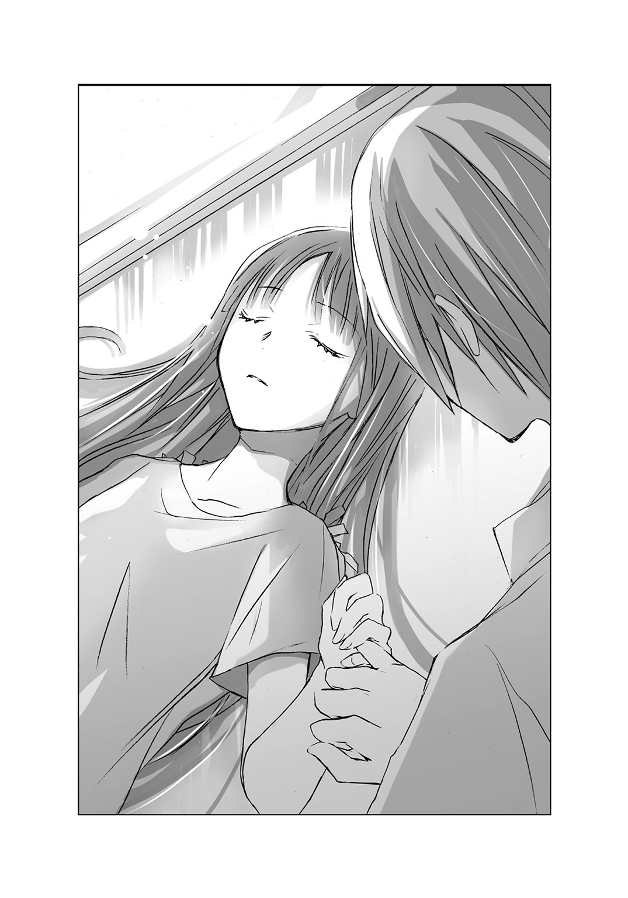
あ と が き
こんにちは、斧名田マニマニです。
このたびは『死んでも』シリーズの続刊を、お手に取っていただきありがとうございます。
続刊を出すことを、まず第一の目標にしてきたので、今回こうして再びお目にかかることができて、とてもうれしいです。
応援してくださったみなさんのおかげだと、本当に感謝しています。締めの言葉みたいになってるけど、まだ続くよ。
ところで今年、初めて熱中症になりました。
この本の原稿を書いている最中のことです。
暑くてひどい頭痛がしてきたので「ラーメン食べて塩分摂取すれば治るだろう」と、酷暑の中、いそいそラーメン屋さんに赴き、さらに症状を悪化させ、最終的に救急病院のお世話になりました。
今までだいたいの体調不良はラーメンを食べることで治ってきたので、結構ショックでした。軟になったものです。
ラーメンと同じぐらい味噌汁に対して絶大な信頼を寄せていて、味噌汁も大概の体調不良をなんとかしてくれます。私は薬を飲んだ瞬間、復活するタイプの人間です。
夏を過ごしながら、夏の物語を書くのはとても幸福でした。
この暑い日に、陵介や由依たちはどんなことをして、どんな思い出を作っているのかなと、妄想してみたり。
私の思い出は、ＴＳ○ＴＡＹＡ通いと歯医者と熱中症しかないけどな......。
さて少々私信になってしまいますが、お礼を言わせてください。
イラストレーターの竹岡美穂様、担当Ｈさん、デザイナーさん、営業担当さん、編集部の皆さん、校正さん、関わってくださったすべての方に、全力を込めてありがとうございます！
そして何よりも、この本を手に取ってくださったあなたに心からの感謝を！
『死んでも』シリーズが、大切な夏の日を思い出すための、きっかけになってくれれば、うれしいです。
十月某日 さっき届いたとんかつ弁当を横目に見ながら 斧名田マニマニ
著者紹介
斧名田マニマニ おのなたまにまに
鎌倉市在住。
執筆中のおともは、映画と珈琲。
映画は、登場人物がしゃべりまくって、食べまくって、暴れまくる作品が好きです。基本的に何でも見ます。幽霊が出てくるの以外。
幽霊、蜂、地震、超燃えてる火が苦手です......。
illustration
竹岡美穂 たけおかみほ
７月１日生まれ。水彩好きイラストレーター。ライトノベルや児童書方面で活動中。主な挿絵担当作品は「〝文学少女〟」「ヒカルが地球にいたころ...」（野村美月著／ファミ通文庫）、「本の怪談」「怪談収集家」（緑川聖司著／ポプラポケット文庫）、「スワロウテイル人工少女販売処」（籐真千歳著／ハヤカワ文庫ＪＡ）など。
ダッシュエックス文庫DIGITAL
死んでも死んでも死んでも死んでも忘れないと彼女は泣いた
著者 斧名田マニマニ
© MANIMANI ONONATA 2016
２０１６年12月31日発行
この電子書籍は、ダッシュエックス文庫「死んでも死んでも死んでも死んでも忘れないと彼女は泣いた」
２０１６年11月30日発行の第１刷を底本としています。
発行者 鈴木晴彦
発行所 株式会社 集英社
〒１０１－８０５０
東京都千代田区一ツ橋２丁目５番10号
０３－３２３０－６０８０（読者係）
制作所 株式会社ＩＣＥ
本作品の全部また一部を無断で複製、転載、改竄、インターネット上に掲載すること、および有償無償に関わらず、本データを第三者に譲渡することを禁じます。なお個人利用の目的であっても、コピーガードを解除しての複製は、法律で禁じられています。